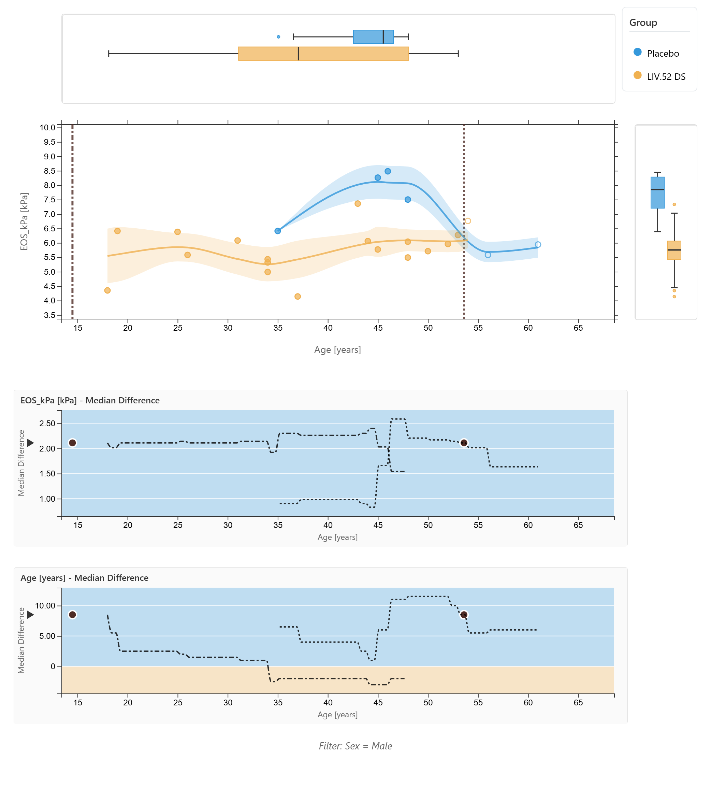
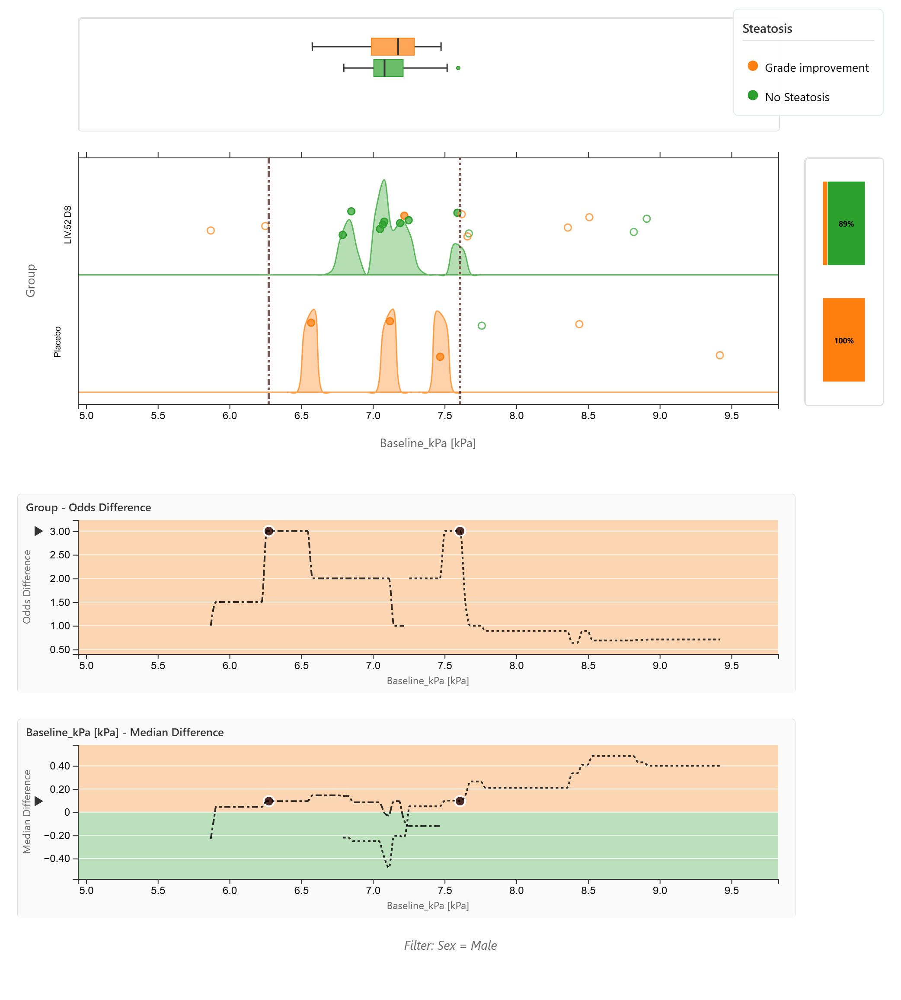
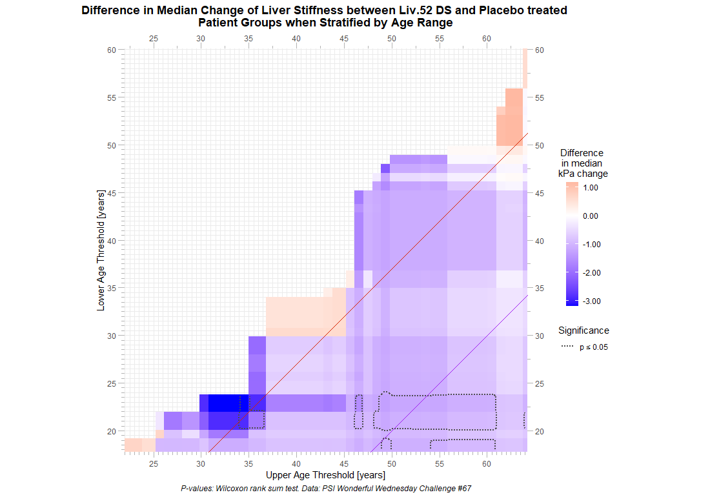
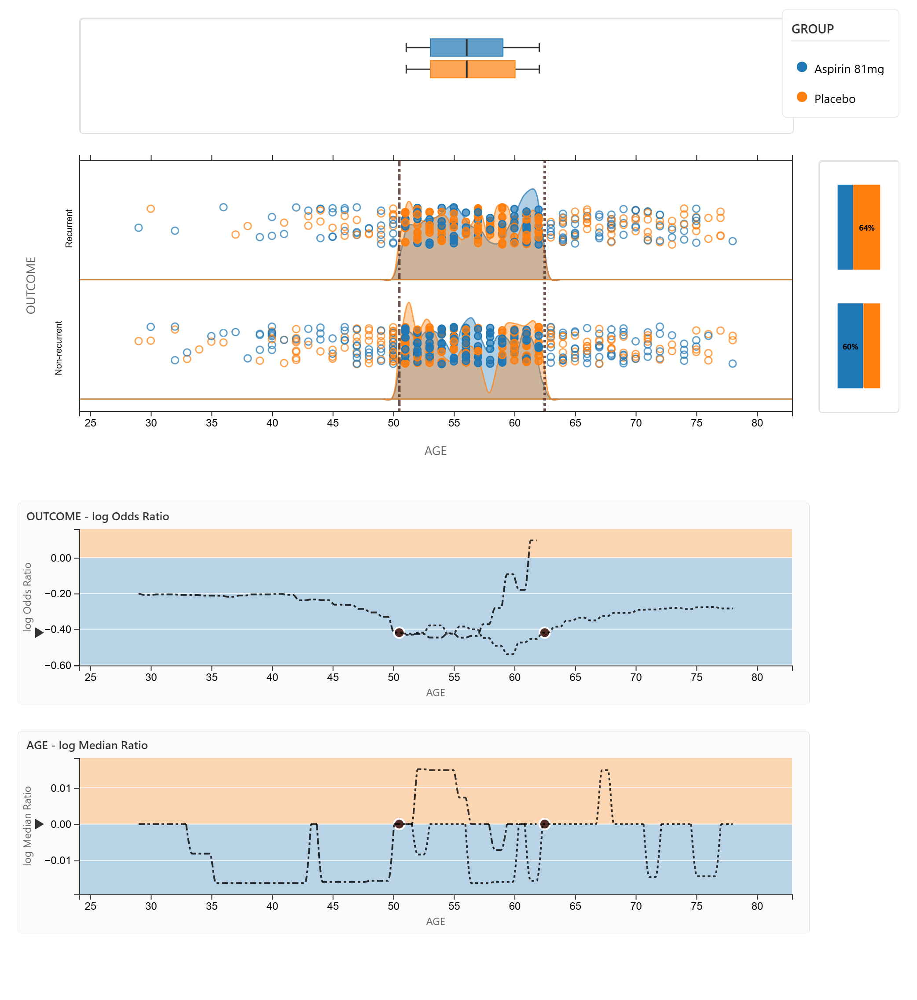
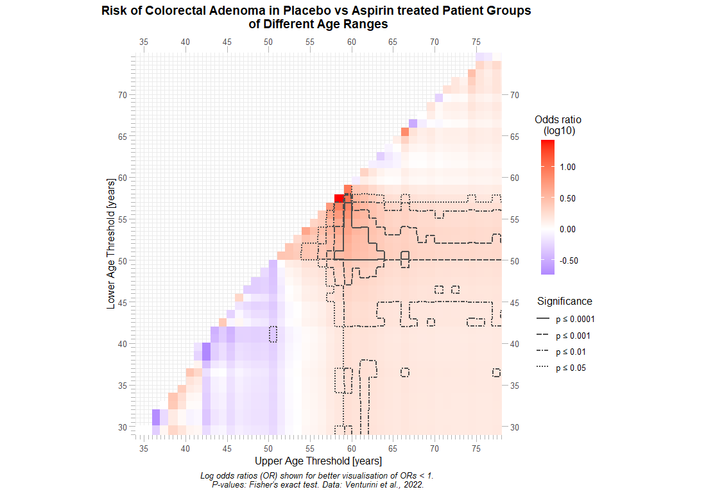
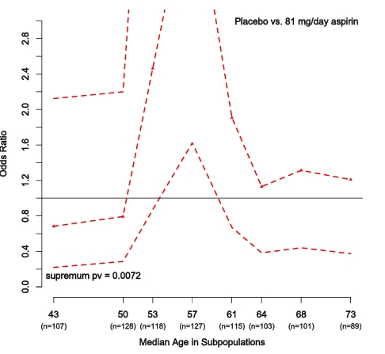
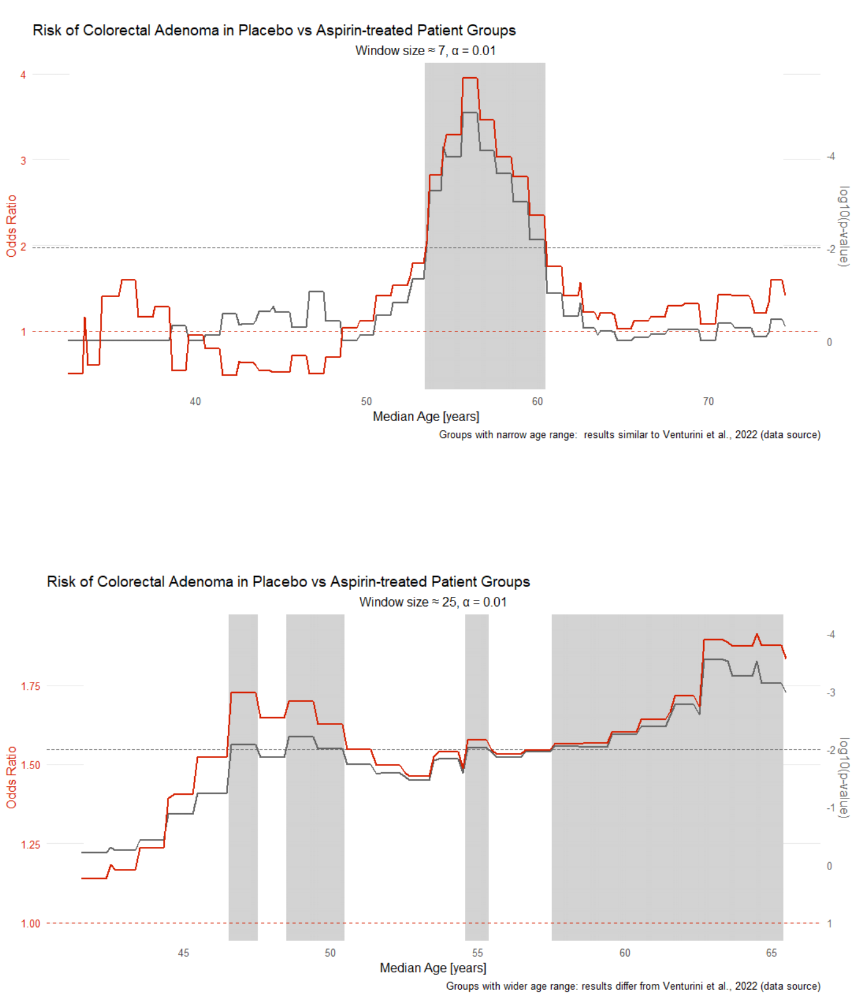

Fatty liver disease subgroups - revisited
Presenting the data explorer to look at distributions, trends and subgroups
This challenge was posted already in September 2025. As not all proposed visualisations have been presented, there will be an additional webinar with this topic. Feel free to elaborate on the presented visuals or to propose new ones.
There is a recent publication: The Effect of Liv.52 DS in Metabolic Dysfunction-Associated Fatty Liver Disease (MAFLD): A Pilot, Randomized, Double-Blind, Placebo-Controlled, Clinical Study
The publication is available via NIH.
Create visualisation to explore possible differences in the treatment effect with regard to subgroups.
A description of the challenge can also be found here.
A recording of the session can be found here.



An interactive HTML dashboard for exploring clinical trial data, featuring:
Input Data
Analysis Methods
MEDIAN METHOD (Numeric Y variables):
ODDS METHOD (Categorical Y variables):
Interactive Controls
VARIABLE SELECTION:
FILTERING:
THRESHOLD SELECTION:
DISPLAY OPTIONS:
COMPARISON TYPE:
Statistical Tests
for 2 Groups:
for >2 Groups:
Results displayed for both full range and filtered range. Significant p-values (p < 0.05) highlighted in bold green.
Comparison Plots
Two plots below the main scatter plot show:
Features:
Export Options
EXPORT PLOT AS PNG:
EXPORT SETTINGS & STATS:




# Note: Set working directory as needed before running
# setwd("/path/to/your/project")
MAFLD_simData <-
read.csv("https://raw.githubusercontent.com/VIS-SIG/Wonderful-Wednesdays/refs/heads/master/data/2025/2025-08-13/LSM_Score.csv")
MAFLD_simData[, "kPa_change"] <- MAFLD_simData$EOS_kPa - MAFLD_simData$Baseline_kPa
MAFLD_simData[, "Group"] <- factor(MAFLD_simData$Group)
MAFLD_simData[, "Sex"] <- factor(MAFLD_simData$Sex)
MAFLD_simData[, "Steatosis"] <- factor(MAFLD_simData$Steatosis)
library(htmltools)
library(jsonlite)
# ==============================================================================
# METHOD REGISTRY STRUCTURE
# ==============================================================================
# Global registry
COMPARISON_METHODS <- list()
# Register a Method (Tier 1)
register_method <- function(
method_id, # "median" or "odds"
display_name, # "Median" or "Odds"
variable_type, # "numeric" or "categorical"
comparison_types = list() # List of comparison types available for this method
) {
COMPARISON_METHODS[[method_id]] <<- list(
id = method_id,
display_name = display_name,
variable_type = variable_type,
comparison_types = comparison_types
)
invisible(method_id)
}
# Register a Comparison Type (Tier 2) for a specific method
add_comparison_type <- function(
method_id, # Which method this belongs to
comp_id, # "difference" or "ratio"
display_name, # "Difference" or "Ratio"
is_default = FALSE,
metadata = list() # Additional settings (e.g., reference_line, scale_type)
) {
if (!method_id %in% names(COMPARISON_METHODS)) {
stop("Method '", method_id, "' not registered. Register method first.")
}
COMPARISON_METHODS[[method_id]]$comparison_types[[comp_id]] <<- list(
id = comp_id,
display_name = display_name,
is_default = is_default,
metadata = metadata
)
invisible(comp_id)
}
# ==============================================================================
# REGISTER CURRENT METHODS
# ==============================================================================
# Register Median Method (for numeric Y variables)
register_method(
method_id = "median",
display_name = "Median",
variable_type = "numeric"
)
# Add comparison types for Median
add_comparison_type(
method_id = "median",
comp_id = "difference",
display_name = "Difference",
is_default = TRUE,
metadata = list(
reference_line = 0,
scale_type = "linear",
y_axis_label = "Median Difference"
)
)
add_comparison_type(
method_id = "median",
comp_id = "ratio",
display_name = "Ratio",
is_default = FALSE,
metadata = list(
reference_line = 1.0,
scale_type = "linear",
y_axis_label = "Median Ratio"
)
)
# Register Odds Method (for categorical Y variables)
register_method(
method_id = "odds",
display_name = "Odds",
variable_type = "categorical"
)
# Add comparison types for Odds
add_comparison_type(
method_id = "odds",
comp_id = "difference",
display_name = "Difference",
is_default = TRUE,
metadata = list(
reference_line = 0,
scale_type = "linear",
y_axis_label = "Odds Difference"
)
)
add_comparison_type(
method_id = "odds",
comp_id = "ratio",
display_name = "Ratio",
is_default = FALSE,
metadata = list(
reference_line = 1.0,
scale_type = "log", # Odds ratios typically use log scale
y_axis_label = "Odds Ratio"
)
)
# ==============================================================================
# HELPER FUNCTIONS
# ==============================================================================
# Get the appropriate method for a variable
get_method_for_variable <- function(data, var_name) {
if (!var_name %in% names(data)) {
warning("Variable '", var_name, "' not found in data")
return("median") # Default fallback
}
var_data <- data[[var_name]]
# Determine type
if (is.factor(var_data) || is.character(var_data)) {
return("odds")
} else if (is.numeric(var_data)) {
return("median")
} else {
warning("Unrecognized variable type for '", var_name, "', defaulting to median")
return("median")
}
}
# Get default comparison type for a method
get_default_comparison <- function(method_id) {
if (!method_id %in% names(COMPARISON_METHODS)) {
return("difference") # Safe fallback
}
comp_types <- COMPARISON_METHODS[[method_id]]$comparison_types
# Find the default
for (comp_id in names(comp_types)) {
if (isTRUE(comp_types[[comp_id]]$is_default)) {
return(comp_id)
}
}
# If no default marked, return first one
if (length(comp_types) > 0) {
return(names(comp_types)[1])
}
return("difference") # Ultimate fallback
}
# Prepare registry for JavaScript
prepare_registry_json <- function() {
registry_json <- jsonlite::toJSON(COMPARISON_METHODS, auto_unbox = TRUE, pretty = FALSE)
return(registry_json)
}
# ==============================================================================
# MAIN FUNCTION
# ==============================================================================
create_dataExplorer_html <- function(data, filename = "interactive_explorer.html",
default_x = NULL, default_y = NULL,
default_color = NULL, variable_units = NULL,
color_mapping = NULL, validate_data = TRUE,
max_viz_points = 10000, debug_mode = FALSE) {
# 1. Validate function parameters
validate_parameters(data, default_x, default_y, default_color,
variable_units, color_mapping)
# 2. Detect variable types and assign defaults
validated <- detect_variable_types(data, default_x, default_y, default_color,
variable_units, color_mapping, validate_data)
# 3. Determine initial method based on default Y variable
initial_method <- get_method_for_variable(data, validated$default_y)
initial_comparison <- get_default_comparison(initial_method)
cat("Initial method:", initial_method, "| Comparison:", initial_comparison, "\n")
# 4. Data quality report (if validation enabled)
if (validate_data) {
has_issues <- validate_data_quality(data, validated$numeric_vars, validated$factor_vars,
verbose = TRUE)
}
## Get configuration
config <- get_dashboard_config(max_viz_points)
## Metadata (pass config to use consistent colors)
metadata <- prepare_metadata(data, validated$factor_vars, color_mapping, variable_units, config)
## Prepare registry for JavaScript
registry_json <- prepare_registry_json()
## Options: X-axis - continuous (numeric); Y-axis - all variables; Color - categorical (factor or character)
numeric_options_x <- create_options(validated$numeric_vars, validated$default_x)
all_vars_for_y <- c(validated$numeric_vars, validated$factor_vars)
all_options_y <- create_options(all_vars_for_y, validated$default_y)
factor_options <- create_options(validated$factor_vars, validated$default_color)
filter_options <- create_options(validated$factor_vars, NULL)
## Build HTML in parts
html_part1 <- paste0(
'<!DOCTYPE html>
<html lang="en">
<head>
<meta charset="UTF-8">
<title>Interactive Data Explorer</title>
<script src="https://cdnjs.cloudflare.com/ajax/libs/d3/7.8.5/d3.min.js"></script>
<script src="https://html2canvas.hertzen.com/dist/html2canvas.min.js"></script>
<style>',
generate_css(),
'</style>
</head>
<body>',
generate_html_structure(filename, numeric_options_x, all_options_y,
factor_options, filter_options)
)
## Convert config to JSON for JavaScript
config_json <- toJSON(config, auto_unbox = TRUE, pretty = FALSE)
html_part2 <- paste0(
'<script>
var rawData = ', metadata$data_json, ';
var factorMetadata = ', metadata$factor_metadata_json, ';
var variableUnits = ', metadata$units_json, ';
var CONFIG = ', config_json, ';
var COMPARISON_REGISTRY = ', registry_json, ';
var INITIAL_METHOD = "', initial_method, '";
var INITIAL_COMPARISON = "', initial_comparison, '";
',
safely_generate_js(generate_js_utilities, "utilities", debug_mode),
safely_generate_js(generate_js_statistics, "statistics", debug_mode),
safely_generate_js(generate_js_state, "state", debug_mode),
safely_generate_js(generate_js_helpers, "helpers", debug_mode),
safely_generate_js(generate_js_initialization, "initialization", debug_mode),
safely_generate_js(generate_js_data_management, "data_management", debug_mode),
safely_generate_js(generate_js_scatter_plot, "scatter_plot", debug_mode),
safely_generate_js(generate_js_box_plots, "box_plots", debug_mode),
safely_generate_js(generate_js_median_plots, "median_plots", debug_mode),
safely_generate_js(generate_js_exports, "exports", debug_mode)
)
html_part3 <- paste0(
'
state.data.raw = rawData;
state.selections.xVar = "', validated$default_x, '";
state.selections.yVar = "', validated$default_y, '";
state.selections.colorVar = "', validated$default_color, '";
// Clear color scale cache when color variable changes
if (state.cache.lastColorVar !== state.selections.colorVar) {
state.cache.colorScales = {};
}
',
safely_generate_js(generate_js_plotting_functions, "plotting_functions")
)
html_part4 <- '
document.addEventListener("DOMContentLoaded", function() {
if (typeof d3 === "undefined") {
console.error("D3 library not loaded!");
return;
}
initializePlot();
updateBinaryComparisonOptions();
updateComparisonModeAvailability();
});
</script>
</body>
</html>'
# Combine all parts
# Combine all parts
html_content <- paste0(html_part1, html_part2, html_part3, html_part4)
writeLines(html_content, filename, useBytes = TRUE)
cat("HTML file created:", filename, "\n")
# In debug mode, also write JavaScript to a separate file for easier debugging
if (debug_mode) {
js_filename <- sub("\\.html$", "_debug.js", filename)
js_content <- paste0(
"// JavaScript extracted from: ", filename, "\n",
"// Generated: ", Sys.time(), "\n",
"// Debug mode: ON\n\n",
"// DATA VARIABLES\n",
"var rawData = ", metadata$data_json, ";\n",
"var factorMetadata = ", metadata$factor_metadata_json, ";\n",
"var variableUnits = ", metadata$units_json, ";\n",
"var CONFIG = ", config_json, ";\n",
"var COMPARISON_REGISTRY = ", registry_json, ";\n",
"var INITIAL_METHOD = '", initial_method, "';\n",
"var INITIAL_COMPARISON = '", initial_comparison, "';\n\n",
"// GENERATED FUNCTIONS\n",
safely_generate_js(generate_js_utilities, "utilities", TRUE),
safely_generate_js(generate_js_statistics, "statistics", TRUE),
safely_generate_js(generate_js_state, "state", TRUE),
safely_generate_js(generate_js_helpers, "helpers", TRUE),
safely_generate_js(generate_js_initialization, "initialization", TRUE),
safely_generate_js(generate_js_data_management, "data_management", TRUE),
safely_generate_js(generate_js_scatter_plot, "scatter_plot", TRUE),
safely_generate_js(generate_js_box_plots, "box_plots", TRUE),
safely_generate_js(generate_js_median_plots, "median_plots", TRUE),
safely_generate_js(generate_js_exports, "exports", TRUE)
)
writeLines(js_content, js_filename, useBytes = TRUE)
cat("Debug JavaScript file created:", js_filename, "\n")
}
return(invisible(filename))
}
# ==============================================================================
# DASHBOARD VALIDATION UTILITY
# ==============================================================================
#' Validate a generated dashboard HTML file
#'
#' @param filename Path to the HTML file to validate
#' @return A list with validation results
validate_dataExplorer <- function(filename) {
if (!file.exists(filename)) {
stop("File not found: ", filename)
}
content <- readLines(filename, warn = FALSE)
content_str <- paste(content, collapse = "\n")
results <- list(
file = filename,
size_kb = round(file.size(filename) / 1024, 1),
line_count = length(content),
checks = list()
)
# Check for required elements
required_elements <- c(
"d3.min.js" = "D3.js library",
"html2canvas" = "html2canvas library",
"var rawData" = "Data initialization",
"var CONFIG" = "Configuration object",
"var state" = "State management",
"function updatePlot" = "Main plot function",
"function updateMedianCompPlot" = "Comparison plot function",
"initializePlot" = "Initialization call"
)
for (pattern in names(required_elements)) {
results$checks[[required_elements[[pattern]]]] <- grepl(pattern, content_str, fixed = TRUE)
}
# Count key elements
results$stats <- list(
js_functions = length(gregexpr("function\\s+\\w+\\s*\\(", content_str)[[1]]),
event_listeners = length(gregexpr("addEventListener", content_str)[[1]]),
d3_selections = length(gregexpr("d3\\.select", content_str)[[1]])
)
# Check for common issues
results$warnings <- character(0)
if (grepl("undefined", content_str)) {
# Check if it's a real issue or just the word in a string
undefined_count <- length(gregexpr("=\\s*undefined|===\\s*undefined", content_str)[[1]])
if (undefined_count > 20) {
results$warnings <- c(results$warnings,
paste("High number of undefined checks:", undefined_count))
}
}
# Summary
all_passed <- all(unlist(results$checks))
results$valid <- all_passed
# Print summary
cat("\n=== Dashboard Validation Results ===\n")
cat("File:", results$file, "\n")
cat("Size:", results$size_kb, "KB |", results$line_count, "lines\n")
cat("\nRequired Elements:\n")
for (name in names(results$checks)) {
status <- if (results$checks[[name]]) "\u2713" else "\u2717"
cat(" ", status, name, "\n")
}
cat("\nStatistics:\n")
cat(" Functions:", results$stats$js_functions, "\n")
cat(" Event listeners:", results$stats$event_listeners, "\n")
cat(" D3 selections:", results$stats$d3_selections, "\n")
if (length(results$warnings) > 0) {
cat("\nWarnings:\n")
for (w in results$warnings) {
cat(" !", w, "\n")
}
}
cat("\nOverall:", if (all_passed) "VALID \u2713" else "ISSUES FOUND \u2717", "\n")
return(invisible(results))
}
# ==============================================================================
# HELPER FUNCTIONS
# ==============================================================================
# 1.1. PARAMETER VALIDATION
validate_parameters <- function(data, default_x, default_y, default_color,
variable_units, color_mapping) {
# 1. Check data is a data.frame
if (!is.data.frame(data)) {
stop("'data' must be a data.frame")
}
if (nrow(data) == 0) {
stop("'data' must contain at least one row")
}
# 2. Validate variable_units parameter
if (!is.null(variable_units)) {
if (!is.list(variable_units)) {
stop("'variable_units' must be a named list")
}
if (is.null(names(variable_units)) || any(names(variable_units) == "")) {
stop("'variable_units' must be a named list (all elements must have names)")
}
# Check that unit names correspond to variables in data
invalid_vars <- setdiff(names(variable_units), names(data))
if (length(invalid_vars) > 0) {
warning("The following variables in 'variable_units' are not in data: ",
paste(invalid_vars, collapse = ", "))
}
}
# 3. Validate color_mapping parameter
if (!is.null(color_mapping)) {
if (!is.list(color_mapping)) {
stop("'color_mapping' must be a named list")
}
for (var_name in names(color_mapping)) {
# Check variable exists in data
if (!var_name %in% names(data)) {
warning("'", var_name, "' in color_mapping is not a variable in data")
next
}
colors_vec <- color_mapping[[var_name]]
# Check that it's a named vector
if (is.null(names(colors_vec))) {
stop("Color mapping for '", var_name, "' must be a named vector (names = levels, values = colors)")
}
# Validate hex color format
invalid_colors <- colors_vec[!grepl("^#[0-9A-Fa-f]{6}$", colors_vec)]
if (length(invalid_colors) > 0) {
warning("Invalid hex colors in '", var_name, "' mapping: ",
paste(invalid_colors, collapse = ", "))
}
}
}
invisible(TRUE)
}
# 1.2. VARIABLE TYPE DETECTION
detect_variable_types <- function(data, default_x, default_y, default_color,
variable_units, color_mapping, validate_data) {
# Automatically detect variable types
numeric_vars <- names(data)[sapply(data, function(x) is.numeric(x) || is.integer(x))]
factor_vars <- names(data)[sapply(data, function(x) is.factor(x) || is.character(x))]
if (!validate_data) {
# Skip validation - just detect and assign defaults
if (is.null(default_x)) default_x <- numeric_vars[1]
if (is.null(default_y)) default_y <- if(length(numeric_vars) > 1) numeric_vars[2] else numeric_vars[1]
if (is.null(default_color)) default_color <- factor_vars[1]
return(list(
numeric_vars = numeric_vars,
factor_vars = factor_vars,
default_x = default_x,
default_y = default_y,
default_color = default_color
))
}
# Full validation: Check requirements for dashboard
# Must have at least one numeric variable
if (length(numeric_vars) == 0) {
stop("'data' must contain at least one numeric or integer variable for plotting")
}
# Must have at least one categorical variable
if (length(factor_vars) == 0) {
stop("'data' must contain at least one factor or character variable for grouping")
}
# Validate that defaults are appropriate types
if (!is.null(default_x) && !default_x %in% numeric_vars) {
stop("'default_x' must be a numeric variable. Available: ", paste(numeric_vars, collapse = ", "))
}
if (!is.null(default_color) && !default_color %in% factor_vars) {
stop("'default_color' must be a categorical variable. Available: ", paste(factor_vars, collapse = ", "))
}
# Assign defaults if not provided
if (is.null(default_x)) {
default_x <- numeric_vars[1]
message("Using '", default_x, "' as default X variable")
}
if (is.null(default_y)) {
default_y <- if(length(numeric_vars) > 1) numeric_vars[2] else numeric_vars[1]
message("Using '", default_y, "' as default Y variable")
}
if (is.null(default_color)) {
default_color <- factor_vars[1]
message("Using '", default_color, "' as default color variable")
}
# Check for missing units on numeric variables
if (!is.null(variable_units)) {
vars_with_units <- names(variable_units)
numeric_vars_without_units <- setdiff(numeric_vars, vars_with_units)
if (length(numeric_vars_without_units) > 0) {
message("Note: The following numeric variables do not have units specified: ",
paste(numeric_vars_without_units, collapse = ", "))
}
}
return(list(
numeric_vars = numeric_vars,
factor_vars = factor_vars,
default_x = default_x,
default_y = default_y,
default_color = default_color
))
}
# 1.3. DATA QUALITY VALIDATION
validate_data_quality <- function(data, numeric_vars, factor_vars, verbose = TRUE) {
if (!verbose) return(invisible(NULL))
cat("\n")
cat("═══════════════════════════════════════════════════════════\n")
cat(" DATA QUALITY REPORT\n")
cat("═══════════════════════════════════════════════════════════\n\n")
# Overview
cat(sprintf("Dataset: %d rows × %d columns\n", nrow(data), ncol(data)))
cat(sprintf(" • %d numeric variables\n", length(numeric_vars)))
cat(sprintf(" • %d categorical variables\n\n", length(factor_vars)))
has_issues <- FALSE
# 1. Missing Values
cat("─── Missing Values ────────────────────────────────────────\n")
missing_found <- FALSE
for (var in c(numeric_vars, factor_vars)) {
na_count <- sum(is.na(data[[var]]))
if (na_count > 0) {
missing_found <- TRUE
has_issues <- TRUE
pct <- round(100 * na_count / nrow(data), 1)
cat(sprintf(" ⚠ %s: %d missing (%.1f%%)\n", var, na_count, pct))
}
}
if (!missing_found) {
cat(" ✓ No missing values\n")
}
cat("\n")
# 2. Numeric Variables
cat("─── Numeric Variables ─────────────────────────────────────\n")
if (length(numeric_vars) == 0) {
has_issues <- TRUE
cat(" ⚠ NO NUMERIC VARIABLES FOUND\n")
cat(" Dashboard requires at least one numeric variable for plotting\n\n")
stop("Cannot create dashboard: no numeric variables found")
}
for (var in numeric_vars) {
values <- data[[var]]
valid_values <- values[!is.na(values)]
# Infinite/NaN
inf_count <- sum(is.infinite(valid_values))
nan_count <- sum(is.nan(valid_values))
if (inf_count > 0 || nan_count > 0) {
has_issues <- TRUE
cat(sprintf(" ⚠ %s:\n", var))
if (inf_count > 0) cat(sprintf(" %d Infinite values\n", inf_count))
if (nan_count > 0) cat(sprintf(" %d NaN values\n", nan_count))
}
# All identical
finite_values <- valid_values[is.finite(valid_values)]
if (length(finite_values) > 0) {
n_unique <- length(unique(finite_values))
if (n_unique == 1) {
has_issues <- TRUE
cat(sprintf(" ⚠ %s: All values identical (%.3f)\n", var, finite_values[1]))
} else if (n_unique < 5 && length(finite_values) > 20) {
cat(sprintf(" ℹ %s: Only %d unique values (possibly categorical?)\n", var, n_unique))
}
}
}
cat("\n")
# 3. Categorical Variables
cat("─── Categorical Variables ─────────────────────────────────\n")
if (length(factor_vars) == 0) {
has_issues <- TRUE
cat(" ⚠ NO CATEGORICAL VARIABLES FOUND\n")
cat(" Dashboard requires at least one categorical variable for grouping\n\n")
stop("Cannot create dashboard: no categorical variables found")
}
for (var in factor_vars) {
levels_present <- unique(data[[var]][!is.na(data[[var]])])
n_levels <- length(levels_present)
if (n_levels > 100) {
has_issues <- TRUE
cat(sprintf(" ⚠ %s: %d unique values (too many for categorical)\n", var, n_levels))
} else if (n_levels == 1) {
has_issues <- TRUE
cat(sprintf(" ⚠ %s: Only 1 level (no variation)\n", var))
} else if (n_levels <= 20) {
# Show group sizes for reasonable number of levels
counts <- table(data[[var]], useNA = "no")
cat(sprintf(" %s (%d levels):\n", var, n_levels))
for (lev in names(sort(counts, decreasing = TRUE))) {
n <- counts[lev]
symbol <- if (n < 3) "⚠" else if (n < 5) "ℹ" else " "
cat(sprintf(" %s %s: n=%d\n", symbol, lev, n))
}
} else {
cat(sprintf(" %s: %d levels\n", var, n_levels))
}
}
cat("\n")
# 4. Statistical Power Assessment
cat("─── Statistical Power Assessment ──────────────────────────\n")
for (var in factor_vars) {
groups <- table(data[[var]], useNA = "no")
n_groups <- length(groups)
if (n_groups == 2) {
min_n <- min(groups)
total_n <- sum(groups)
if (min_n < 3) {
has_issues <- TRUE
cat(sprintf(" ⚠ %s: Smallest group has only %d observations\n", var, min_n))
cat(" Statistical tests will be unreliable\n")
} else if (min_n < 10) {
cat(sprintf(" ℹ %s: Small groups (n=%d, %d) - limited power\n",
var, groups[1], groups[2]))
} else {
cat(sprintf(" ✓ %s: Adequate sample sizes (n=%d, %d)\n",
var, groups[1], groups[2]))
}
} else if (n_groups > 2 && n_groups <= 10) {
min_n <- min(groups)
if (min_n < 3) {
has_issues <- TRUE
cat(sprintf(" ⚠ %s: Smallest group has only %d observations\n", var, min_n))
}
}
}
cat("\n")
# Summary
cat("═══════════════════════════════════════════════════════════\n")
if (has_issues) {
cat(" ⚠ DATA QUALITY ISSUES DETECTED\n")
cat(" Dashboard will be created but results may be unreliable.\n")
cat(" Review warnings above.\n")
} else {
cat(" ✓ DATA QUALITY: GOOD\n")
cat(" No major issues detected.\n")
}
cat("═══════════════════════════════════════════════════════════\n\n")
invisible(has_issues)
}
# 2. UTILITY FUNCTIONS
create_options <- function(vars, selected_var) {
paste(sapply(vars, function(var) {
selected <- if(identical(var, selected_var)) ' selected' else ''
paste0('<option value="', var, '"', selected, '>', var, '</option>')
}), collapse = "")
}
safely_generate_js <- function(generator_func, section_name, debug_mode = FALSE) {
tryCatch({
result <- generator_func()
if (is.null(result) || nchar(trimws(result)) == 0) {
warning("Section '", section_name, "' returned empty JavaScript")
return(paste0("/* Empty section: ", section_name, " */\n"))
}
if (debug_mode) {
# Add section markers for debugging
line_count <- length(strsplit(result, "\n")[[1]])
result <- paste0(
"\n/* ========== BEGIN SECTION: ", section_name, " (", line_count, " lines) ========== */\n",
result,
"\n/* ========== END SECTION: ", section_name, " ========== */\n"
)
}
return(result)
}, error = function(e) {
stop("Error generating JavaScript section '", section_name, "': ",
e$message, call. = FALSE)
})
}
# 3. CONFIGURATION MANAGEMENT
get_dashboard_config <- function(max_viz_points = 10e5) {
# Validate input
if (!is.numeric(max_viz_points) || length(max_viz_points) != 1) {
stop("'max_viz_points' must be a single numeric value, got: ",
class(max_viz_points), " of length ", length(max_viz_points))
}
if (max_viz_points < 1) {
stop("'max_viz_points' must be positive, got: ", max_viz_points)
}
if (max_viz_points != floor(max_viz_points)) {
warning("'max_viz_points' should be an integer, rounding ",
max_viz_points, " to ", floor(max_viz_points))
max_viz_points <- floor(max_viz_points)
}
list(
# Dimensions - matching existing JavaScript expectations
dimensions = list(
main = list(width = 900, height = 375),
top = list(width = 900, height = 90),
right = list(width = 90, height = 375),
medianCompY = list(width = 900, height = 225),
medianCompX = list(width = 900, height = 225)
),
# Margins for different plot types
margin = list(top = 20, right = 20, bottom = 70, left = 70),
topMargin = list(top = 20, right = 0, bottom = 20, left = 0),
rightMargin = list(top = 0, right = 20, bottom = 0, left = 20),
medianCompMargin = list(top = 30, right = 20, bottom = 40, left = 70),
# Settings
settings = list(
dotRadius = 4,
trendLineWidth = 2.5,
loessMinPoints = 3,
boxSizeRatio = 0.8,
medianSamplePoints = 100
),
# Performance settings
performance = list(
debounceDelay = 150,
max_points_interactive = max_viz_points,
chunk_size = 1000,
json_precision = 6
),
# Default color palette for groups
colors = list(
palette = c("#1f77b4", "#ff7f0e", "#2ca02c", "#d62728",
"#9467bd", "#8c564b", "#e377c2", "#7f7f7f",
"#bcbd22", "#17becf"),
binary_other = "#999999",
reference_line = "#4F2C26",
significant = "#28a745",
not_significant = "#6c757d",
warning = "#ffc107"
),
# UI section colors (border-left colors)
sections = list(
variables = "#28a745",
filter = "#dc3545",
display = "#ffc107",
thresholds = "#6f42c1",
comparison = "#6c757d",
export = "#17a2b8"
)
)
}
# 4. METADATA PREPARATION
prepare_metadata <- function(data, factor_vars, color_mapping, variable_units,
config = NULL) {
# Prepare factor metadata with ordering from color_mapping
factor_metadata <- list()
# Get configuration (fallback - allows prepare_metadata() to be called standalone if needed)
if (is.null(config)) {
config <- get_dashboard_config(10000)
}
# Use color palette from config
default_colors <- config$colors$palette
for (var in factor_vars) {
if (is.factor(data[[var]])) {
var_levels <- levels(data[[var]])
} else {
# For character variables, create levels from unique values
var_levels <- unique(as.character(data[[var]]))
}
# Generate default colors (cycle through palette if needed)
n_levels <- length(var_levels)
auto_colors <- default_colors[((seq_len(n_levels) - 1) %% length(default_colors)) + 1]
names(auto_colors) <- var_levels
factor_metadata[[var]] <- list(
levels = var_levels,
colors = as.list(auto_colors)
)
}
# Override with user-provided colors from color_mapping
if (!is.null(color_mapping) && is.list(color_mapping)) {
for (var_name in names(color_mapping)) {
if (var_name %in% names(factor_metadata)) {
colors_vec <- color_mapping[[var_name]]
if (!is.null(names(colors_vec))) {
# Use the ORDER from color_mapping (names of the vector)
factor_metadata[[var_name]]$levels <- names(colors_vec)
factor_metadata[[var_name]]$colors <- as.list(colors_vec)
}
}
}
}
# Prepare units metadata
units_metadata <- if (!is.null(variable_units)) as.list(variable_units) else list()
# Convert metadata to JSON
metadata_json <- jsonlite::toJSON(factor_metadata, auto_unbox = TRUE)
units_json <- jsonlite::toJSON(units_metadata, auto_unbox = TRUE)
# Get configuration
config_json <- jsonlite::toJSON(config, auto_unbox = TRUE, pretty = TRUE)
# Round numeric columns to configured precision for visualization
data_rounded <- data
numeric_cols <- sapply(data, function(x) is.numeric(x) || is.integer(x))
for (col in names(data)[numeric_cols]) {
data_rounded[[col]] <- signif(data[[col]], config$performance$json_precision)
}
data_json <- toJSON(data_rounded, dataframe = "rows", na = "null",
digits = config$performance$json_precision)
return(list(
factor_metadata_json = metadata_json,
units_json = units_json,
data_json = data_json
))
}
# 5. CSS GENERATION
generate_css <- function() {
'
body { font-family: "Segoe UI", sans-serif; margin: 0; padding: 20px; background: #f5f5f5; }
.dashboard-container { display: grid; grid-template-columns: 600px 1fr; grid-template-rows: auto 1fr; gap: 20px; max-width: 1800px; margin: 0 auto; height: calc(100vh - 40px); }
.dashboard-title { grid-column: 1 / -1; text-align: center; color: #333; margin: 0; font-size: 1.8em; font-weight: 300; background: white; padding: 20px 20px 5px 20px; border-radius: 12px; box-shadow: 0 4px 15px rgba(0,0,0,0.1); }
.left-panel { background: white; border-radius: 12px; box-shadow: 0 4px 15px rgba(0,0,0,0.1); padding: 20px; overflow-y: auto; display: grid; grid-template-columns: 1fr 1fr; grid-template-rows: auto auto; gap: 20px; align-items: start; }
.column-1 { display: flex; flex-direction: column; gap: 20px; }
.column-2 { display: flex; flex-direction: column; gap: 20px; }
.main-content { background: white; border-radius: 12px; box-shadow: 0 4px 15px rgba(0,0,0,0.1); padding: 20px; display: flex; flex-direction: column; }
.control-section { margin-bottom: 25px; padding: 15px; border-radius: 8px; border-left: 4px solid #007bff; }
.control-section h3 { margin: 0 0 15px 0; font-size: 1.1em; font-weight: 600; color: #333; }
.filter-section { border-left-color: #dc3545; background: #fff5f5; }
.variables-section { border-left-color: #28a745; background: #f8fff9; }
.display-section { border-left-color: #ffc107; background: #fffdf5; }
.thresholds-section { border-left-color: #6f42c1; background: #f8f7ff; }
.variable-group, .control-group { display: flex; flex-direction: column; margin-bottom: 15px; }
.variable-label, .control-label { font-size: 0.9em; font-weight: 600; color: #495057; margin-bottom: 5px; }
.variable-select, .control-slider, .control-value { padding: 8px 12px; border: 2px solid #dee2e6; border-radius: 6px; background: white; font-size: 0.9em; color: #495057; }
.variable-select { cursor: pointer; }
.control-value { font-family: monospace; background: #f8f9fa; border: 1px solid #e9ecef; }
.control-value:focus { outline: none; border-color: #007bff; box-shadow: 0 0 0 2px rgba(0,123,255,0.25); background: white; }
.reset-button { padding: 8px 16px; border: 2px solid #6c757d; border-radius: 6px; background: white; color: #6c757d; font-size: 0.9em; cursor: pointer; transition: all 0.2s; margin-top: 10px; }
.reset-button:hover { background: #6c757d; color: white; }
#exportPlot:hover, #exportData:hover { background: #17a2b8 !important; color: white !important; }
.filter-button { padding: 6px 12px; margin: 4px; border: 2px solid #dee2e6; border-radius: 6px; background: white; color: #495057; font-size: 0.85em; cursor: pointer; transition: all 0.2s; }
.filter-button:hover { background: #f8f9fa; }
.filter-button.active { background: #dc3545; color: white; border-color: #dc3545; }
.filter-buttons-container { display: flex; flex-wrap: wrap; gap: 4px; margin-top: 10px; }
.checkbox-group { display: flex; align-items: center; gap: 8px; margin-bottom: 10px; }
.checkbox-group input[type="checkbox"] { transform: scale(1.2); }
.plot-container {
flex: 1;
display: flex;
justify-content: center;
align-items: center;
min-height: 600px;
position: relative;
}
.main-plot-area {
display: flex;
flex-direction: column;
align-items: flex-start;
position: relative;
}
.top-row { display: flex; align-items: flex-end; margin-bottom: 10px; }
.bottom-row { display: flex; align-items: flex-start; }
.top-plot { margin-left: 70px; }
.main-plot { }
.right-plot { margin-left: 10px; margin-top: 20px; }
.box-plot { background: #fafafa; border: 1px solid #e0e0e0; border-radius: 4px; display: block; }
.median-diff-plot { background: #fafafa; border: 1px solid #e0e0e0; border-radius: 4px; display: none; margin-top: 10px; }
.median-plot-title { font-size: 13px; font-weight: 600; fill: #333; }
.median-line { fill: none; stroke: #666; stroke-width: 2; opacity: 0.6; }
.p-values-display { background: #f8f9fa; border-radius: 8px; padding: 15px; margin-bottom: 20px; }
.p-values-title { font-weight: 600; margin-bottom: 15px; color: #495057; font-size: 1em; }
.p-value-section { margin-bottom: 15px; padding: 10px; background: white; border-radius: 6px; border-left: 3px solid #007bff; }
.p-value-section h4 { margin: 0 0 8px 0; font-size: 0.9em; color: #666; }
.p-value-row { display: flex; justify-content: space-between; align-items: center; margin-bottom: 5px; }
.p-value { font-family: monospace; font-weight: 600; font-size: 0.9em; }
.p-significant { color: #28a745; }
.p-not-significant { color: #6c757d; }
.legend {
position: absolute;
top: 10px;
right: 20px;
display: flex;
flex-direction: column;
gap: 8px;
background: rgba(255, 255, 255, 0.95);
padding: 10px;
border-radius: 6px;
box-shadow: 0 2px 8px rgba(0,0,0,0.15);
border: 1px solid #e9ecef;
max-width: 200px;
z-index: 10;
}
.legend-item {
display: flex;
align-items: center;
gap: 8px;
font-size: 0.85em;
padding: 4px 6px;
background: transparent;
border-radius: 4px;
border: none;
}
.legend-dot { width: 12px; height: 12px; border-radius: 50%; }
.drag-line { cursor: ew-resize; stroke-width: 3; opacity: 0.8; }
.axis { font-size: 12px; }
.axis path, .axis line { stroke: #333; }
.dot { cursor: pointer; stroke-width: 1.5; transition: opacity 0.2s; }
.tooltip { position: absolute; padding: 10px; background: rgba(0, 0, 0, 0.8); color: white; border-radius: 4px; pointer-events: none; font-size: 12px; opacity: 0; transition: opacity 0.3s; }
.outlier { fill-opacity: 0.7; stroke-width: 1; }
.whisker { stroke: #333; stroke-width: 1.5; }
'
}
# 6. HTML STRUCTURE GENERATION
generate_html_structure <- function(filename, numeric_options_x, numeric_options_y,
factor_options, filter_options) {
title <- sub("_explorer$", "", tools::file_path_sans_ext(basename(filename)))
paste0('
<div class="dashboard-container">
<div style="grid-column: 1 / -1;">
<h2 class="dashboard-title" style="margin-bottom: 5px;">',
sub("_explorer$", "", tools::file_path_sans_ext(basename(filename))), '_data_explorer</h2>
<div id="filterDisplay" style="text-align: center; font-size: 0.9em; color: #666; font-style: italic; padding-bottom: 15px;"></div>
</div>
<div class="left-panel">
<div class="column-1">
<div class="control-section variables-section">
<h3>Displayed Variables</h3>
<div class="variable-group">
<div class="variable-label">X-Axis</div>
<select class="variable-select" id="xVariable">',
numeric_options_x,
'</select>
</div>
<div class="variable-group">
<div class="variable-label">Y-Axis</div>
<select class="variable-select" id="yVariable">',
numeric_options_y,
'</select>
</div>
<div class="variable-group">
<div class="variable-label">Color</div>
<select class="variable-select" id="colorVariable">',
factor_options, # Notice: this is OUTSIDE the quotes
'</select>
</div>
<div id="binaryComparisonSection" style="margin-top: 12px; padding: 10px; background: #f8f9fa; border-radius: 4px; border-left: 3px solid #6c757d;">
<div style="font-size: 0.85em; font-weight: 600; color: #495057; margin-bottom: 8px;">
Compare One Group vs. Rest
</div>
<div id="binaryComparisonOptions" style="font-size: 0.9em;">
</div>
</div>
</div>
<div class="control-section filter-section">
<h3>Filters</h3>
<div class="variable-group">
<div class="variable-label">Filter Variable</div>
<select class="variable-select" id="filterVariable">
<option value="None" selected>None</option>',
filter_options,
'</select>
</div>
<div id="filterButtonsContainer" class="filter-buttons-container"></div>
<div class="variable-group" style="margin-top: 20px;">
<div class="variable-label" id="xAxisFilterLabel">X-Axis Range</div>
<div style="display: flex; align-items: center; gap: 8px;">
<input type="text" class="control-value" id="minValue" value="-Inf" placeholder="min" style="flex: 1; width: 0;">
<span style="color: #666; font-weight: bold;">-</span>
<input type="text" class="control-value" id="maxValue" value="+Inf" placeholder="max" style="flex: 1; width: 0;">
</div>
</div>
<button id="resetRange" class="reset-button">Reset to Full Range</button>
<div style="font-size: 0.75em; color: #999; margin-top: 10px; font-style: italic; text-align: center;">
Enter values or drag lines in the plot
</div>
</div>
<div class="control-section display-section" id="trendlineSection">
<h3>Trendline Options</h3>
<div class="checkbox-group">
<input type="checkbox" id="showTrends" checked>
<label for="showTrends">Show Trend Lines</label>
</div>
<div class="checkbox-group">
<input type="checkbox" id="showConfidence">
<label for="showConfidence">Show Confidence Bands</label>
</div>
<div class="control-group">
<div class="control-label">LOESS Bandwidth</div>
<input type="range" id="loessBandwidth" class="control-slider"
min="0.1" max="1.0" step="0.05" value="0.3">
<div class="control-value" id="bandwidthValue">0.30</div>
</div>
</div>
<div class="control-section display-section" id="violinSection" style="display: none;">
<h3>Density Options</h3>
<div class="checkbox-group">
<input type="checkbox" id="showViolins" checked>
<label for="showViolins">Show Density Ridges</label>
</div>
</div>
<div class="control-section display-section" id="dotSizeSection">
<h3>Dot Display</h3>
<div class="control-group">
<div class="control-label">Dot Size</div>
<input type="range" id="dotSizeSlider" class="control-slider"
min="0" max="1" step="0.05" value="1">
<div class="control-value" id="dotSizeValue">100%</div>
</div>
</div>
<div class="control-section display-section" id="violinSection" style="display: none;">
<h3>Density Options</h3>
<div class="checkbox-group">
<input type="checkbox" id="showViolins" checked>
<label for="showViolins">Show Density Ridges</label>
</div>
</div>
<div class="control-section" style="border-left-color: #17a2b8; background: #f0f9ff;">
<h3>Export</h3>
<button id="exportPlot" class="reset-button" style="border-color: #17a2b8; color: #17a2b8; margin-top: 0;" onclick="exportPlotAsPNG()">
Export Plot as PNG
</button>
<button id="exportData" class="reset-button" style="border-color: #17a2b8; color: #17a2b8;" onclick="exportSettingsAndStats()">
Export Settings & Stats
</button>
</div>
</div>
<div class="column-2">
<div class="control-section" style="border-left-color: #6c757d; background: #f8f9fa;">
<h3>Group Comparison</h3>
<!-- METHOD DISPLAY -->
<div id="methodDisplay" style="margin-bottom: 15px; padding: 10px; background: #e7f3ff; border: 2px solid #0056b3; border-radius: 6px; text-align: center;">
<div style="font-size: 0.8em; font-weight: 600; color: #004085; text-transform: uppercase; letter-spacing: 0.5px; margin-bottom: 4px;">
Method
</div>
<div id="methodLabel" style="font-size: 1.3em; font-weight: 700; color: #0056b3;">
Median
</div>
<div id="methodDescription" style="font-size: 0.75em; color: #666; margin-top: 4px; font-style: italic;">
For continuous Y variables
</div>
</div>
<!-- Comparison mode toggle -->
<div style="margin-bottom: 12px; padding: 8px; background: #f8f9fa; border-radius: 4px;">
<div style="font-size: 0.85em; font-weight: 600; color: #495057; margin-bottom: 6px;">
Comparison Type
</div>
<div style="display: flex; gap: 15px;">
<label style="display: flex; align-items: center; gap: 5px; cursor: pointer; font-size: 0.9em;">
<input type="radio" name="comparisonMode" value="difference" id="modeDifference" checked>
<span>Difference</span>
</label>
<label style="display: flex; align-items: center; gap: 5px; cursor: pointer; font-size: 0.9em;">
<input type="radio" name="comparisonMode" value="ratio" id="modeRatio">
<span>Ratio</span>
</label>
</div>
<div id="ratioWarning" style="display: none; margin-top: 6px; padding: 6px; background: #fff3cd; border-radius: 3px; font-size: 0.8em; color: #856404;">
ℹ️ Ratio disabled: Data contains negative or zero values
</div>
</div>
<div id="medianCompYValue"></div>
<div id="medianCompXValue"></div>
<!-- Binary Y Comparison (only shown for Odds method) -->
<div id="binaryYComparisonSection" style="display: none; margin-bottom: 12px; padding: 8px; background: #fff3e0; border-radius: 4px;">
<div style="font-size: 0.85em; font-weight: 600; color: #e65100; margin-bottom: 6px;">
Compare One Category vs. Rest
</div>
<div style="margin-bottom: 6px;">
<label style="display: flex; align-items: center; gap: 5px; cursor: pointer; font-size: 0.9em;">
<input type="checkbox" id="enableBinaryYComparison">
<span>Enable binary Y comparison</span>
</label>
</div>
<div id="binaryYOptions" style="display: none; margin-top: 8px;">
<div style="font-size: 0.8em; color: #666; margin-bottom: 4px;">Target category:</div>
<div id="binaryYButtons" style="display: flex; flex-wrap: wrap; gap: 4px;"></div>
</div>
</div>
<!-- Numbers in Groups Section -->
<div class="p-values-display" style="margin-bottom: 20px;">
<div class="p-values-title">Numbers in Groups</div>
<div id="groupNumbersResults"></div>
</div>
<!-- Statistical Tests Section -->
<div class="p-values-display" style="margin-bottom: 20px;">
<div class="p-values-title">Nominal Significance</div>
<div id="pValueResults"></div>
</div>
<!-- Median Differences Section -->
<div id="medianCompContainer" style="display: none;">
<div class="p-values-display">
<div class="p-values-title" id="comparisonValuesTitle">Median Differences</div>
<div style="font-size: 0.85em; color: #666; margin-bottom: 15px; text-align: center; font-weight: 600;">Filtered Range</div>
<!-- Y-axis difference -->
<div class="p-value-section" style="border-left-color: #6f42c1; margin-bottom: 10px;">
<h4 id="medianCompYTitle"></h4>
<div class="p-value-row">
<span id="medianCompValueY" class="p-value" style="font-family: inherit; font-weight: normal; font-size: 0.9em;"></span>
</div>
</div>
<!-- X-axis difference -->
<div class="p-value-section" style="border-left-color: #6f42c1; margin-bottom: 10px;">
<h4 id="medianCompXTitle"></h4>
<div class="p-value-row">
<span id="medianCompValueX" class="p-value" style="font-family: inherit; font-weight: normal; font-size: 0.9em;"></span>
</div>
</div>
<!-- Toggle button -->
<button id="toggleReference" class="reset-button" style="width: 100%; margin-top: 10px;">
Swap Reference Group
</button>
</div>
</div>
</div>
</div>
</div>
<div class="main-content">
<div class="plot-container">
<div class="main-plot-area">
<div class="top-row">
<div class="top-plot">
<svg id="topBoxPlot" width="900" height="90" class="box-plot"></svg>
</div>
</div>
<div class="bottom-row">
<div class="main-plot">
<svg id="plot" width="900" height="375"></svg>
</div>
<div class="right-plot">
<svg id="rightBoxPlot" width="90" height="375" class="box-plot"></svg>
</div>
</div>
<div style="margin-top: 10px;">
<svg id="medianCompPlotY" width="900" height="225" class="median-diff-plot"></svg>
</div>
<div style="margin-top: 10px;">
<svg id="medianCompPlotX" width="900" height="225" class="median-diff-plot"></svg>
</div>
<div class="legend" id="legend"></div>
<div id="downsampleNotification" style="display: none; margin-top: 10px; padding: 10px 15px; background: #fff3cd; border: 1px solid #ffc107; border-radius: 4px; font-size: 13px; color: #856404; line-height: 1.6;">
<div style="font-weight: 600; margin-bottom: 6px;">ℹ️ Large Dataset</div>
<ul style="margin: 0; padding-left: 20px;">
<li>Showing a random sample of <span id="downsampleCount"></span> of <span id="downsampleTotal"></span> points for visualization</li>
<li>Trendlines and median difference plots are disabled</li>
<li>All statistics and numerical effect comparisons use the complete dataset</li>
</ul>
</div>
</div>
</div>
</div>
</div>
<div class="tooltip" id="tooltip"></div>
</div>
</div>
')
}
# 7. JAVASCRIPT UTILITIES
generate_js_utilities <- function() {
r"(
var utils = {
// THRESHOLD BOUNDARY CONVENTION:
// All threshold comparisons use INCLUSIVE boundaries (>= and <=)
// This ensures points exactly at threshold values are included in ranges
// Applied consistently across filtering, statistics, and visualization
calculateDimensions: function(dim, margin) {
return {
width: dim.width - margin.left - margin.right,
height: dim.height - margin.top - margin.bottom
};
},
calculateBoxStats: function(data) {
if (!data || data.length === 0) return null;
var sorted = data.slice().sort(function(a, b) { return a - b; });
var q1 = d3.quantile(sorted, 0.25);
var median = d3.quantile(sorted, 0.5);
var q3 = d3.quantile(sorted, 0.75);
var iqr = q3 - q1;
var min = d3.min(sorted);
var max = d3.max(sorted);
var whiskerLow = Math.max(min, q1 - 1.5 * iqr);
var whiskerHigh = Math.min(max, q3 + 1.5 * iqr);
var outliers = sorted.filter(function(d) { return d < whiskerLow || d > whiskerHigh; });
return { q1: q1, median: median, q3: q3, whiskerLow: whiskerLow, whiskerHigh: whiskerHigh, outliers: outliers };
},
loessSmooth: function(data, bandwidth) {
if (!data || data.length < 3) return data;
var sorted = data.slice().sort(function(a, b) { return a.x - b.x; });
var xRange = d3.max(sorted, function(d) { return d.x; }) - d3.min(sorted, function(d) { return d.x; });
var h = bandwidth * xRange;
var result = [];
for (var i = 0; i < sorted.length; i++) {
var x0 = sorted[i].x;
var weights = sorted.map(function(d) {
var dist = Math.abs(d.x - x0);
return dist < h ? Math.pow(1 - Math.pow(dist / h, 3), 3) : 0;
});
var sumWeights = weights.reduce(function(a, b) { return a + b; }, 0);
if (sumWeights > 0) {
var weightedY = 0;
for (var j = 0; j < sorted.length; j++) {
weightedY += weights[j] * sorted[j].y;
}
result.push({ x: x0, y: weightedY / sumWeights });
}
}
return result;
},
getEffectiveBounds: function() {
var scales = state.elements.scales;
var leftBound = isFinite(state.analysis.thresholdsLeft) ? state.analysis.thresholdsLeft : scales.x.domain()[0];
var rightBound = isFinite(state.analysis.thresholdsRight) ? state.analysis.thresholdsRight : scales.x.domain()[1];
return {left: leftBound, right: rightBound};
},
parseThresholdValue: function(inputText) {
if (!inputText) return null;
var cleaned = inputText.trim().toLowerCase();
if (cleaned === "inf" || cleaned === "+inf" || cleaned === "infinity") return Infinity;
if (cleaned === "-inf" || cleaned === "-infinity") return -Infinity;
var value = parseFloat(cleaned);
return isNaN(value) ? null : value;
},
formatThresholdValue: function(value) {
if (!isFinite(value)) return value === -Infinity ? "-Inf" : "+Inf";
return value.toFixed(2);
},
validateAndClampThresholds: function(left, right) {
var scales = state.elements.scales;
var domain = scales.x.domain();
if (isFinite(left)) left = Math.max(domain[0], Math.min(domain[1], left));
if (isFinite(right)) right = Math.max(domain[0], Math.min(domain[1], right));
if (isFinite(left) && isFinite(right) && left >= right) {
var mid = (left + right) / 2;
var epsilon = Math.abs(mid) * 0.001 || 0.1;
left = mid - epsilon;
right = mid + epsilon;
}
return {left: left, right: right};
},
// Binary search to find insertion index for threshold value
findInsertionIndex: function(sortedArray, value, getX) {
var left = 0;
var right = sortedArray.length;
while (left < right) {
var mid = Math.floor((left + right) / 2);
var midValue = getX ? getX(sortedArray[mid]) : sortedArray[mid];
if (midValue < value) {
left = mid + 1;
} else {
right = mid;
}
}
return left;
},
fastMedian: function(sortedArray, startIdx, endIdx) {
if (startIdx >= endIdx) return null;
var length = endIdx - startIdx;
var mid = Math.floor(length / 2);
if (length % 2 === 0) {
return (sortedArray[startIdx + mid - 1] + sortedArray[startIdx + mid]) / 2;
} else {
return sortedArray[startIdx + mid];
}
},
// Kernel density estimation for violin plots
kernelDensityEstimator: function(kernel, X) {
return function(V) {
return X.map(function(x) {
var sum = 0;
for (var i = 0; i < V.length; i++) {
sum += kernel(x - V[i]);
}
return [x, sum / V.length];
});
};
},
// Epanechnikov kernel
kernelEpanechnikov: function(bandwidth) {
return function(v) {
v = v / bandwidth;
return Math.abs(v) <= 1 ? 0.75 * (1 - v * v) / bandwidth : 0;
};
},
// Calculate bandwidth using Silverman's rule of thumb
silvermanBandwidth: function(data) {
if (data.length < 2) return 1;
var n = data.length;
var sorted = data.slice().sort(function(a, b) { return a - b; });
var q1 = sorted[Math.floor(n * 0.25)];
var q3 = sorted[Math.floor(n * 0.75)];
var iqr = q3 - q1;
var std = d3.deviation(data) || 1;
var spread = Math.min(std, iqr / 1.34);
return 0.9 * spread * Math.pow(n, -0.2);
}
};
)"
}
# 8. JAVASCRIPT STATISTICS
generate_js_statistics <- function() {
r"(
var statistics = {
wilcoxonTest: function(x, y) {
var clean1 = x.filter(function(d) { return d !== null && d !== undefined && !isNaN(d); });
var clean2 = y.filter(function(d) { return d !== null && d !== undefined && !isNaN(d); });
if (!x || !y || x.length === 0 || y.length === 0) return null;
if (clean1.length === 0 || clean2.length === 0) return null;
var n1 = clean1.length, n2 = clean2.length;
var combined = [];
for (var i = 0; i < n1; i++) combined.push({value: clean1[i], group: 1});
for (var i = 0; i < n2; i++) combined.push({value: clean2[i], group: 2});
combined.sort(function(a, b) { return a.value - b.value; });
var currentRank = 1;
for (var i = 0; i < combined.length; i++) {
var j = i;
while (j < combined.length - 1 && combined[j].value === combined[j + 1].value) j++;
var averageRank = (currentRank + currentRank + (j - i)) / 2;
for (var k = i; k <= j; k++) combined[k].rank = averageRank;
currentRank = j + 2;
i = j;
}
// CHECK FOR ALL-TIED DATA:
var uniqueRanks = new Set(combined.map(function(d) { return d.rank; }));
if (uniqueRanks.size === 1) {
return { U: n1 * n2 / 2, z: 0, pValue: 1, n1: n1, n2: n2, warning: "All values tied" };
}
var R1 = 0, R2 = 0;
for (var i = 0; i < combined.length; i++) {
if (combined[i].group === 1) R1 += combined[i].rank;
if (combined[i].group === 2) R2 += combined[i].rank;
}
var U1 = R1 - (n1 * (n1 + 1)) / 2;
var U2 = R2 - (n2 * (n2 + 1)) / 2;
var U = Math.min(U1, U2);
var meanU = (n1 * n2) / 2;
var stdU = Math.sqrt((n1 * n2 * (n1 + n2 + 1)) / 12);
if (stdU === 0) {
return { U: U, z: 0, pValue: 1, n1: n1, n2: n2, warning: "All values identical or tied" };
}
var z = (U - meanU) / stdU;
var pValue = 2 * (1 - this.normalCDF(Math.abs(z)));
return { U: U, z: z, pValue: pValue, n1: n1, n2: n2 };
},
kruskalWallisTest: function(groupedData) {
if (!groupedData || groupedData.length < 2) return null;
var allData = [], groupSizes = [], totalN = 0;
for (var g = 0; g < groupedData.length; g++) {
if (!groupedData[g] || !Array.isArray(groupedData[g])) continue;
var cleanData = groupedData[g].filter(function(d) { return d !== null && d !== undefined && !isNaN(d); });
if (cleanData.length === 0) continue;
groupSizes.push(cleanData.length);
totalN += cleanData.length;
for (var i = 0; i < cleanData.length; i++) {
allData.push({value: cleanData[i], group: g});
}
}
if (groupSizes.length < 2 || totalN < 3) return null;
allData.sort(function(a, b) { return a.value - b.value; });
var tieCorrection = 0;
var currentRank = 1;
for (var i = 0; i < allData.length; i++) {
var j = i;
while (j < allData.length - 1 && allData[j].value === allData[j + 1].value) {
j++;
}
var tieSize = j - i + 1;
var averageRank = (currentRank + currentRank + tieSize - 1) / 2;
for (var k = i; k <= j; k++) {
allData[k].rank = averageRank;
}
if (tieSize > 1) {
tieCorrection += (tieSize * tieSize * tieSize - tieSize);
}
currentRank = j + 2;
i = j;
}
// CHECK FOR ALL-TIED DATA:
var uniqueRanks = new Set(allData.map(function(d) { return d.rank; }));
if (uniqueRanks.size === 1) {
return { H: 0, df: groupSizes.length - 1, pValue: 1, warning: "All values tied" };
}
var rankSums = new Array(groupSizes.length).fill(0);
for (var i = 0; i < allData.length; i++) {
rankSums[allData[i].group] += allData[i].rank;
}
var H = 0;
for (var g = 0; g < groupSizes.length; g++) {
if (groupSizes[g] > 0) {
H += (rankSums[g] * rankSums[g]) / groupSizes[g];
}
}
H = (12 / (totalN * (totalN + 1))) * H - 3 * (totalN + 1);
if (tieCorrection > 0) {
var correctionFactor = 1 - tieCorrection / (totalN * totalN * totalN - totalN);
if (correctionFactor === 0 || !isFinite(correctionFactor)) {
return { H: 0, df: groupSizes.length - 1, pValue: 1, warning: "All values identical" };
}
H = H / correctionFactor;
}
H = Math.max(0, H);
var df = groupSizes.length - 1;
var pValue = 1 - this.chiSquareCDF(H, df);
pValue = Math.max(0, Math.min(1, pValue));
return {
H: H,
df: df,
pValue: pValue,
groupSizes: groupSizes,
totalN: totalN,
tieCorrection: tieCorrection
};
},
// Chi-square test for categorical data
chiSquareTest: function(data, yVar, colorVar) {
// Build contingency table
var yCategories;
if (factorMetadata[yVar] && factorMetadata[yVar].levels) {
yCategories = factorMetadata[yVar].levels;
} else {
yCategories = Array.from(new Set(data.map(function(d) { return d[yVar]; }))).sort();
}
var colorGroups;
if (factorMetadata[colorVar] && factorMetadata[colorVar].levels) {
colorGroups = factorMetadata[colorVar].levels;
} else {
colorGroups = Array.from(new Set(data.map(function(d) { return d[colorVar]; }))).sort();
}
// Handle binary Y comparison mode
var binaryYMode = state.selections.binaryYComparisonMode;
var targetYValue = state.selections.binaryYTargetValue;
if (binaryYMode && targetYValue) {
yCategories = [targetYValue, "Other"];
}
// Handle binary color comparison mode
var binaryColorMode = state.selections.binaryComparisonMode;
var targetColorValue = state.selections.binaryTargetValue;
if (binaryColorMode && targetColorValue) {
colorGroups = [targetColorValue, "Other"];
}
// Build observed frequency table
var observed = {};
var rowTotals = {};
var colTotals = {};
var grandTotal = 0;
// Initialize
yCategories.forEach(function(yCat) {
observed[yCat] = {};
rowTotals[yCat] = 0;
colorGroups.forEach(function(colorGroup) {
observed[yCat][colorGroup] = 0;
});
});
colorGroups.forEach(function(colorGroup) {
colTotals[colorGroup] = 0;
});
// Count
data.forEach(function(d) {
var yValue = d[yVar];
var colorValue = d[colorVar];
// Apply binary Y mapping
if (binaryYMode && targetYValue) {
yValue = (yValue === targetYValue) ? targetYValue : "Other";
}
// Apply binary color mapping
if (binaryColorMode && targetColorValue) {
colorValue = (colorValue === targetColorValue) ? targetColorValue : "Other";
}
if (observed[yValue] && observed[yValue][colorValue] !== undefined) {
observed[yValue][colorValue]++;
rowTotals[yValue]++;
colTotals[colorValue]++;
grandTotal++;
}
});
// Calculate expected frequencies and chi-square statistic without Yates' correction
var chiSquare = 0;
var df = (yCategories.length - 1) * (colorGroups.length - 1);
if (df === 0) {
return { chiSquare: 0, df: 0, pValue: 1, warning: "Not enough categories for test" };
}
yCategories.forEach(function(yCat) {
colorGroups.forEach(function(colorGroup) {
var obs = observed[yCat][colorGroup];
var exp = (rowTotals[yCat] * colTotals[colorGroup]) / grandTotal;
if (exp > 0) {
chiSquare += Math.pow(obs - exp, 2) / exp;
}
});
});
// Calculate p-value using chi-square CDF
var pValue = 1 - this.chiSquareCDF(chiSquare, df);
return {
chiSquare: chiSquare,
df: df,
pValue: pValue,
observed: observed,
rowTotals: rowTotals,
colTotals: colTotals,
grandTotal: grandTotal
};
},
normalCDF: function(z) {
if (z < -6) return 0;
if (z > 6) return 1;
var a1 = 0.254829592, a2 = -0.284496736, a3 = 1.421413741, a4 = -1.453152027, a5 = 1.061405429, p = 0.3275911;
var sign = z < 0 ? -1 : 1;
z = Math.abs(z);
var z_scaled = z / Math.sqrt(2);
var t = 1.0 / (1.0 + p * z_scaled);
var erf = 1 - (((((a5 * t + a4) * t) + a3) * t + a2) * t + a1) * t * Math.exp(-z_scaled * z_scaled);
return 0.5 * (1 + sign * erf);
},
chiSquareCDF: function(x, df) {
if (x <= 0) return 0;
if (df <= 0) return 0;
if (x > 1000 || df > 100) return 1;
if (df === 1) {
return 2 * this.normalCDF(Math.sqrt(x)) - 1;
} else if (df === 2) {
return 1 - Math.exp(-x / 2);
}
try {
var result = this.gammaIncompleteRegularized(df / 2, x / 2);
return Math.max(0, Math.min(1, result));
} catch (e) {
if (x / df > 10) return 1;
if (x / df < 0.1) return 0;
return 0.5;
}
},
gammaIncompleteRegularized: function(a, x) {
if (x <= 0) return 0;
if (a <= 0) return 1;
if (x > 700) return 1;
if (x < a + 1) {
var sum = 1.0;
var term = 1.0;
var n = 0;
while (Math.abs(term) > 1e-15 && n < 1000) {
n++;
term = term * x / (a + n - 1);
sum += term;
if (!isFinite(term) || !isFinite(sum)) break;
}
try {
var logResult = -x + a * Math.log(x) - this.logGamma(a) + Math.log(sum);
if (logResult > 700) return 1;
if (logResult < -700) return 0;
return Math.exp(logResult);
} catch (e) {
return 0.5;
}
} else {
var a0 = 1, a1 = x, b0 = 0, b1 = 1, factor = 1;
for (var n = 1; n < 1000; n++) {
var an = n - a, newA = a1 + an * a0, newB = b1 + an * b0;
a0 = a1; a1 = newA;
b0 = b1; b1 = newB;
a0 = a0 * n / factor; a1 = a1 * n / factor;
b0 = b0 * n / factor; b1 = b1 * n / factor;
if (Math.abs(newB) > 1e100) {
a0 = a0 / 1e100; a1 = a1 / 1e100;
b0 = b0 / 1e100; b1 = b1 / 1e100;
}
if (Math.abs(a1 / b1 - a0 / b0) < 1e-10) break;
factor++;
}
try {
var logResult = -x + a * Math.log(x) - this.logGamma(a) + Math.log(a1 / b1);
if (logResult > 700) return 0;
if (logResult < -700) return 1;
return 1 - Math.exp(logResult);
} catch (e) {
return 0.5;
}
}
},
logGamma: function(x) {
if (x <= 0) return Infinity;
if (x < 12) {
var prod = 1;
while (x < 12) { prod *= x; x++; }
return this.logGamma(x) - Math.log(prod);
}
var c = [76.18009172947146, -86.50532032941677, 24.01409824083091, -1.231739572450155, 0.001208650973866179, -0.000005395239384953];
var sum = 1.000000000190015;
for (var i = 0; i < 6; i++) sum += c[i] / (x + i + 1);
var tmp = x + 5.5;
return (x + 0.5) * Math.log(tmp) - tmp + Math.log(2.5066282746310005 * sum / x);
},
// Calculate odds for a binary outcome
// data: array of objects, yVar: variable name, targetValue: the "success" category
// Returns: { odds: number, count: number, successCount: number }
calculateOdds: function(data, yVar, targetValue) {
if (!data || data.length === 0) {
return { odds: null, count: 0, successCount: 0 };
}
var successCount = 0;
var failureCount = 0;
for (var i = 0; i < data.length; i++) {
if (data[i][yVar] === targetValue) {
successCount++;
} else {
failureCount++;
}
}
var total = successCount + failureCount;
if (failureCount === 0) {
// All successes - odds is infinity, return large number
return { odds: Infinity, count: total, successCount: successCount };
}
if (successCount === 0) {
// No successes - odds is 0
return { odds: 0, count: total, successCount: successCount };
}
return {
odds: successCount / failureCount,
count: total,
successCount: successCount,
proportion: successCount / total
};
},
// Calculate odds ratio between two groups
// Returns: { oddsRatio: number, odds1: object, odds2: object }
calculateOddsRatio: function(data1, data2, yVar, targetValue) {
var odds1 = this.calculateOdds(data1, yVar, targetValue);
var odds2 = this.calculateOdds(data2, yVar, targetValue);
if (odds1.odds === null || odds2.odds === null) {
return { oddsRatio: null, oddsDiff: null, odds1: odds1, odds2: odds2 };
}
var oddsRatio = null;
var oddsDiff = null;
// Odds difference (always calculable if both exist)
if (odds1.odds !== null && odds2.odds !== null) {
oddsDiff = odds1.odds - odds2.odds;
}
// Odds ratio (avoid division by zero/infinity issues)
if (odds2.odds !== 0 && odds2.odds !== Infinity &&
odds1.odds !== Infinity) {
oddsRatio = odds1.odds / odds2.odds;
} else if (odds1.odds === 0 && odds2.odds === 0) {
oddsRatio = 1; // Both zero = equal odds
} else if (odds2.odds === 0) {
oddsRatio = Infinity;
} else if (odds1.odds === Infinity && odds2.odds === Infinity) {
oddsRatio = 1; // Both infinity = equal odds
}
return {
oddsRatio: oddsRatio,
oddsDiff: oddsDiff,
odds1: odds1,
odds2: odds2
};
}
};
)"
}
# 9. STATE MANAGEMENT
generate_js_state <- function() {
r"--(
var state = {
data: {
raw: null,
filtered: null,
isDownsampled: false,
visualizationCount: 0,
cacheKey: null
},
selections: {
xVar: null,
yVar: null,
colorVar: null,
filterVar: "None",
filterValue: null,
comparisonRegistry: COMPARISON_REGISTRY,
method: INITIAL_METHOD,
comparisonType: INITIAL_COMPARISON,
comparisonMode: "difference", // DEPRECATED - will phase out
binaryComparisonMode: false, // For color variable
binaryTargetValue: null, // For color variable
binaryYComparisonMode: false, // For Y variable
binaryYTargetValue: null, // For Y variable
showViolins: true, // For Odds method violin plots
dotSizeMultiplier: 1 // Dot size multiplier (0-1)
},
analysis: {
thresholdsLeft: -Infinity,
thresholdsRight: Infinity,
referenceGroupIndex: 0,
loessBandwidth: 0.3
},
cache: {
medianCurvesY: null,
medianCurvesX: null,
medianCompY: null,
medianCompX: null,
fullRangeStats: null,
colorScales: {},
lastColorVar: null,
boxPlotStats: null,
boxPlotKey: null
},
elements: {}
};
var stateManager = {
updateThresholds: function(left, right) {
state.analysis.thresholdsLeft = left;
state.analysis.thresholdsRight = right;
this.invalidateCaches(["medianCurves"]);
},
updateVariable: function(axis, value) {
var oldValue = state.selections[axis + "Var"];
state.selections[axis + "Var"] = value;
// Clear color scale cache when color variable changes
if (axis === "color" && oldValue !== value) {
state.cache.colorScales = {};
state.cache.lastColorVar = null;
}
this.invalidateCaches(["medianCurves", "fullRangeStats"]);
},
updateFilter: function(variable, value) {
state.selections.filterVar = variable;
state.selections.filterValue = value;
state.data.filtered = null;
this.invalidateCaches(["all"]);
},
invalidateCaches: function(cacheKeys) {
if (cacheKeys.includes("all") || cacheKeys.includes("medianCurves")) {
state.cache.medianCurvesY = null;
state.cache.medianCurvesX = null;
}
if (cacheKeys.includes("all") || cacheKeys.includes("medianComp")) {
state.cache.medianCompY = null;
state.cache.medianCompX = null;
}
if (cacheKeys.includes("all") || cacheKeys.includes("fullRangeStats")) {
state.cache.fullRangeStats = null;
fullRangeStatsCache = null;
}
if (cacheKeys.includes("all") || cacheKeys.includes("colorScales")) {
state.cache.colorScales = {};
state.cache.lastColorVar = null;
}
if (cacheKeys.includes("all") || cacheKeys.includes("boxPlots")) {
state.cache.boxPlotStats = null;
state.cache.boxPlotKey = null;
}
},
getState: function() {
return {
selections: {...state.selections},
analysis: {...state.analysis}
};
}
};
// Cache debugging utility - call getCacheStatus() in browser console
function getCacheStatus() {
var status = {
medianCurvesY: state.cache.medianCurvesY !== null ? "cached" : "empty",
medianCurvesX: state.cache.medianCurvesX !== null ? "cached" : "empty",
medianCompY: state.cache.medianCompY !== null ? "cached" : "empty",
medianCompX: state.cache.medianCompX !== null ? "cached" : "empty",
fullRangeStats: state.cache.fullRangeStats !== null ? "cached" : "empty",
fullRangeStatsCache: (typeof fullRangeStatsCache !== "undefined" && fullRangeStatsCache !== null) ? "cached" : "empty",
colorScales: Object.keys(state.cache.colorScales).length + " scales",
boxPlotStats: state.cache.boxPlotStats !== null ? "cached" : "empty"
};
console.table(status);
return status;
}
window.getCacheStatus = getCacheStatus;
var debounceTimer;
)--"
}
# 10. JAVASCRIPT HELPER FUNCTIONS
generate_js_helpers <- function() {
r"--(
function getColorScale(colorVar) {
// Return cached scale if available and variable has not changed
if (state.cache.lastColorVar === colorVar && state.cache.colorScales[colorVar]) {
return state.cache.colorScales[colorVar];
}
// Create new scale
var scale;
if (factorMetadata[colorVar] && factorMetadata[colorVar].colors) {
var colorMap = factorMetadata[colorVar].colors;
var levels = factorMetadata[colorVar].levels;
var colors = levels.map(function(level) { return colorMap[level] || "#999"; });
scale = d3.scaleOrdinal().domain(levels).range(colors);
} else {
scale = d3.scaleOrdinal(d3.schemeCategory10);
}
// Cache the scale
state.cache.colorScales[colorVar] = scale;
state.cache.lastColorVar = colorVar;
return scale;
}
// Apply binary mode color override (grey for pooled "Other" group)
function applyBinaryColor(value, colorScale) {
if (state.selections.binaryComparisonMode && value === "Other") {
return CONFIG.colors.binary_other;
}
return colorScale(value);
}
// Get groups from data, respecting binary mode
function getGroupsFromData(data, colorVar) {
var allGrouped = d3.group(data, function(d) { return d[colorVar]; });
// In binary mode, ensure we use actual groups in data (target + "Other")
if (state.selections.binaryComparisonMode && state.selections.binaryTargetValue) {
var groups = Array.from(allGrouped.keys());
// Ensure target comes first, then "Other"
groups.sort(function(a, b) {
if (a === state.selections.binaryTargetValue) return -1;
if (b === state.selections.binaryTargetValue) return 1;
if (a === "Other") return 1;
if (b === "Other") return -1;
return 0;
});
return groups;
}
// Normal mode: use metadata order if available
if (factorMetadata[colorVar] && factorMetadata[colorVar].levels) {
return factorMetadata[colorVar].levels.filter(function(level) {
return allGrouped.has(level);
});
}
// Fallback: alphabetical
return Array.from(allGrouped.keys()).sort();
}
function getUnit(varName) {
return variableUnits[varName] || null;
}
function formatVarWithUnit(varName) {
var unit = getUnit(varName);
return unit ? varName + " [" + unit + "]" : varName;
}
// Get current method object from registry
function getCurrentMethod() {
return state.selections.comparisonRegistry[state.selections.method];
}
// Get current comparison type object
function getCurrentComparison() {
var method = getCurrentMethod();
return method.comparison_types[state.selections.comparisonType];
}
// Method dispatcher - centralizes method-specific behavior
var methodDispatcher = {
// Returns true if current method handles categorical Y variables
isCategoricalMethod: function() {
return state.selections.method === "odds";
},
// Returns true if current method handles numeric Y variables
isNumericMethod: function() {
return state.selections.method === "median";
},
// Get the appropriate statistical test name for Y variable
getYTestName: function(numGroups) {
if (this.isCategoricalMethod()) {
return "Chi-square Test";
} else {
return numGroups === 2 ? "Wilcoxon Rank-Sum Test" : "Kruskal-Wallis Test";
}
},
// Get the appropriate statistical test name for X variable (always numeric)
getXTestName: function(numGroups) {
return numGroups === 2 ? "Wilcoxon Rank-Sum Test" : "Kruskal-Wallis Test";
},
// Check if Y-axis box plot should be shown
showYBoxPlot: function() {
return this.isNumericMethod();
},
// Check if comparison plot for Y should be shown (both median and odds methods)
showYComparisonPlot: function() {
return true; // Show for both methods
},
// Check if binary Y comparison option should be available
showBinaryYComparison: function() {
return this.isCategoricalMethod();
}
};
// Helper to manage Y comparison plot visibility for categorical Y with >2 categories
function updateYComparisonVisibility() {
if (!methodDispatcher.isCategoricalMethod()) {
// Not odds method - hide message if exists
var messageDiv = document.getElementById("noBinaryYMessage");
if (messageDiv) {
messageDiv.style.display = "none";
}
return;
}
var yVar = state.selections.yVar;
var yCategories;
if (factorMetadata[yVar] && factorMetadata[yVar].levels) {
yCategories = factorMetadata[yVar].levels;
} else {
var filteredData = getFilteredData();
yCategories = Array.from(new Set(filteredData.map(function(d) { return d[yVar]; })));
}
var needsBinaryComparison = yCategories.length > 2 && !state.selections.binaryYComparisonMode;
var messageDiv = document.getElementById("noBinaryYMessage");
var plotElement = document.getElementById("medianCompPlotY");
if (needsBinaryComparison) {
// Show message, hide plot
if (plotElement) {
plotElement.style.display = "none";
}
if (messageDiv) {
messageDiv.style.display = "flex";
}
} else {
// Hide message (plot visibility handled by updateMedianCompPlot)
if (messageDiv) {
messageDiv.style.display = "none";
}
}
}
// Get Y categories for categorical Y-axis (Odds method)
function getYCategories(yVar) {
var categories;
if (factorMetadata[yVar] && factorMetadata[yVar].levels) {
categories = factorMetadata[yVar].levels.slice();
} else {
var filteredData = getFilteredData();
categories = Array.from(new Set(filteredData.map(function(d) { return d[yVar]; }))).sort();
}
// Handle binary Y comparison mode: "Other" first (bottom), target second (top)
if (state.selections.binaryYComparisonMode && state.selections.binaryYTargetValue) {
categories = ["Other", state.selections.binaryYTargetValue];
}
return categories;
}
// Get the target Y value for odds calculations
// Uses binary Y comparison selection if enabled, otherwise defaults to first category
function getOddsTargetValue(yVar) {
// If binary Y comparison mode is enabled, use that selection
if (state.selections.binaryYComparisonMode && state.selections.binaryYTargetValue) {
return state.selections.binaryYTargetValue;
}
// Otherwise, use the first category from metadata
if (factorMetadata[yVar] && factorMetadata[yVar].levels) {
return factorMetadata[yVar].levels[0];
}
// Fallback: get first unique value from data
var filteredData = getFilteredData();
var values = Array.from(new Set(filteredData.map(function(d) { return d[yVar]; })));
return values.length > 0 ? values[0] : null;
}
// Get full label (e.g., "Median Difference", "Odds Ratio")
function getComparisonLabel() {
var method = getCurrentMethod();
var comparison = getCurrentComparison();
return method.display_name + " " + comparison.display_name;
}
// Update the comparison values title
function updateComparisonValuesTitle() {
var titleEl = document.getElementById("comparisonValuesTitle");
if (titleEl) {
var label = getComparisonLabel(); // e.g., "Median Difference", "Odds Ratio"
// Pluralize if needed
titleEl.textContent = label + "s"; // "Median Differences", "Odds Ratios"
}
}
// Check if Y variable is numeric or categorical
function getYVariableType(yVar) {
// Check if it's in factorMetadata (means it's categorical)
if (factorMetadata[yVar]) {
return "categorical";
}
// Check actual data
var sample = state.data.raw[0];
if (sample) {
var value = sample[yVar];
if (typeof value === "string") {
return "categorical";
}
if (typeof value === "number") {
return "numeric";
}
}
return "numeric"; // Default fallback
}
// Get appropriate method for a variable type
function getMethodForType(varType) {
var registry = state.selections.comparisonRegistry;
for (var methodId in registry) {
if (registry[methodId].variable_type === varType) {
return methodId;
}
}
return "median"; // Fallback
}
// Get default comparison type for a method
function getDefaultComparison(methodId) {
var method = state.selections.comparisonRegistry[methodId];
if (!method) return "difference";
var compTypes = method.comparison_types;
for (var compId in compTypes) {
if (compTypes[compId].is_default) {
return compId;
}
}
// Return first if no default marked
var keys = Object.keys(compTypes);
return keys.length > 0 ? keys[0] : "difference";
}
// Auto-switch method based on Y variable type
function autoSwitchMethod(yVar) {
var yType = getYVariableType(yVar);
var appropriateMethod = getMethodForType(yType);
if (state.selections.method !== appropriateMethod) {
console.log("Auto-switching method from", state.selections.method, "to", appropriateMethod);
state.selections.method = appropriateMethod;
// REMOVED: comparison reset is now handled by Y variable change handler
return true;
}
return false;
}
function updateComparisonRadioButtons() {
var compType = state.selections.comparisonType;
document.querySelectorAll("input[name=\"comparisonMode\"]").forEach(function(radio) {
radio.checked = (radio.value === compType);
});
}
// Update UI elements based on current method
function updateMethodUI() {
console.log("updateMethodUI called, method:", state.selections.method);
var method = getCurrentMethod();
var methodId = state.selections.method;
// Update method display
var methodLabel = document.getElementById("methodLabel");
var methodDescription = document.getElementById("methodDescription");
if (methodLabel) {
methodLabel.textContent = method.display_name;
}
if (methodDescription) {
if (methodId === "median") {
methodDescription.textContent = "For continuous Y variables";
} else if (methodId === "odds") {
methodDescription.textContent = "For categorical Y variables";
}
}
if (methodDispatcher.showYComparisonPlot()) {
showElement("medianCompYValue");
// medianCompPlotY visibility handled by updateMedianCompPlot
} else {
hideElement("medianCompYValue");
hideElement("medianCompPlotY");
}
// Y-axis side plot: box plot for numeric Y, stacked bars for categorical Y
// Always show the container - content changes based on method
showElement("rightBoxPlot");
// Toggle trendline/violin options visibility
var trendlineSection = document.getElementById("trendlineSection");
var violinSection = document.getElementById("violinSection");
if (trendlineSection) {
trendlineSection.style.display = methodDispatcher.isCategoricalMethod() ? "none" : "block";
}
if (violinSection) {
violinSection.style.display = methodDispatcher.isCategoricalMethod() ? "block" : "none";
}
// Sync dot size slider with current state
var dotSizeSlider = document.getElementById("dotSizeSlider");
if (dotSizeSlider) {
dotSizeSlider.value = state.selections.dotSizeMultiplier;
var dotSizeValue = document.getElementById("dotSizeValue");
if (dotSizeValue) {
dotSizeValue.textContent = Math.round(state.selections.dotSizeMultiplier * 100) + "%";
}
}
updateComparisonValuesTitle();
console.log("UI updated for method:", methodId);
}
// Helper to show an element
function showElement(elementId) {
var element = document.getElementById(elementId);
if (element) {
element.style.display = "";
// For DIVs, set to block
if (element.tagName === "DIV" && !element.classList.contains("median-diff-plot")) {
element.style.display = "block";
}
// Also show parent div wrapper if it was hidden
if (elementId.includes("Plot") || elementId.includes("BoxPlot")) {
var parent = element.parentElement;
if (parent && parent.style) {
parent.style.display = ""; // Show parent
}
}
}
}
// Helper to hide an element
function hideElement(elementId) {
var element = document.getElementById(elementId);
if (element) {
element.style.display = "none";
}
// Also hide parent div wrapper if it's a plot
if (elementId.includes("Plot") || elementId.includes("BoxPlot")) {
var parent = element ? element.parentElement : null;
if (parent && parent.style) {
parent.style.display = "none";
}
}
}
// Display simple group counts (for Median method)
function displaySimpleCounts(container, groups, allGrouped, rangeGrouped, totalCount) {
groups.forEach(function(group) {
var allCount = allGrouped.get(group) ? allGrouped.get(group).length : 0;
var rangeCount = rangeGrouped.get(group) ? rangeGrouped.get(group).length : 0;
var percentage = totalCount > 0 ? ((allCount / totalCount) * 100).toFixed(1) : 0;
var groupDiv = createElement("div");
groupDiv.style.marginBottom = "8px";
groupDiv.style.fontSize = "0.9em";
var groupLabel = createElement("span");
groupLabel.style.fontWeight = "600";
groupLabel.textContent = group + ": ";
var countSpan = createElement("span");
countSpan.textContent = allCount + " (" + percentage + "%)";
if (rangeCount < allCount) {
var rangeSpan = createElement("span");
rangeSpan.style.color = "#007bff";
rangeSpan.style.fontSize = "0.85em";
rangeSpan.style.marginLeft = "8px";
rangeSpan.textContent = "[" + rangeCount + " in range]";
groupDiv.appendChild(groupLabel);
groupDiv.appendChild(countSpan);
groupDiv.appendChild(rangeSpan);
} else {
groupDiv.appendChild(groupLabel);
groupDiv.appendChild(countSpan);
}
container.appendChild(groupDiv);
});
}
// Calculate stratified counts for categorical Y × Color groups
function calculateStratifiedCounts(data, yVar, colorVar) {
// Group by color first
var colorGroups = d3.group(data, function(d) { return d[colorVar]; });
var colorGroupNames = Array.from(colorGroups.keys()).sort();
// Get all Y categories
var yCategories;
if (factorMetadata[yVar] && factorMetadata[yVar].levels) {
yCategories = factorMetadata[yVar].levels;
} else {
yCategories = Array.from(new Set(data.map(function(d) { return d[yVar]; }))).sort();
}
// Handle binary Y comparison mode (pool non-target into "Other")
var binaryYMode = state.selections.binaryYComparisonMode;
var targetYValue = state.selections.binaryYTargetValue;
if (binaryYMode && targetYValue) {
// Only show target vs "Other"
yCategories = [targetYValue, "Other"];
}
// Build stratified table
var table = {
yCategories: yCategories,
colorGroups: colorGroupNames,
counts: {},
percentages: {},
totals: {}
};
// Initialize
yCategories.forEach(function(yCat) {
table.counts[yCat] = {};
table.percentages[yCat] = {};
colorGroupNames.forEach(function(colorGroup) {
table.counts[yCat][colorGroup] = 0;
table.percentages[yCat][colorGroup] = 0;
});
});
colorGroupNames.forEach(function(colorGroup) {
table.totals[colorGroup] = 0;
});
// Count
data.forEach(function(d) {
var yValue = d[yVar];
var colorValue = d[colorVar];
// Apply binary Y mapping
if (binaryYMode && targetYValue) {
yValue = (yValue === targetYValue) ? targetYValue : "Other";
}
if (table.counts[yValue] && table.counts[yValue][colorValue] !== undefined) {
table.counts[yValue][colorValue]++;
table.totals[colorValue]++;
}
});
// Calculate percentages
yCategories.forEach(function(yCat) {
colorGroupNames.forEach(function(colorGroup) {
var count = table.counts[yCat][colorGroup];
var total = table.totals[colorGroup];
table.percentages[yCat][colorGroup] = total > 0 ? (count / total) * 100 : 0;
});
});
return table;
}
// Display stratified counts table (for Odds method)
function displayStratifiedCounts(container, data, yVar, colorVar) {
var table = calculateStratifiedCounts(data, yVar, colorVar);
// Create header showing Y variable × Color variable
var headerDiv = createElement("div");
headerDiv.style.fontSize = "0.85em";
headerDiv.style.fontStyle = "italic";
headerDiv.style.color = "#666";
headerDiv.style.marginBottom = "10px";
headerDiv.textContent = yVar + " × " + colorVar;
container.appendChild(headerDiv);
// Create simple text table
var tableDiv = createElement("div");
tableDiv.style.fontFamily = "monospace";
tableDiv.style.fontSize = "0.85em";
tableDiv.style.whiteSpace = "pre";
tableDiv.style.lineHeight = "1.6";
// Build table as text
var lines = [];
// Header row
var headerLine = " ";
table.colorGroups.forEach(function(group) {
var groupName = group.length > 12 ? group.substring(0, 12) : group;
headerLine += groupName.padEnd(15);
});
lines.push(headerLine);
// Separator
lines.push("─".repeat(headerLine.length));
// Data rows
table.yCategories.forEach(function(yCat) {
var rowLine = yCat.padEnd(16);
table.colorGroups.forEach(function(group) {
var count = table.counts[yCat][group];
var pct = table.percentages[yCat][group].toFixed(0);
var cell = count + " (" + pct + "%)";
rowLine += cell.padEnd(15);
});
lines.push(rowLine);
});
// Separator
lines.push("─".repeat(headerLine.length));
// Total row
var totalLine = "Total".padEnd(16);
table.colorGroups.forEach(function(group) {
var total = table.totals[group];
totalLine += (total + "").padEnd(15);
});
lines.push(totalLine);
tableDiv.textContent = lines.join("\n");
container.appendChild(tableDiv);
}
// Update binary Y comparison options (similar to color variable binary comparison)
function updateBinaryYComparisonOptions() {
var section = document.getElementById("binaryYComparisonSection");
var checkbox = document.getElementById("enableBinaryYComparison");
var optionsDiv = document.getElementById("binaryYOptions");
var buttonsDiv = document.getElementById("binaryYButtons");
if (!section) return;
// Only show for categorical Y methods (Odds)
if (!methodDispatcher.showBinaryYComparison()) {
section.style.display = "none";
state.selections.binaryYComparisonMode = false;
state.selections.binaryYTargetValue = null;
return;
}
section.style.display = "block";
var yVar = state.selections.yVar;
var filteredData = getFilteredData();
// Get Y categories
var yCategories;
if (factorMetadata[yVar] && factorMetadata[yVar].levels) {
yCategories = factorMetadata[yVar].levels;
} else {
yCategories = Array.from(new Set(filteredData.map(function(d) { return d[yVar]; }))).sort();
}
// Only enable if 3+ categories
if (yCategories.length < 3) {
section.style.display = "none";
state.selections.binaryYComparisonMode = false;
state.selections.binaryYTargetValue = null;
return;
}
// Update checkbox state
checkbox.checked = state.selections.binaryYComparisonMode;
optionsDiv.style.display = state.selections.binaryYComparisonMode ? "block" : "none";
// Build category buttons
buttonsDiv.innerHTML = "";
yCategories.forEach(function(category) {
var button = document.createElement("button");
button.className = "filter-button";
button.textContent = category;
button.style.fontSize = "0.8em";
button.style.padding = "4px 8px";
if (state.selections.binaryYTargetValue === category) {
button.classList.add("active");
}
button.addEventListener("click", function() {
state.selections.binaryYTargetValue = category;
updateBinaryYComparisonOptions();
// Clear caches and update
stateManager.invalidateCaches(["medianComp", "fullRangeStats"]);
updatePlot(false, "binary_y_change");
updateStatisticalTests();
updateGroupNumbers();
});
buttonsDiv.appendChild(button);
});
// Set default if none selected
if (!state.selections.binaryYTargetValue && yCategories.length > 0) {
state.selections.binaryYTargetValue = yCategories[0];
}
}
)--"
}
# 11. JAVASCRIPT INITIALIZATION
generate_js_initialization <- function() {
r"--(
function initializePlot() {
try {
if (!state.data.raw || state.data.raw.length === 0) {
throw new Error("No data available");
}
setupElements();
setupEventListeners();
updatePlot(true);
updateYComparisonVisibility();
} catch (error) {
console.error("Initialization failed:", error);
var container = document.querySelector(".plot-container");
container.innerHTML = "<div style=\"color: red; padding: 20px;\">Error loading plot: " + error.message + "</div>";
}
}
function setupElements() {
var mainDim = utils.calculateDimensions(CONFIG.dimensions.main, CONFIG.margin);
var plotWidth = mainDim.width;
var plotHeight = mainDim.height;
var topBoxWidth = plotWidth;
var rightBoxHeight = plotHeight;
state.elements.svg = d3.select("#plot");
state.elements.g = state.elements.svg.append("g").attr("transform", "translate(" + CONFIG.margin.left + "," + CONFIG.margin.top + ")");
state.elements.topSvg = d3.select("#topBoxPlot");
state.elements.topSvg.attr("width", topBoxWidth).attr("height", CONFIG.dimensions.top.height + CONFIG.topMargin.top + CONFIG.topMargin.bottom); state.elements.topG = state.elements.topSvg.append("g").attr("transform", "translate(0," + CONFIG.topMargin.top + ")");
state.elements.rightSvg = d3.select("#rightBoxPlot");
state.elements.rightSvg.attr("width", CONFIG.dimensions.right.width).attr("height", rightBoxHeight);
state.elements.rightG = state.elements.rightSvg.append("g").attr("transform", "translate(" + CONFIG.rightMargin.left + ",0)");
var topDim = {width: topBoxWidth, height: CONFIG.dimensions.top.height - CONFIG.topMargin.top - CONFIG.topMargin.bottom};
var rightDim = {width: CONFIG.dimensions.right.width - CONFIG.rightMargin.left - CONFIG.rightMargin.right, height: rightBoxHeight};
state.elements.topDim = topDim;
state.elements.rightDim = rightDim;
state.elements.medianCompYSvg = d3.select("#medianCompPlotY");
state.elements.medianCompYSvg.style("display", "none");
var medianCompHeight = CONFIG.dimensions.medianCompY.height;
var medianCompMargin = CONFIG.medianCompMargin;
state.elements.medianCompYG = state.elements.medianCompYSvg.append("g")
.attr("transform", "translate(" + medianCompMargin.left + "," + medianCompMargin.top + ")");
var medianCompDim = {
width: plotWidth,
height: medianCompHeight - medianCompMargin.top - medianCompMargin.bottom
};
state.elements.medianCompYScale = {
x: d3.scaleLinear().range([0, medianCompDim.width]),
y: d3.scaleLinear().range([medianCompDim.height, 0])
};
state.elements.medianCompYAxisGroup = state.elements.medianCompYG.append("g")
.attr("class", "axis")
.attr("transform", "translate(0," + medianCompDim.height + ")");
state.elements.medianCompYYAxisGroup = state.elements.medianCompYG.append("g")
.attr("class", "axis");
state.elements.medianCompYLabel = state.elements.medianCompYG.append("text")
.attr("transform", "translate(" + (medianCompDim.width/2) + ", " + (medianCompDim.height + 35) + ")")
.style("text-anchor", "middle")
.style("font-size", "12px")
.style("fill", "#666");
var medianCompYYLabel = state.elements.medianCompYG.append("text")
.attr("transform", "rotate(-90)")
.attr("y", -55)
.attr("x", -medianCompDim.height / 2)
.style("text-anchor", "middle")
.style("font-size", "12px")
.style("fill", "#666")
.text("Median Difference");
state.elements.medianCompYYLabel = medianCompYYLabel;
state.elements.medianCompYSvg.append("text")
.attr("class", "median-plot-title")
.attr("x", 10)
.attr("y", 20);
state.elements.medianCompYLeftDot = state.elements.medianCompYG.append("circle")
.attr("r", CONFIG.settings.dotRadius + 2)
.attr("fill", CONFIG.colors.reference_line)
.attr("stroke", "white")
.attr("stroke-width", 2)
.style("opacity", 0)
.style("pointer-events", "none");
state.elements.medianCompYRightDot = state.elements.medianCompYG.append("circle")
.attr("r", CONFIG.settings.dotRadius + 2)
.attr("fill", CONFIG.colors.reference_line)
.attr("stroke", "white")
.attr("stroke-width", 2)
.style("opacity", 0)
.style("pointer-events", "none");
state.elements.medianCompYArrow = state.elements.medianCompYG.append("path")
.attr("fill", "#333")
.style("opacity", 0)
.style("pointer-events", "none");
state.elements.medianCompYDim = medianCompDim;
state.elements.medianCompXSvg = d3.select("#medianCompPlotX");
state.elements.medianCompXSvg.style("display", "none");
state.elements.medianCompXG = state.elements.medianCompXSvg.append("g")
.attr("transform", "translate(" + medianCompMargin.left + "," + medianCompMargin.top + ")");
state.elements.medianCompXScale = {
x: d3.scaleLinear().range([0, medianCompDim.width]),
y: d3.scaleLinear().range([medianCompDim.height, 0])
};
state.elements.medianCompXAxisGroup = state.elements.medianCompXG.append("g")
.attr("class", "axis")
.attr("transform", "translate(0," + medianCompDim.height + ")");
state.elements.medianCompXYAxisGroup = state.elements.medianCompXG.append("g")
.attr("class", "axis");
state.elements.medianCompXLabel = state.elements.medianCompXG.append("text")
.attr("transform", "translate(" + (medianCompDim.width/2) + ", " + (medianCompDim.height + 35) + ")")
.style("text-anchor", "middle")
.style("font-size", "12px")
.style("fill", "#666");
state.elements.controls = {
minValue: document.getElementById("minValue"),
maxValue: document.getElementById("maxValue"),
xVariable: document.getElementById("xVariable"),
yVariable: document.getElementById("yVariable"),
colorVariable: document.getElementById("colorVariable"),
filterVariable: document.getElementById("filterVariable"),
xAxisFilterLabel: document.getElementById("xAxisFilterLabel")
};
var medianCompXYLabel = state.elements.medianCompXG.append("text")
.attr("transform", "rotate(-90)")
.attr("y", -55)
.attr("x", -medianCompDim.height / 2)
.style("text-anchor", "middle")
.style("font-size", "12px")
.style("fill", "#666")
.text("Median Difference");
state.elements.medianCompXYLabel = medianCompXYLabel;
state.elements.medianCompXSvg.append("text")
.attr("class", "median-plot-title")
.attr("x", 10)
.attr("y", 20);
state.elements.medianCompXLeftDot = state.elements.medianCompXG.append("circle")
.attr("r", CONFIG.settings.dotRadius + 2)
.attr("fill", CONFIG.colors.reference_line)
.attr("stroke", "white")
.attr("stroke-width", 2)
.style("opacity", 0)
.style("pointer-events", "none");
state.elements.medianCompXRightDot = state.elements.medianCompXG.append("circle")
.attr("r", CONFIG.settings.dotRadius + 2)
.attr("fill", CONFIG.colors.reference_line)
.attr("stroke", "white")
.attr("stroke-width", 2)
.style("opacity", 0)
.style("pointer-events", "none");
state.elements.medianCompXArrow = state.elements.medianCompXG.append("path")
.attr("fill", "#333")
.style("opacity", 0)
.style("pointer-events", "none");
state.elements.medianCompXDim = medianCompDim;
state.elements.scales = {
x: d3.scaleLinear().range([0, plotWidth]),
y: d3.scaleLinear().range([plotHeight, 0]),
top: d3.scaleLinear().range([0, topBoxWidth]),
right: d3.scaleLinear().range([rightBoxHeight, 0])
};
var g = state.elements.g;
state.elements.xAxisGroup = g.append("g").attr("class", "axis").attr("transform", "translate(0," + plotHeight + ")");
state.elements.yAxisGroup = g.append("g").attr("class", "axis");
state.elements.xAxisTopGroup = g.append("g").attr("class", "axis");
state.elements.yAxisRightGroup = g.append("g").attr("class", "axis").attr("transform", "translate(" + plotWidth + ",0)");
state.elements.trendGroup = g.append("g");
state.elements.dotGroup = g.append("g");
state.elements.xLabel = g.append("text").attr("transform", "translate(" + (plotWidth/2) + ", " + (plotHeight + 50) + ")").style("text-anchor", "middle").style("font-size", "14px").style("fill", "#666");
state.elements.yLabel = g.append("text").attr("transform", "rotate(-90)").attr("y", -CONFIG.margin.left + 20).attr("x", -plotHeight / 2).style("text-anchor", "middle").style("font-size", "14px").style("fill", "#666");
state.elements.leftLine = g.append("line").attr("class", "drag-line").attr("y1", 0).attr("y2", plotHeight).attr("stroke", CONFIG.colors.reference_line).attr("stroke-width", 2).attr("stroke-dasharray", "7,3,3,3").style("cursor", "ew-resize");
state.elements.rightLine = g.append("line").attr("class", "drag-line").attr("y1", 0).attr("y2", plotHeight).attr("stroke", CONFIG.colors.reference_line).attr("stroke-width", 2).attr("stroke-dasharray", "3,3").style("cursor", "ew-resize");
state.elements.tooltip = d3.select("#tooltip");
setupDragBehaviors();
// Initialize UI to match initial method
updateMethodUI();
}
function setupDragBehaviors() {
var scales = state.elements.scales;
function createDragBehavior(isLeft) {
return d3.drag()
.on("start", function() {
d3.select(this).attr("opacity", 1);
this._dragStart = performance.now();
})
.on("drag", function(event) {
var newX = scales.x.invert(event.x);
if (isLeft) {
var rightBound = isFinite(state.analysis.thresholdsRight) ?
state.analysis.thresholdsRight : scales.x.domain()[1];
var newLeft = Math.max(scales.x.domain()[0], Math.min(rightBound - 0.1, newX));
stateManager.updateThresholds(newLeft, state.analysis.thresholdsRight);
d3.select(this)
.attr("x1", scales.x(state.analysis.thresholdsLeft))
.attr("x2", scales.x(state.analysis.thresholdsLeft));
} else {
var leftBound = isFinite(state.analysis.thresholdsLeft) ?
state.analysis.thresholdsLeft : scales.x.domain()[0];
state.analysis.thresholdsRight = Math.max(leftBound + 0.1, Math.min(scales.x.domain()[1], newX));
d3.select(this)
.attr("x1", scales.x(state.analysis.thresholdsRight))
.attr("x2", scales.x(state.analysis.thresholdsRight));
}
// Only update visual appearance during drag (fast operations)
var now = performance.now();
if (!this._lastDotUpdate || now - this._lastDotUpdate > 50) {
updateDotAppearance();
this._lastDotUpdate = now;
}
updateControls();
// Update median comparison tracking dots
updatemedianCompDots("Y");
updatemedianCompDots("X");
})
.on("end", function() {
d3.select(this).attr("opacity", 0.8);
// Do complete update ONCE at the end
updatePlot(false);
if (this._dragStart) {
var totalDuration = performance.now() - this._dragStart;
console.log("=== THRESHOLD DRAG DONE (" + totalDuration.toFixed(2) + "ms) ===");
}
});
}
state.elements.leftLine.call(createDragBehavior(true));
state.elements.rightLine.call(createDragBehavior(false));
}
function setupEventListeners() {
// Violin plots checkbox
var violinCheckbox = document.getElementById("showViolins");
if (violinCheckbox) {
violinCheckbox.addEventListener("change", function() {
state.selections.showViolins = this.checked;
updateDensityRidges();
});
}
// Dot size slider (shared between methods)
var dotSizeSlider = document.getElementById("dotSizeSlider");
if (dotSizeSlider) {
dotSizeSlider.addEventListener("input", function() {
var value = parseFloat(this.value);
state.selections.dotSizeMultiplier = value;
document.getElementById("dotSizeValue").textContent = Math.round(value * 100) + "%";
updateDotSize();
});
}
// Binary Y comparison checkbox
document.getElementById("enableBinaryYComparison").addEventListener("change", function() {
state.selections.binaryYComparisonMode = this.checked;
updateBinaryYComparisonOptions();
updateYComparisonVisibility();
if (this.checked) {
// Set default target if none selected
var yVar = state.selections.yVar;
var yCategories;
if (factorMetadata[yVar] && factorMetadata[yVar].levels) {
yCategories = factorMetadata[yVar].levels;
} else {
var filteredData = getFilteredData();
yCategories = Array.from(new Set(filteredData.map(function(d) { return d[yVar]; }))).sort();
}
if (!state.selections.binaryYTargetValue && yCategories.length > 0) {
state.selections.binaryYTargetValue = yCategories[0];
}
}
// Invalidate caches and update everything
stateManager.invalidateCaches(["medianComp", "fullRangeStats"]);
updatePlot(false, "binary_y_toggle");
updateStatisticalTests();
updateGroupNumbers();
});
// Comparison mode toggle
document.querySelectorAll("input[name=\"comparisonMode\"]").forEach(function(radio) {
radio.addEventListener("change", function() {
// Update both old and new state properties
state.selections.comparisonMode = this.value; // Legacy
state.selections.comparisonType = this.value; // New
console.log("Comparison type changed to:", state.selections.comparisonType);
// Clear caches
stateManager.invalidateCaches(["medianComp"]);
// Update plots FIRST (this sets correct scale domains)
updateMedianCompPlot("Y");
updateMedianCompPlot("X");
// Then update values (arrows now use correct scales)
updatemedianCompValue("Y");
updatemedianCompValue("X");
updateComparisonValuesTitle();
});
});
["xVariable", "yVariable", "colorVariable"].forEach(function(id) {
document.getElementById(id).addEventListener("change", function() {
var newXVar = state.elements.controls.xVariable.value;
var newYVar = state.elements.controls.yVariable.value;
var xVarChanged = newXVar !== state.selections.xVar;
var yVarChanged = newYVar !== state.selections.yVar;
stateManager.updateVariable("x", newXVar);
stateManager.updateVariable("y", newYVar);
stateManager.updateVariable("color", state.elements.controls.colorVariable.value);
state.elements.controls.xAxisFilterLabel.textContent = formatVarWithUnit(state.selections.xVar) + " Range";
// ALWAYS reset comparison type when Y changes (Ratio requires Y > 0)
if (yVarChanged) {
// First, auto-switch method if Y type changed
var methodChanged = autoSwitchMethod(newYVar);
// ALWAYS reset to Difference (safe default)
state.selections.comparisonType = "difference";
state.selections.comparisonMode = "difference"; // Keep legacy in sync
updateComparisonRadioButtons();
updateMethodUI();
updateBinaryYComparisonOptions();
if (methodChanged) {
console.log("Method auto-switched to:", state.selections.method);
}
console.log("Comparison type reset to: difference (safe default for new Y variable)");
// Update Y comparison visibility for categorical Y
updateYComparisonVisibility();
// Clear caches when Y changes
stateManager.invalidateCaches(["medianComp", "fullRangeStats"]);
}
updateBinaryComparisonOptions();
updateComparisonModeAvailability();
updatePlot(xVarChanged, "variable_change");
});
});
document.getElementById("filterVariable").addEventListener("change", function() {
state.selections.filterVar = state.elements.controls.filterVariable.value;
state.selections.filterValue = null;
stateManager.invalidateCaches(["medianComp", "boxPlots"]);
updateFilterButtons();
updateBinaryComparisonOptions();
updatePlot(false, "filter_change");
});
document.getElementById("showTrends").addEventListener("change", updateTrendLines);
document.getElementById("showConfidence").addEventListener("change", updateTrendLines);
document.getElementById("loessBandwidth").addEventListener("input", function() {
state.analysis.loessBandwidth = parseFloat(this.value);
document.getElementById("bandwidthValue").textContent = state.analysis.loessBandwidth.toFixed(2);
updateTrendLines();
});
document.getElementById("resetRange").addEventListener("click", resetToFullRange);
document.getElementById("toggleReference").addEventListener("click", function() {
state.analysis.referenceGroupIndex = state.analysis.referenceGroupIndex === 0 ? 1 : 0;
stateManager.invalidateCaches(["medianComp", "boxPlots"]);
// Selective updates - only what depends on reference group (not calling updatePlot
updateMedianCompPlot("Y");
updateMedianCompPlot("X");
updatemedianCompValue("Y");
updateStatisticalTests();
updateGroupNumbers();
});
var minInput = minValue;
var maxInput = maxValue;
var originalMinValue = minInput.value;
var originalMaxValue = maxInput.value;
function setupThresholdInput(inputEl, isMin) {
inputEl.addEventListener("focus", function() {
if (isMin) originalMinValue = this.value;
else originalMaxValue = this.value;
});
inputEl.addEventListener("blur", function() {
handleThresholdInput(isMin);
});
inputEl.addEventListener("keydown", function(event) {
if (event.key === "Enter") {
event.preventDefault();
this.blur();
} else if (event.key === "Escape") {
event.preventDefault();
this.value = isMin ? originalMinValue : originalMaxValue;
this.blur();
}
});
}
setupThresholdInput(minInput, true);
setupThresholdInput(maxInput, false);
}
function updateFilterButtons() {
var container = document.getElementById("filterButtonsContainer");
container.innerHTML = "";
if (state.selections.filterVar === "None") {
return;
}
var values = Array.from(new Set(state.data.raw.map(function(d) {
return d[state.selections.filterVar];
}))).sort();
values.forEach(function(value) {
var button = document.createElement("button");
button.className = "filter-button";
button.textContent = value;
if (state.selections.filterValue === value) {
button.classList.add("active");
}
button.addEventListener("click", function() {
if (state.selections.filterValue === value) {
state.selections.filterValue = null;
} else {
stateManager.updateFilter(state.selections.filterVar, value);
}
stateManager.invalidateCaches(["medianComp", "colorScales"]);
updateFilterButtons();
updateFilterDisplay();
updateBinaryComparisonOptions();
updateComparisonModeAvailability();
updatePlot(false, "filter_change");
updateStatisticalTests();
updateGroupNumbers();
updateMedianCompPlot("Y");
updateMedianCompPlot("X");
updatemedianCompValue("Y");
});
container.appendChild(button);
});
}
function updateFilterDisplay() {
var filterDisplay = document.getElementById("filterDisplay");
if (state.selections.filterVar === "None" || state.selections.filterValue === null) {
filterDisplay.textContent = "";
} else {
filterDisplay.textContent = "Filter: " + state.selections.filterVar + " = " + state.selections.filterValue;
}
}
)--"
}
# 12. JAVASCRIPT DATA MANAGEMENT AND CONTROLS
generate_js_data_management <- function() {
r"--(
var filteredDataCache = null;
var cacheKey = null;
var cacheHits = 0;
var cacheMisses = 0;
// Get filtered data
// Binary pooling is applied to the FULL dataset before downsampling occurs in getVisualizedData()
// This ensures:
// 1. Statistics use complete data (stable results across runs)
// 2. Binary pooling is cheap (just string replacement, no performance impact)
// 3. Downsampling only affects visualization dots (performance optimization)
function getFilteredData() {
var perfStart = performance.now();
// Include binary mode in cache key
var currentKey = state.selections.filterVar + "|" + state.selections.filterValue + "|" +
state.selections.binaryComparisonMode + "|" + state.selections.binaryTargetValue;
if (filteredDataCache && cacheKey === currentKey) {
cacheHits++;
var duration = performance.now() - perfStart;
return filteredDataCache;
}
cacheMisses++;
var startTime = performance.now();
var baseData;
if (state.selections.filterVar === "None" || state.selections.filterValue === null) {
baseData = state.data.raw;
} else {
baseData = state.data.raw.filter(function(d) {
return d[state.selections.filterVar] === state.selections.filterValue;
});
}
// Apply binary grouping if active
filteredDataCache = applyBinaryGrouping(baseData);
var poolingTime = performance.now() - startTime;
cacheKey = currentKey;
var duration = performance.now() - perfStart;
if (duration > 10) {
console.info("Data filtering took " + duration.toFixed(2) + "ms (n=" + filteredDataCache.length + ")");
}
return filteredDataCache;
}
// Downsample data for visualization while preserving statistical accuracy
// This function downsamples data ONLY for visualization (dots, trendlines)
// All statistical calculations use getFilteredData() which returns the full dataset
function getVisualizedData() {
var filtered = getFilteredData();
var maxPoints = CONFIG.performance.max_points_interactive; // Use existing config
// If data is small enough, return as-is
if (filtered.length < maxPoints) {
state.data.isDownsampled = false;
state.data.visualizationCount = filtered.length;
return filtered;
}
// Need to downsample
state.data.isDownsampled = true;
state.data.visualizationCount = filtered.length;
var colorVar = state.selections.colorVar;
// Group by color variable for stratified sampling
var grouped = d3.group(filtered, function(d) { return d[colorVar]; });
var groups = Array.from(grouped.keys());
// Calculate points per group (proportional to group size)
var sampledData = [];
var totalPoints = filtered.length;
groups.forEach(function(group) {
var groupData = grouped.get(group);
var groupProportion = groupData.length / totalPoints;
var groupSampleSize = Math.max(1, Math.floor(maxPoints * groupProportion));
// Random sample from this group
var shuffled = groupData.slice().sort(function() { return 0.5 - Math.random(); });
var sample = shuffled.slice(0, groupSampleSize);
sampledData = sampledData.concat(sample);
});
console.info("Downsampled " + totalPoints + " points to " + sampledData.length + " for visualization (statistics use full dataset)");
return sampledData;
}
// Pool non-target groups into "Other" for binary comparison
function applyBinaryGrouping(data) {
if (!state.selections.binaryComparisonMode || !state.selections.binaryTargetValue) {
return data; // No binary mode, return as-is
}
var colorVar = state.selections.colorVar;
var targetValue = state.selections.binaryTargetValue;
// Create new data with groups pooled
return data.map(function(row) {
var newRow = Object.assign({}, row); // Copy the row
// Replace color variable value with either target or "Other"
if (row[colorVar] === targetValue) {
newRow[colorVar] = targetValue; // Keep target as-is
} else {
newRow[colorVar] = "Other"; // Pool everything else
}
return newRow;
});
}
function updateBinaryComparisonOptions() {
var container = document.getElementById("binaryComparisonOptions");
if (!container) return;
container.innerHTML = "";
var colorVar = state.selections.colorVar;
// Get filtered data WITHOUT binary grouping applied
var baseData;
if (state.selections.filterVar === "None" || state.selections.filterValue === null) {
baseData = state.data.raw;
} else {
baseData = state.data.raw.filter(function(d) {
return d[state.selections.filterVar] === state.selections.filterValue;
});
}
// Get unique values BEFORE binary pooling
var values = Array.from(new Set(baseData.map(function(d) {
return d[colorVar];
}))).sort();
// Only show if we have 3+ groups (2 groups do not need binary mode)
if (values.length < 3) {
var msg = document.createElement("div");
msg.style.color = "#999";
msg.style.fontSize = "0.85em";
msg.style.fontStyle = "italic";
msg.textContent = "Available with 3+ groups";
container.appendChild(msg);
state.selections.binaryComparisonMode = false;
state.selections.binaryTargetValue = null;
return;
}
values.forEach(function(value) {
var row = document.createElement("div");
row.style.cssText = "display: flex; align-items: center; gap: 6px; margin-bottom: 4px;";
var radio = document.createElement("input");
radio.type = "radio";
radio.name = "binaryTarget";
radio.value = value;
radio.id = "binary_" + value;
if (state.selections.binaryComparisonMode && state.selections.binaryTargetValue === value) {
radio.checked = true;
}
radio.addEventListener("change", function() {
if (radio.checked) {
state.selections.binaryComparisonMode = true;
state.selections.binaryTargetValue = value;
// Clear caches
stateManager.invalidateCaches(["medianComp", "boxPlots", "fullRangeStats"]);
stateManager.invalidateCaches(["all"]);
// Update everything
updateComparisonModeAvailability();
updatePlot(false, "binary_mode_change");
updateStatisticalTests();
updateGroupNumbers();
updateMedianCompPlot("Y");
updateMedianCompPlot("X");
updatemedianCompValue("Y");
}
});
var label = document.createElement("label");
label.htmlFor = "binary_" + value;
label.textContent = value + " vs. Others";
label.style.cursor = "pointer";
label.style.fontSize = "0.9em";
row.appendChild(radio);
row.appendChild(label);
container.appendChild(row);
});
// Add "None" option to disable binary mode
var noneRow = document.createElement("div");
noneRow.style.cssText = "display: flex; align-items: center; gap: 6px; margin-top: 8px; padding-top: 8px; border-top: 1px solid #ddd;";
var noneRadio = document.createElement("input");
noneRadio.type = "radio";
noneRadio.name = "binaryTarget";
noneRadio.value = "none";
noneRadio.id = "binary_none";
if (!state.selections.binaryComparisonMode) {
noneRadio.checked = true;
}
noneRadio.addEventListener("change", function() {
if (noneRadio.checked) {
state.selections.binaryComparisonMode = false;
state.selections.binaryTargetValue = null;
// Clear caches
stateManager.invalidateCaches(["all"]);
// Update everything
updatePlot(false, "binary_mode_change");
updateStatisticalTests();
updateGroupNumbers();
updateMedianCompPlot("Y");
updateMedianCompPlot("X");
updatemedianCompValue("Y");
}
});
var noneLabel = document.createElement("label");
noneLabel.htmlFor = "binary_none";
noneLabel.textContent = "Compare all groups";
noneLabel.style.cursor = "pointer";
noneLabel.style.fontSize = "0.9em";
noneLabel.style.fontStyle = "italic";
noneRow.appendChild(noneRadio);
noneRow.appendChild(noneLabel);
container.appendChild(noneRow);
}
// Add function to report cache stats (useful for debugging)
function getCacheStats() {
var total = cacheHits + cacheMisses;
var hitRate = total > 0 ? (100 * cacheHits / total).toFixed(1) : 0;
return {
hits: cacheHits,
misses: cacheMisses,
hitRate: hitRate + "%"
};
}
var debounceTimer;
function debouncedUpdate(func, delay) {
clearTimeout(debounceTimer);
debounceTimer = setTimeout(func, delay || 150);
}
function handleThresholdInput(isMin) {
var minInput = state.elements.controls.minValue;
var maxInput = state.elements.controls.maxValue;
var minVal = utils.parseThresholdValue(minInput.value);
var maxVal = utils.parseThresholdValue(maxInput.value);
if (minVal === null || maxVal === null) {
minInput.value = utils.formatThresholdValue(state.analysis.thresholdsLeft);
maxInput.value = utils.formatThresholdValue(state.analysis.thresholdsRight);
return;
}
var validated = utils.validateAndClampThresholds(minVal, maxVal);
state.analysis.thresholdsLeft = validated.left;
state.analysis.thresholdsRight = validated.right;
minInput.value = utils.formatThresholdValue(state.analysis.thresholdsLeft);
maxInput.value = utils.formatThresholdValue(state.analysis.thresholdsRight);
updateThresholdLines(); // Update visual position of threshold lines
updatePlot(false); // This handles EVERYTHING else
}
function resetToFullRange() {
state.analysis.thresholdsLeft = -Infinity;
state.analysis.thresholdsRight = Infinity;
updateThresholdLines();
updateControls();
updateDotAppearance();
updateMedianCompPlot("Y");
updateMedianCompPlot("X");
updateComparisonModeAvailability();
updatemedianCompValue("Y");
updateStatisticalTests();
updateGroupNumbers();
updateBoxPlots();
updateDensityRidges();
}
function updateControls() {
var minInput = state.elements.controls.minValue;
var maxInput = state.elements.controls.maxValue;
minInput.value = utils.formatThresholdValue(state.analysis.thresholdsLeft);
maxInput.value = utils.formatThresholdValue(state.analysis.thresholdsRight);
}
function updateThresholdLines() {
var scales = state.elements.scales;
var domain = scales.x.domain();
var offset = (domain[1] - domain[0]) * 0.02;
var displayLeft = isFinite(state.analysis.thresholdsLeft) ? state.analysis.thresholdsLeft : domain[0] + offset;
var displayRight = isFinite(state.analysis.thresholdsRight) ? state.analysis.thresholdsRight : domain[1] - offset;
state.elements.leftLine.attr("x1", scales.x(displayLeft)).attr("x2", scales.x(displayLeft));
state.elements.rightLine.attr("x1", scales.x(displayRight)).attr("x2", scales.x(displayRight));
updatemedianCompDots("Y");
updatemedianCompDots("X");
}
)--"
}
# 13. JAVASCRIPT SCATTER PLOT
generate_js_scatter_plot <- function() {
r"--(
function updatePlot(resetThresholds) {
var xVar = state.selections.xVar, yVar = state.selections.yVar, colorVar = state.selections.colorVar;
var scales = state.elements.scales;
state.elements.xLabel.text(formatVarWithUnit(xVar));
state.elements.yLabel.text(formatVarWithUnit(yVar));
var filteredData = getFilteredData(); // Full data for statistics
var visualData = getVisualizedData(); // Potentially downsampled for rendering
var xExtent = d3.extent(state.data.raw, function(d) { return +d[xVar]; });
var xPadding = (xExtent[1] - xExtent[0]) * 0.1;
scales.x.domain([xExtent[0] - xPadding, xExtent[1] + xPadding]);
state.elements.scales.top.domain(scales.x.domain());
state.elements.xAxisGroup.call(d3.axisBottom(scales.x));
state.elements.xAxisTopGroup.call(d3.axisTop(scales.x).tickFormat(""));
// Get plot height from existing scale range or CONFIG
var plotHeight = scales.y.range()[0];
if (methodDispatcher.isCategoricalMethod()) {
// Categorical Y-axis for Odds method
var yCategories = getYCategories(yVar);
// Create band scale if not already a band scale
if (!scales.y.bandwidth) {
scales.y = d3.scaleBand()
.range([plotHeight, 0])
.padding(0.1);
}
scales.y.domain(yCategories);
// Update right scale for side plot alignment
state.elements.scales.right = d3.scaleBand()
.domain(yCategories)
.range([plotHeight, 0])
.padding(0.1);
// Draw categorical Y-axis with rotated, staggered labels
state.elements.yAxisGroup.call(
d3.axisLeft(scales.y)
.tickSize(0)
);
// Draw categorical Y-axis with rotated, staggered labels
state.elements.yAxisGroup.call(
d3.axisLeft(scales.y)
.tickSize(0)
);
// Rotate labels and apply staggered horizontal offsets to avoid overlap
var yCategories = getYCategories(yVar);
var labelOffset = 12; // Horizontal distance between staggered labels
state.elements.yAxisGroup.selectAll("text")
.style("font-size", "10px")
.attr("transform", "rotate(-90)")
.attr("text-anchor", "middle")
.attr("dy", function(d) {
// Stagger horizontally: top label closest to axis, lower labels further left
var index = yCategories.indexOf(d);
var fromTop = yCategories.length - 1 - index; // 0 for top, increasing for lower
return -(fromTop * labelOffset + 8); // Negative moves left
})
.attr("dx", 0);
// Hide right axis labels (will be replaced by stacked bars)
state.elements.yAxisRightGroup.call(
d3.axisRight(scales.y)
.tickFormat("")
.tickSize(0)
);
} else {
// Numeric Y-axis for Median method
// Recreate linear scale if currently a band scale
if (scales.y.bandwidth) {
scales.y = d3.scaleLinear()
.range([plotHeight, 0]);
}
var yExtent = d3.extent(state.data.raw, function(d) { return +d[yVar]; });
var yPadding = (yExtent[1] - yExtent[0]) * 0.1;
scales.y.domain([yExtent[0] - yPadding, yExtent[1] + yPadding]);
// Update right scale for box plot
state.elements.scales.right = d3.scaleLinear()
.domain(scales.y.domain())
.range([plotHeight, 0]);
// Draw numeric Y-axis
state.elements.yAxisGroup.call(d3.axisLeft(scales.y));
state.elements.yAxisRightGroup.call(d3.axisRight(scales.y).tickFormat(""));
}
if (resetThresholds === true) {
state.analysis.thresholdsLeft = -Infinity;
state.analysis.thresholdsRight = Infinity;
}
var domain = scales.x.domain();
var offset = (domain[1] - domain[0]) * 0.02;
var displayLeft = isFinite(state.analysis.thresholdsLeft) ? state.analysis.thresholdsLeft : domain[0] + offset;
var displayRight = isFinite(state.analysis.thresholdsRight) ? state.analysis.thresholdsRight : domain[1] - offset;
state.elements.leftLine.attr("x1", scales.x(displayLeft)).attr("x2", scales.x(displayLeft));
state.elements.rightLine.attr("x1", scales.x(displayRight)).attr("x2", scales.x(displayRight));
var colorScale = getColorScale(colorVar);
var allUnique;
if (factorMetadata[colorVar] && factorMetadata[colorVar].levels) {
allUnique = factorMetadata[colorVar].levels;
} else {
allUnique = Array.from(new Set(state.data.raw.map(function(d) { return d[colorVar]; }))).sort();
}
// In binary mode, preserve original color for target and set grey for "Other"
if (state.selections.binaryComparisonMode && state.selections.binaryTargetValue) {
// Get original color for target BEFORE changing domain
var originalTargetColor = colorScale(state.selections.binaryTargetValue);
// Set new domain and range
colorScale.domain([state.selections.binaryTargetValue, "Other"]);
colorScale.range([originalTargetColor, "#999999"]);
} else {
colorScale.domain(allUnique);
}
var unique = allUnique.filter(function(level) {
return filteredData.some(function(d) { return d[colorVar] === level; });
});
// Binary mode: override legend to show only target and "Other"
if (state.selections.binaryComparisonMode && state.selections.binaryTargetValue) {
unique = [state.selections.binaryTargetValue, "Other"];
}
document.getElementById("xAxisFilterLabel").textContent = formatVarWithUnit(xVar) + " Range";
updateDots(colorScale);
updateLegend(colorScale, unique);
updateTrendLines();
updateDensityRidges();;
updateControls();
updateBoxPlots();
updateFilterDisplay();
updateMedianCompPlot("Y");
updateMedianCompPlot("X");
updatemedianCompValue("Y");
updateStatisticalTests();
updateGroupNumbers();
// Update downsampling notification and hide/show trendline section
var notification = document.getElementById("downsampleNotification");
var trendlineSection = document.getElementById("trendlineSection");
if (state.data.isDownsampled) {
// Show notification
document.getElementById("downsampleCount").textContent = visualData.length.toLocaleString();
document.getElementById("downsampleTotal").textContent = state.data.visualizationCount.toLocaleString();
notification.style.display = "block";
// Hide entire trendline section
if (trendlineSection) {
trendlineSection.style.display = methodDispatcher.isCategoricalMethod() ? "none" : "block";
}
if (violinSection) {
violinSection.style.display = methodDispatcher.isCategoricalMethod() ? "block" : "none";
}
// Clear any existing trendlines
state.elements.trendGroup.selectAll("*").remove();
} else {
// Hide notification
notification.style.display = "none";
// Show trendline section
if (trendlineSection) {
trendlineSection.style.display = methodDispatcher.isCategoricalMethod() ? "none" : "block";
}
var violinSection = document.getElementById("violinSection");
if (violinSection) {
violinSection.style.display = methodDispatcher.isCategoricalMethod() ? "block" : "none";
}
// Show median plot sections
var medianPlotY = document.getElementById("medianCompPlotY");
var medianPlotX = document.getElementById("medianCompPlotX");
if (medianPlotY) medianPlotY.style.display = "block";
if (medianPlotX) medianPlotX.style.display = "block";
}
// Update comparison mode availability based on current data
updateComparisonModeAvailability();
// Update Y comparison visibility for categorical Y
updateYComparisonVisibility();
}
function updateDots(colorScale) {
var xVar = state.selections.xVar,
yVar = state.selections.yVar,
colorVar = state.selections.colorVar;
var scales = state.elements.scales;
var filteredData = getFilteredData();
var visualData = getVisualizedData();
// In binary mode, draw in two passes: "Other" first, then target on top
var drawOrder;
if (state.selections.binaryComparisonMode && state.selections.binaryTargetValue) {
drawOrder = ["Other", state.selections.binaryTargetValue];
} else {
// Normal mode: draw all together (no specific order needed)
drawOrder = null;
}
// Clear all dots first
state.elements.dotGroup.selectAll(".dot").remove();
// Function to draw a group of dots
function drawDotGroup(dataSubset, className) {
// Calculate bounds once for all dots in this group
var leftBound = isFinite(state.analysis.thresholdsLeft) ? state.analysis.thresholdsLeft : scales.x.domain()[0];
var rightBound = isFinite(state.analysis.thresholdsRight) ? state.analysis.thresholdsRight : scales.x.domain()[1];
var dots = state.elements.dotGroup.selectAll("." + className)
.data(dataSubset);
dots.enter().append("circle")
.attr("class", "dot " + className)
.attr("r", CONFIG.settings.dotRadius * state.selections.dotSizeMultiplier)
.merge(dots)
.attr("cx", function(d) { return scales.x(+d[xVar]); })
.attr("cy", function(d, i) {
if (methodDispatcher.isCategoricalMethod()) {
// Determine Y category (handle binary mode)
var yCategory = d[yVar];
if (state.selections.binaryYComparisonMode && state.selections.binaryYTargetValue) {
yCategory = (d[yVar] === state.selections.binaryYTargetValue) ?
state.selections.binaryYTargetValue : "Other";
}
// Position at band center with deterministic jitter
var bandY = scales.y(yCategory);
if (bandY === undefined) return 0; // Safety check
var baseY = bandY + scales.y.bandwidth() / 2;
// Deterministic jitter based on index and data
var jitterRange = scales.y.bandwidth() * 0.35;
var seed = (i * 9301 + 49297) % 233280;
var jitter = ((seed / 233280) - 0.5) * jitterRange;
return baseY + jitter;
} else {
return scales.y(+d[yVar]);
}
})
.attr("fill", function(d) { return applyBinaryColor(d[colorVar], colorScale); })
.attr("stroke", function(d) { return applyBinaryColor(d[colorVar], colorScale); })
.attr("fill-opacity", function(d) {
var xVal = +d[xVar];
return (xVal >= leftBound && xVal <= rightBound) ? 0.7 : 0;
})
.attr("stroke-opacity", function(d) {
var xVal = +d[xVar];
return (xVal >= leftBound && xVal <= rightBound) ? 1 : 0.7;
})
.on("mouseover", function(event, d) {
state.elements.tooltip.transition().duration(200).style("opacity", .9);
var tooltipText = "";
var allKeys = Object.keys(d);
allKeys.forEach(function(key) {
var value = d[key];
var displayValue;
if (typeof value === "number") {
displayValue = value.toFixed(2);
var unit = getUnit(key);
if (unit) displayValue += " " + unit;
} else {
displayValue = value;
}
tooltipText += key + ": " + displayValue + "<br>";
});
tooltipText = tooltipText.slice(0, -4);
state.elements.tooltip.html(tooltipText)
.style("left", (event.pageX + 10) + "px")
.style("top", (event.pageY - 28) + "px");
})
.on("mouseout", function() {
state.elements.tooltip.transition().duration(500).style("opacity", 0);
});
}
// Draw in specified order or all at once
if (drawOrder) {
// Binary mode: draw in order (Other first, target second)
drawOrder.forEach(function(groupValue) {
var subset = visualData.filter(function(d) { return d[colorVar] === groupValue; });
var className = groupValue === "Other" ? "dot-other" : "dot-target";
drawDotGroup(subset, className);
});
} else {
// Normal mode: draw all together
drawDotGroup(visualData, "dot-all");
}
}
function updateDotSize() {
var baseRadius = CONFIG.settings.dotRadius;
var newRadius = baseRadius * state.selections.dotSizeMultiplier;
state.elements.g.selectAll(".dot")
.attr("r", newRadius);
}
function updateDotAppearance() {
var xVar = state.selections.xVar;
var bounds = utils.getEffectiveBounds();
state.elements.dotGroup.selectAll(".dot")
.attr("fill-opacity", function(d) { var xVal = +d[xVar]; return (xVal >= bounds.left && xVal <= bounds.right) ? 0.7 : 0; })
.attr("stroke-opacity", function(d) { var xVal = +d[xVar]; return (xVal >= bounds.left && xVal <= bounds.right) ? 1 : 0.7; });
updateBoxPlots();
updatemedianCompValue("Y");
}
function updateLegend(colorScale, unique) {
var legend = d3.select("#legend");
legend.selectAll("*").remove();
var isCollapsible = unique.length > 5;
var header = legend.append("div")
.style("display", "flex")
.style("justify-content", "space-between")
.style("align-items", "center")
.style("font-weight", "600")
.style("font-size", "0.9em")
.style("margin-bottom", "8px")
.style("color", "#333")
.style("border-bottom", "1px solid #dee2e6")
.style("padding-bottom", "5px")
.style("cursor", isCollapsible ? "pointer" : "default");
header.append("span").text(state.selections.colorVar);
var itemsContainer;
if (isCollapsible) {
var collapseBtn = header.append("span")
.style("cursor", "pointer")
.style("font-size", "1em")
.style("color", "#666")
.style("user-select", "none")
.style("margin-left", "8px")
.style("font-weight", "bold")
.text("▼");
itemsContainer = legend.append("div")
.style("display", "flex")
.style("flex-direction", "column")
.style("gap", "6px");
header.on("click", function() {
var isHidden = itemsContainer.style("display") === "none";
itemsContainer.style("display", isHidden ? "flex" : "none");
collapseBtn.text(isHidden ? "▼" : "▶");
});
} else {
itemsContainer = legend.append("div")
.style("display", "flex")
.style("flex-direction", "column")
.style("gap", "8px");
}
var items = itemsContainer.selectAll(".legend-item")
.data(unique)
.enter()
.append("div")
.attr("class", "legend-item");
items.append("div")
.attr("class", "legend-dot")
.style("background-color", function(d) { return applyBinaryColor(d, colorScale); })
.style("width", isCollapsible ? "10px" : "12px")
.style("height", isCollapsible ? "10px" : "12px")
.style("min-width", isCollapsible ? "10px" : "12px")
.style("min-height", isCollapsible ? "10px" : "12px");
items.append("span")
.attr("class", "legend-label")
.style("white-space", "nowrap")
.style("overflow", "hidden")
.style("text-overflow", "ellipsis")
.text(function(d) { return d; })
.attr("title", function(d) { return d; });
if (isCollapsible) {
legend.style("font-size", "0.8em");
}
}
function updateTrendLines() {
// Skip trendlines for categorical Y (Odds method)
if (methodDispatcher.isCategoricalMethod()) {
if (state.elements.trendGroup) {
state.elements.trendGroup.selectAll("*").remove();
}
return;
}
// Also check trendGroup exists for Median method
if (!state.elements.trendGroup) {
return;
}
var showTrends = document.getElementById("showTrends").checked;
var showConfidence = document.getElementById("showConfidence").checked;
state.elements.trendGroup.selectAll("*").remove();
// Skip trendlines if data is downsampled (unreliable due to random sampling)
if (state.data.isDownsampled) {
console.info("Trendlines skipped: data is downsampled");
return;
}
if (!showTrends) return;
var filteredData = getFilteredData(); // Full data (for statistics if needed)
var visualData = getVisualizedData(); // Downsampled data for visualization
var xVar = state.selections.xVar, yVar = state.selections.yVar, colorVar = state.selections.colorVar;
var colorScale = getColorScale(colorVar);
var grouped = d3.group(visualData, function(d) { return d[colorVar]; }); // Use visualData!
// Use binary-aware group detection
var orderedGroups = getGroupsFromData(visualData, colorVar);
orderedGroups.forEach(function(key) {
var group = grouped.get(key);
if (group.length < CONFIG.settings.loessMinPoints) return;
var groupData = group.map(function(d) { return { x: +d[xVar], y: +d[yVar] }; });
var smoothed = utils.loessSmooth(groupData, state.analysis.loessBandwidth);
var color = applyBinaryColor(key, colorScale);
var line = d3.line().x(function(d) { return state.elements.scales.x(d.x); }).y(function(d) { return state.elements.scales.y(d.y); }).curve(d3.curveMonotoneX);
if (showConfidence) {
var bands = smoothed.map(function(point) {
var maxDistance = state.analysis.loessBandwidth * (d3.max(groupData, function(d) { return d.x; }) - d3.min(groupData, function(d) { return d.x; }));
var nearbyPoints = groupData.filter(function(d) { return Math.abs(d.x - point.x) <= maxDistance; });
if (nearbyPoints.length > 1) {
var mean = nearbyPoints.reduce(function(sum, d) { return sum + d.y; }, 0) / nearbyPoints.length;
var variance = nearbyPoints.reduce(function(sum, d) { return sum + Math.pow(d.y - mean, 2); }, 0) / (nearbyPoints.length - 1);
var se = Math.sqrt(variance) / Math.sqrt(nearbyPoints.length);
return { x: point.x, y: point.y, upper: point.y + 1.96 * se, lower: point.y - 1.96 * se };
}
return { x: point.x, y: point.y, upper: point.y, lower: point.y };
});
var area = d3.area().x(function(d) { return state.elements.scales.x(d.x); }).y0(function(d) { return state.elements.scales.y(d.lower); }).y1(function(d) { return state.elements.scales.y(d.upper); }).curve(d3.curveMonotoneX);
state.elements.trendGroup.append("path").datum(bands).attr("d", area).style("fill", color).style("opacity", 0.2).style("stroke", "none");
}
state.elements.trendGroup.append("path").datum(smoothed).attr("d", line).style("fill", "none").style("stroke", color).style("stroke-width", CONFIG.settings.trendLineWidth).style("opacity", 0.8);
});
// Raise trend group to top layer (above dots)
state.elements.trendGroup.raise();
}
function calculateGroupStatistics(data, xVar, yVar, colorVar, bounds) {
var filteredData = data.filter(function(d) {
var xVal = +d[xVar];
return xVal >= bounds.left && xVal <= bounds.right;
});
var grouped = d3.group(filteredData, function(d) { return d[colorVar]; });
var groups = getGroupsFromData(filteredData, colorVar);
return {
filtered: filteredData,
grouped: grouped,
groups: groups,
total: data.length,
inRange: filteredData.length
};
}
)--"
}
# 14. JAVASCRIPT BOX PLOTS
generate_js_box_plots <- function() {
r"(
function updateBoxPlots() {
var xVar = state.selections.xVar, yVar = state.selections.yVar, colorVar = state.selections.colorVar;
var bounds = utils.getEffectiveBounds();
// For Odds method, use stacked bar chart for Y-side plot
if (methodDispatcher.isCategoricalMethod()) {
var perfStart = performance.now();
// Draw stacked bar chart on right (Y-side)
drawStackedBarChart();
// Draw X box plot on top (X is always numeric)
var colorScale = getColorScale(colorVar);
var filteredData = getFilteredData();
var filtered = filteredData.filter(function(d) {
var xVal = +d[xVar];
return xVal >= bounds.left && xVal <= bounds.right;
});
if (filtered.length === 0) {
state.elements.topG.selectAll("*").remove();
return;
}
var groups = getGroupsFromData(filteredData, colorVar);
var xStats = [];
groups.forEach(function(group) {
var groupData = filtered.filter(function(d) {
var colorValue = d[colorVar];
if (state.selections.binaryComparisonMode && state.selections.binaryTargetValue) {
colorValue = (d[colorVar] === state.selections.binaryTargetValue) ?
state.selections.binaryTargetValue : "Other";
}
return colorValue === group;
});
if (groupData.length > 0) {
var xData = groupData.map(function(d) { return +d[xVar]; });
var color = applyBinaryColor(group, colorScale);
xStats.push({ category: group, stats: utils.calculateBoxStats(xData), color: color });
}
});
var mainDim = utils.calculateDimensions(CONFIG.dimensions.main, CONFIG.margin);
var topDim = {width: mainDim.width, height: CONFIG.dimensions.top.height - CONFIG.topMargin.top - CONFIG.topMargin.bottom};
state.elements.scales.top.domain(state.elements.scales.x.domain());
drawBoxes(state.elements.topG, state.elements.scales.top, xStats, true, topDim.height);
var duration = performance.now() - perfStart;
if (duration > 50) {
console.info("Odds side plots updated in " + duration.toFixed(2) + "ms");
}
return;
}
// Median method - original box plot logic with caching
// Create cache key with high precision to detect actual changes
var boxPlotKey = xVar + "|" + yVar + "|" + colorVar + "|" +
state.selections.filterVar + "|" + state.selections.filterValue + "|" +
bounds.left.toFixed(4) + "|" + bounds.right.toFixed(4);
// Check cache
if (state.cache.boxPlotKey === boxPlotKey && state.cache.boxPlotStats) {
// Use cached stats - just redraw
var cached = state.cache.boxPlotStats;
drawBoxes(state.elements.topG, state.elements.scales.top, cached.xStats, true, cached.topDim.height);
drawBoxes(state.elements.rightG, state.elements.scales.right, cached.yStats, false, cached.rightDim.width);
return;
}
// Cache miss - full calculation
var perfStart = performance.now();
var colorScale = getColorScale(colorVar);
var filteredData = getFilteredData();
var filtered = filteredData.filter(function(d) { var xVal = +d[xVar]; return xVal >= bounds.left && xVal <= bounds.right; });
if (filtered.length === 0) {
state.elements.topG.selectAll("*").remove();
state.elements.rightG.selectAll("*").remove();
return;
}
var grouped = d3.group(filtered, function(d) { return d[colorVar]; });
var unique = getGroupsFromData(filteredData, colorVar);
var xStats = [], yStats = [];
for (var i = 0; i < unique.length; i++) {
var cat = unique[i];
var data = grouped.get(cat) || [];
if (data.length > 0) {
var xData = data.map(function(d) { return +d[xVar]; });
var yData = data.map(function(d) { return +d[yVar]; });
var color = colorScale(cat);
xStats.push({ category: cat, stats: utils.calculateBoxStats(xData), color: color });
yStats.push({ category: cat, stats: utils.calculateBoxStats(yData), color: color });
}
}
var mainDim = utils.calculateDimensions(CONFIG.dimensions.main, CONFIG.margin);
var topDim = {width: mainDim.width, height: CONFIG.dimensions.top.height - CONFIG.topMargin.top - CONFIG.topMargin.bottom};
var rightDim = {width: CONFIG.dimensions.right.width - CONFIG.rightMargin.left - CONFIG.rightMargin.right, height: mainDim.height};
state.elements.scales.top.domain(state.elements.scales.x.domain());
state.elements.scales.right.domain(state.elements.scales.y.domain());
drawBoxes(state.elements.topG, state.elements.scales.top, xStats, true, topDim.height);
drawBoxes(state.elements.rightG, state.elements.scales.right, yStats, false, rightDim.width);
// Cache the results
state.cache.boxPlotStats = {
xStats: xStats,
yStats: yStats,
topDim: topDim,
rightDim: rightDim
};
state.cache.boxPlotKey = boxPlotKey;
var duration = performance.now() - perfStart;
if (duration > 50) {
console.info("Box plots recalculated in " + duration.toFixed(2) + "ms");
}
}
function drawBoxes(container, scale, statsArray, isHorizontal, dimension) {
container.selectAll("*").remove();
if (!statsArray || statsArray.length === 0) return;
var catSize = dimension / statsArray.length;
var boxSize = Math.min(catSize * CONFIG.settings.boxSizeRatio, 25);
for (var i = 0; i < statsArray.length; i++) {
var d = statsArray[i];
if (!d.stats) continue;
var pos = (i + 0.5) * catSize;
var g = container.append("g");
var stats = d.stats;
if (isHorizontal) {
g.append("line").attr("class", "whisker").attr("x1", scale(stats.whiskerLow)).attr("x2", scale(stats.q1)).attr("y1", pos).attr("y2", pos);
g.append("line").attr("class", "whisker").attr("x1", scale(stats.q3)).attr("x2", scale(stats.whiskerHigh)).attr("y1", pos).attr("y2", pos);
g.append("line").attr("class", "whisker").attr("x1", scale(stats.whiskerLow)).attr("x2", scale(stats.whiskerLow)).attr("y1", pos - boxSize/4).attr("y2", pos + boxSize/4);
g.append("line").attr("class", "whisker").attr("x1", scale(stats.whiskerHigh)).attr("x2", scale(stats.whiskerHigh)).attr("y1", pos - boxSize/4).attr("y2", pos + boxSize/4);
g.append("rect").attr("x", scale(stats.q1)).attr("y", pos - boxSize/2).attr("width", Math.max(0, scale(stats.q3) - scale(stats.q1))).attr("height", boxSize).style("fill", d.color).style("fill-opacity", 0.7).style("stroke", d.color);
g.append("line").attr("x1", scale(stats.median)).attr("x2", scale(stats.median)).attr("y1", pos - boxSize/2).attr("y2", pos + boxSize/2).style("stroke", "#333").style("stroke-width", 2);
for (var j = 0; j < stats.outliers.length; j++) {
g.append("circle").attr("class", "outlier").attr("cx", scale(stats.outliers[j])).attr("cy", pos).attr("r", 2).style("fill", d.color).style("stroke", d.color);
}
} else {
g.append("line").attr("class", "whisker").attr("x1", pos).attr("x2", pos).attr("y1", scale(stats.whiskerLow)).attr("y2", scale(stats.q1));
g.append("line").attr("class", "whisker").attr("x1", pos).attr("x2", pos).attr("y1", scale(stats.q3)).attr("y2", scale(stats.whiskerHigh));
g.append("line").attr("class", "whisker").attr("x1", pos - boxSize/4).attr("x2", pos + boxSize/4).attr("y1", scale(stats.whiskerLow)).attr("y2", scale(stats.whiskerLow));
g.append("line").attr("class", "whisker").attr("x1", pos - boxSize/4).attr("x2", pos + boxSize/4).attr("y1", scale(stats.whiskerHigh)).attr("y2", scale(stats.whiskerHigh));
g.append("rect").attr("x", pos - boxSize/2).attr("y", scale(stats.q3)).attr("width", boxSize).attr("height", Math.max(0, scale(stats.q1) - scale(stats.q3))).style("fill", d.color).style("fill-opacity", 0.7).style("stroke", d.color);
g.append("line").attr("x1", pos - boxSize/2).attr("x2", pos + boxSize/2).attr("y1", scale(stats.median)).attr("y2", scale(stats.median)).style("stroke", "#333").style("stroke-width", 2);
for (var j = 0; j < stats.outliers.length; j++) {
g.append("circle").attr("class", "outlier").attr("cx", pos).attr("cy", scale(stats.outliers[j])).attr("r", 2).style("fill", d.color).style("stroke", d.color);
}
}
}
}
)"
}
# 15. JAVASCRIPT MEDIAN DIFFERENCE PLOTS
generate_js_median_plots <- function() {
r"--(
function updateMedianCompPlot(axis) {
var perfStart = performance.now();
// Define these FIRST
var isY = axis === "Y";
var elemPrefix = isY ? "medianCompY" : "medianCompX";
var plotId = elemPrefix.replace("medianComp", "medianCompPlot");
var plotElement = document.getElementById(plotId);
// ALWAYS hide first, using direct DOM - only show if conditions met
if (plotElement) {
if (plotElement && plotElement.parentElement) {
plotElement.parentElement.style.display = "none";
}
}
if (!state.elements[elemPrefix + "G"]) {
return;
}
// Skip if downsampled
if (state.data.isDownsampled) {
console.info(" Median plots skipped: data is downsampled");
return;
}
try {
var xVar = state.selections.xVar;
var yVar = state.selections.yVar;
var colorVar = state.selections.colorVar;
var dataVar = isY ? yVar : xVar;
var filteredData = getFilteredData();
// Skip if too large
if (filteredData.length > 10000) {
console.info(" Median plot", axis, "skipped: dataset too large");
return;
}
var allGrouped = d3.group(filteredData, function(d) { return d[colorVar]; });
var groups = getGroupsFromData(filteredData, colorVar);
// Clear existing elements
state.elements[elemPrefix + "G"].selectAll(".median-line").remove();
state.elements[elemPrefix + "G"].selectAll(".median-line-positive").remove();
state.elements[elemPrefix + "G"].selectAll(".median-line-negative").remove();
state.elements[elemPrefix + "G"].selectAll(".median-positive-area").remove();
state.elements[elemPrefix + "G"].selectAll(".median-negative-area").remove();
// Check if we have exactly 2 groups
if (groups.length !== 2) {
state[elemPrefix + "Curves"] = null;
state.cache["medianComp" + axis] = null;
if (state.elements[elemPrefix + "LeftDot"]) {
state.elements[elemPrefix + "LeftDot"].style("opacity", 0);
state.elements[elemPrefix + "RightDot"].style("opacity", 0);
}
return;
}
// For categorical Y with 3+ categories, require binary Y comparison
if (isY && methodDispatcher.isCategoricalMethod()) {
var yCategories;
if (factorMetadata[yVar] && factorMetadata[yVar].levels) {
yCategories = factorMetadata[yVar].levels;
} else {
yCategories = Array.from(new Set(filteredData.map(function(d) { return d[yVar]; })));
}
if (yCategories.length > 2 && !state.selections.binaryYComparisonMode) {
// Show container but with message instead of plot
if (plotElement && plotElement.parentElement) {
plotElement.parentElement.style.display = "block";
}
// Create or update message div
var messageId = "noBinaryYMessage";
var messageDiv = document.getElementById(messageId);
if (!messageDiv) {
messageDiv = document.createElement("div");
messageDiv.id = messageId;
var plotWidth = CONFIG.dimensions.main.width - CONFIG.margin.left - CONFIG.margin.right;
messageDiv.style.cssText = "width: " + plotWidth + "px; height: 120px; background: #f5f5f5; border: 1px solid #e0e0e0; border-radius: 4px; display: flex; align-items: center; justify-content: center; color: #888; font-style: italic; font-size: 14px; margin-left: " + CONFIG.margin.left + "px;";
messageDiv.textContent = "No Y-variable binary comparison selected";
// Insert before the SVG plot
if (plotElement && plotElement.parentElement) {
plotElement.parentElement.insertBefore(messageDiv, plotElement);
}
}
messageDiv.style.display = "flex";
plotElement.style.display = "none";
// Clear curves and hide dots
state[elemPrefix + "Curves"] = null;
if (state.elements[elemPrefix + "LeftDot"]) {
state.elements[elemPrefix + "LeftDot"].style("opacity", 0);
state.elements[elemPrefix + "RightDot"].style("opacity", 0);
}
return;
} else {
// Binary comparison is enabled or Y has only 2 categories - hide message, show plot
var messageDiv = document.getElementById("noBinaryYMessage");
if (messageDiv) {
messageDiv.style.display = "none";
}
}
}
// Show the plot ONLY if we have 2 groups
if (plotElement && plotElement.parentElement) {
plotElement.parentElement.style.display = "block";
}
// Update labels
var comparison = getCurrentComparison();
var methodLabel = (isY && methodDispatcher.isCategoricalMethod()) ? "Odds" : "Median";
var isRatioMode = state.selections.comparisonType === "ratio";
// For ratio mode, prefix with "log"
var comparisonLabel;
if (isRatioMode) {
comparisonLabel = "log " + methodLabel + " Ratio";
} else {
comparisonLabel = methodLabel + " " + comparison.display_name;
}
// Plot title: Variable - Method Comparison (e.g., "Steatosis - log Odds Ratio")
state.elements[elemPrefix + "Svg"].select(".median-plot-title").text(formatVarWithUnit(dataVar) + " - " + comparisonLabel);
// Y-axis label
if (state.elements[elemPrefix + "YLabel"]) {
state.elements[elemPrefix + "YLabel"].text(comparisonLabel);
}
// Remove "dataset too large" message if it exists
if (axis === "Y") {
var medianContainer = document.getElementById("medianCompContainer");
if (medianContainer) {
var message = medianContainer.querySelector(".large-dataset-message");
if (message) {
message.remove();
}
}
}
var cacheKey = xVar + "|" + yVar + "|" + colorVar + "|" + state.selections.filterVar + "|" + state.selections.filterValue;
var cacheProperty = "medianCurves" + axis;
var cached = state.cache[cacheProperty];
var group1Data, group2Data, sampleGrid, xMin, xMax;
var isOddsMethod = methodDispatcher.isCategoricalMethod();
if (cached && cached.key === cacheKey) {
group1Data = cached.group1Data;
group2Data = cached.group2Data;
sampleGrid = cached.sampleGrid;
xMin = cached.xMin;
xMax = cached.xMax;
} else {
// For X comparison plot (isY=false), always use xVar for y values
// For Y comparison plot with Odds method, keep Y values as strings (for later odds calculation)
// For Y comparison plot with Median method, convert Y to numbers
group1Data = allGrouped.get(groups[0]).map(function(d) {
if (!isY) {
// X comparison: use X values
return {x: +d[xVar], y: +d[xVar]};
} else if (isOddsMethod) {
// Odds Y comparison: keep Y as string
return {x: +d[xVar], y: d[yVar]};
} else {
// Median Y comparison: Y as number
return {x: +d[xVar], y: +d[yVar]};
}
}).sort(function(a, b) { return a.x - b.x; });
group2Data = allGrouped.get(groups[1]).map(function(d) {
if (!isY) {
// X comparison: use X values
return {x: +d[xVar], y: +d[xVar]};
} else if (isOddsMethod) {
// Odds Y comparison: keep Y as string
return {x: +d[xVar], y: d[yVar]};
} else {
// Median Y comparison: Y as number
return {x: +d[xVar], y: +d[yVar]};
}
}).sort(function(a, b) { return a.x - b.x; });
var allXValues = filteredData.map(function(d) { return +d[xVar]; }).sort(function(a, b) { return a - b; });
var uniqueX = Array.from(new Set(allXValues));
xMin = d3.min(uniqueX);
xMax = d3.max(uniqueX);
var samplePoints = CONFIG.settings.medianSamplePoints;
var xStep = (xMax - xMin) / samplePoints;
sampleGrid = [];
for (var i = 0; i <= samplePoints; i++) {
sampleGrid.push(xMin + (i * xStep));
}
state.cache[cacheProperty] = {
key: cacheKey,
group1Data: group1Data,
group2Data: group2Data,
sampleGrid: sampleGrid,
xMin: xMin,
xMax: xMax
};
}
state.elements[elemPrefix + "Scale"].x.domain(state.elements.scales.x.domain());
var bounds = utils.getEffectiveBounds();
var leftThreshold = bounds.left;
var rightThreshold = bounds.right;
var cumulativeLeft = [];
var cumulativeRight = [];
var refData = state.analysis.referenceGroupIndex === 0 ? group1Data : group2Data;
var otherData = state.analysis.referenceGroupIndex === 0 ? group2Data : group1Data;
// Check if using odds method
var isOddsMethod = methodDispatcher.isCategoricalMethod();
if (isOddsMethod && isY) {
// ODDS METHOD: Calculate odds curves for Y variable
var targetYValue = getOddsTargetValue(yVar);
if (!targetYValue) {
console.warn("No target Y value for odds calculation");
return;
}
// Get raw data grouped by color (need original Y values, not numeric)
var refRawData = allGrouped.get(groups[state.analysis.referenceGroupIndex]);
var otherRawData = allGrouped.get(groups[1 - state.analysis.referenceGroupIndex]);
// Sort by X value
refRawData = refRawData.slice().sort(function(a, b) { return +a[xVar] - +b[xVar]; });
otherRawData = otherRawData.slice().sort(function(a, b) { return +a[xVar] - +b[xVar]; });
// Calculate odds at each sample point
for (var i = 0; i < sampleGrid.length; i++) {
var xThreshold = sampleGrid[i];
// LEFT CURVE: from leftThreshold to xThreshold
var refLeft = refRawData.filter(function(d) {
var x = +d[xVar];
return x >= leftThreshold && x < xThreshold;
});
var otherLeft = otherRawData.filter(function(d) {
var x = +d[xVar];
return x >= leftThreshold && x < xThreshold;
});
if (refLeft.length > 0 && otherLeft.length > 0) {
var oddsResult = statistics.calculateOddsRatio(otherLeft, refLeft, yVar, targetYValue);
var value;
if (state.selections.comparisonType === "ratio") {
value = oddsResult.oddsRatio;
if (value !== null && value > 0) {
value = Math.log10(value);
}
} else {
value = oddsResult.oddsDiff;
}
if (value !== null && isFinite(value)) {
cumulativeLeft.push({x: xThreshold, diff: value});
}
}
// RIGHT CURVE: from xThreshold to rightThreshold
var refRight = refRawData.filter(function(d) {
var x = +d[xVar];
return x >= xThreshold && x <= rightThreshold;
});
var otherRight = otherRawData.filter(function(d) {
var x = +d[xVar];
return x >= xThreshold && x <= rightThreshold;
});
if (refRight.length > 0 && otherRight.length > 0) {
var oddsResult = statistics.calculateOddsRatio(otherRight, refRight, yVar, targetYValue);
var value;
if (state.selections.comparisonType === "ratio") {
value = oddsResult.oddsRatio;
if (value !== null && value > 0) {
value = Math.log10(value);
}
} else {
value = oddsResult.oddsDiff;
}
if (value !== null && isFinite(value)) {
cumulativeRight.push({x: xThreshold, diff: value});
}
}
}
} else {
// MEDIAN METHOD: Original calculation for numeric Y
// PRE-EXTRACT Y-VALUES (do once instead of in every iteration)
var refDataY = refData.map(function(d) { return d.y; });
var otherDataY = otherData.map(function(d) { return d.y; });
// FIND THRESHOLD BOUNDARIES ONCE using binary search
var leftBoundRefIdx = utils.findInsertionIndex(refData, leftThreshold, function(d) { return d.x; });
var rightBoundRefIdx = utils.findInsertionIndex(refData, rightThreshold, function(d) { return d.x; });
var leftBoundOtherIdx = utils.findInsertionIndex(otherData, leftThreshold, function(d) { return d.x; });
var rightBoundOtherIdx = utils.findInsertionIndex(otherData, rightThreshold, function(d) { return d.x; });
// OPTIMIZED LOOP: Use array indices instead of filtering
for (var i = 0; i < sampleGrid.length; i++) {
var xThreshold = sampleGrid[i];
// Find index for current threshold using binary search
var thresholdRefIdx = utils.findInsertionIndex(refData, xThreshold, function(d) { return d.x; });
var thresholdOtherIdx = utils.findInsertionIndex(otherData, xThreshold, function(d) { return d.x; });
// LEFT CURVE: from leftThreshold to xThreshold
// Extract y-values using array slicing (much faster than filter)
if (leftBoundRefIdx < thresholdRefIdx && leftBoundOtherIdx < thresholdOtherIdx) {
var refLeftY = refDataY.slice(leftBoundRefIdx, thresholdRefIdx).sort(function(a, b) { return a - b; });
var otherLeftY = otherDataY.slice(leftBoundOtherIdx, thresholdOtherIdx).sort(function(a, b) { return a - b; });
if (refLeftY.length > 0 && otherLeftY.length > 0) {
var medRefLeft = d3.median(refLeftY);
var medOtherLeft = d3.median(otherLeftY);
// Calculate difference or ratio based on mode
var value;
if (state.selections.comparisonType === "ratio") {
value = medOtherLeft / medRefLeft;
if (value > 0) {
value = Math.log10(value);
}
} else {
value = medOtherLeft - medRefLeft;
}
if (isFinite(value)) {
cumulativeLeft.push({x: xThreshold, diff: value});
}
}
}
// RIGHT CURVE: from xThreshold to rightThreshold
if (thresholdRefIdx < rightBoundRefIdx && thresholdOtherIdx < rightBoundOtherIdx) {
var refRightY = refDataY.slice(thresholdRefIdx, rightBoundRefIdx).sort(function(a, b) { return a - b; });
var otherRightY = otherDataY.slice(thresholdOtherIdx, rightBoundOtherIdx).sort(function(a, b) { return a - b; });
if (refRightY.length > 0 && otherRightY.length > 0) {
var medRefRight = d3.median(refRightY);
var medOtherRight = d3.median(otherRightY);
// Calculate difference or ratio based on mode
var value;
if (state.selections.comparisonType === "ratio") {
value = medOtherRight / medRefRight;
if (value > 0) {
value = Math.log10(value);
}
} else {
value = medOtherRight - medRefRight;
}
if (isFinite(value)) {
cumulativeRight.push({x: xThreshold, diff: value});
}
}
}
}
}
var allDiffs = cumulativeLeft.concat(cumulativeRight).map(function(d) { return d.diff; });
if (allDiffs.length === 0) {
if (plotElement && plotElement.parentElement) {
plotElement.parentElement.style.display = "none";
}
return;
}
var yExtent = d3.extent(allDiffs);
var isRatioMode = state.selections.comparisonType === "ratio";
if (isRatioMode) {
// Linear scale for log-transformed ratio values
// Reference line is at 0 (log10(1) = 0)
var yMin = yExtent[0];
var yMax = yExtent[1];
// Ensure range includes reference line at 0
if (yMin > 0) yMin = -yMax;
if (yMax < 0) yMax = -yMin;
// Add padding
var yPadding = (yMax - yMin) * 0.1;
state.elements[elemPrefix + "Scale"].y = d3.scaleLinear()
.domain([yMin - yPadding, yMax + yPadding])
.range([state.elements[elemPrefix + "Dim"].height, 0]);
} else {
// Linear scale for difference mode
var yPadding = (yExtent[1] - yExtent[0]) * 0.1;
state.elements[elemPrefix + "Scale"].y = d3.scaleLinear()
.domain([yExtent[0] - yPadding, yExtent[1] + yPadding])
.range([state.elements[elemPrefix + "Dim"].height, 0]);
}
state.elements[elemPrefix + "AxisGroup"].call(d3.axisBottom(state.elements[elemPrefix + "Scale"].x));
var yDomain = state.elements[elemPrefix + "Scale"].y.domain();
var yTicks = state.elements[elemPrefix + "Scale"].y.ticks(5);
if (isRatioMode) {
// Log scale axis with appropriate tick format
state.elements[elemPrefix + "YAxisGroup"].call(
d3.axisLeft(state.elements[elemPrefix + "Scale"].y)
.ticks(5)
.tickFormat(function(d) {
if (d === 1) return "1";
if (d >= 1) return d3.format(".1f")(d);
return d3.format(".2f")(d);
})
);
} else {
state.elements[elemPrefix + "YAxisGroup"].call(
d3.axisLeft(state.elements[elemPrefix + "Scale"].y)
.tickValues(yTicks)
.tickFormat(function(d) {
if (Math.abs(d) < 0.0001) return "0";
return d3.format(".2f")(d);
})
);
}
state.elements[elemPrefix + "G"].selectAll(".gridline").remove();
var gridTicks = isRatioMode ? state.elements[elemPrefix + "Scale"].y.ticks(5) : yTicks;
gridTicks.forEach(function(tick) {
state.elements[elemPrefix + "G"].insert("line", ":first-child")
.attr("class", "gridline")
.attr("x1", 0)
.attr("x2", state.elements[elemPrefix + "Dim"].width)
.attr("y1", state.elements[elemPrefix + "Scale"].y(tick))
.attr("y2", state.elements[elemPrefix + "Scale"].y(tick))
.style("stroke", "white")
.style("stroke-width", 1)
.style("opacity", 0.8);
});
if (!isRatioMode) {
// For difference mode, ensure zero tick is included if range spans zero
var yDomain = state.elements[elemPrefix + "Scale"].y.domain();
if (yDomain[0] < 0 && yDomain[1] > 0) {
var hasZero = false;
for (var t = 0; t < yTicks.length; t++) {
if (Math.abs(yTicks[t]) < 0.0001) {
hasZero = true;
break;
}
}
if (!hasZero) {
yTicks.push(0);
yTicks.sort(function(a, b) { return a - b; });
}
}
state.elements[elemPrefix + "YAxisGroup"].call(
d3.axisLeft(state.elements[elemPrefix + "Scale"].y)
.tickValues(yTicks)
.tickFormat(function(d) {
if (Math.abs(d) < 0.0001) return "0";
return d3.format(".2f")(d);
})
);
}
state.elements[elemPrefix + "Label"].text(formatVarWithUnit(xVar));
var colorScale = getColorScale(colorVar);
var referenceGroup = groups[state.analysis.referenceGroupIndex];
var otherGroup = groups[1 - state.analysis.referenceGroupIndex];
var referenceColor = colorScale(referenceGroup);
var otherColor = colorScale(otherGroup);
// Determine reference value based on comparison mode
// For ratio mode, reference is 0 (because log10(1) = 0)
var referenceValue = 0;
var yReference = state.elements[elemPrefix + "Scale"].y(referenceValue);
var yTop = 0;
var yBottom = state.elements[elemPrefix + "Dim"].height;
// Check if reference value is within domain
// Reference is always 0 now (difference mode: 0, ratio mode: log10(1) = 0)
var refInDomain = (yDomain[0] < 0 && yDomain[1] > 0);
if (refInDomain) {
// Split into two regions: above and below reference
state.elements[elemPrefix + "G"].insert("rect", ":first-child")
.attr("class", "median-positive-area")
.attr("x", 0)
.attr("y", yTop)
.attr("width", state.elements[elemPrefix + "Dim"].width)
.attr("height", yReference - yTop)
.style("fill", otherColor)
.style("opacity", 0.3);
state.elements[elemPrefix + "G"].insert("rect", ":first-child")
.attr("class", "median-negative-area")
.attr("x", 0)
.attr("y", yReference)
.attr("width", state.elements[elemPrefix + "Dim"].width)
.attr("height", yBottom - yReference)
.style("fill", referenceColor)
.style("opacity", 0.3);
} else if (yDomain[1] <= referenceValue) {
// Entire plot below reference (reference group higher)
state.elements[elemPrefix + "G"].insert("rect", ":first-child")
.attr("class", "median-negative-area")
.attr("x", 0)
.attr("y", yTop)
.attr("width", state.elements[elemPrefix + "Dim"].width)
.attr("height", yBottom - yTop)
.style("fill", referenceColor)
.style("opacity", 0.3);
} else {
// Entire plot above reference (other group higher)
state.elements[elemPrefix + "G"].insert("rect", ":first-child")
.attr("class", "median-positive-area")
.attr("x", 0)
.attr("y", yTop)
.attr("width", state.elements[elemPrefix + "Dim"].width)
.attr("height", yBottom - yTop)
.style("fill", otherColor)
.style("opacity", 0.3);
}
function drawSegmentedLine(data, isDashed) {
if (data.length === 0) return;
var segments = [];
var currentSegment = [];
var currentSign = null;
for (var i = 0; i < data.length; i++) {
var point = data[i];
var sign = point.diff >= 0 ? "positive" : "negative";
if (currentSign === null) {
currentSign = sign;
currentSegment.push(point);
} else if (sign === currentSign) {
currentSegment.push(point);
} else {
if (currentSegment.length > 0 && i > 0) {
var prevPoint = data[i - 1];
var ratio = Math.abs(prevPoint.diff) / (Math.abs(prevPoint.diff) + Math.abs(point.diff));
var crossingPoint = {
x: prevPoint.x + ratio * (point.x - prevPoint.x),
diff: 0
};
currentSegment.push(crossingPoint);
segments.push({data: currentSegment, sign: currentSign});
currentSegment = [crossingPoint, point];
currentSign = sign;
}
}
}
if (currentSegment.length > 0) {
segments.push({data: currentSegment, sign: currentSign});
}
var line = d3.line()
.x(function(d) { return state.elements[elemPrefix + "Scale"].x(d.x); })
.y(function(d) { return state.elements[elemPrefix + "Scale"].y(d.diff); })
.curve(d3.curveMonotoneX);
segments.forEach(function(segment) {
var path = state.elements[elemPrefix + "G"].append("path")
.datum(segment.data)
.attr("class", "median-line")
.attr("d", line)
.style("fill", "none")
.style("stroke", "black")
.style("stroke-width", 2)
.style("opacity", 0.8);
if (isDashed) {
path.style("stroke-dasharray", "3,3");
} else {
path.style("stroke-dasharray", "7,3,3,3");
}
});
}
drawSegmentedLine(cumulativeLeft, true);
drawSegmentedLine(cumulativeRight, false);
state[elemPrefix + "Curves"] = {
left: cumulativeLeft,
right: cumulativeRight
};
updatemedianCompDots(axis);
var duration = performance.now() - perfStart;
if (duration > 100) {
console.warn("Median plot " + axis + " took " + duration.toFixed(0) + "ms (slow with large dataset)");
}
} catch (error) {
console.error("Error in updateMedianCompPlot(" + axis + "):", error);
console.error("Stack trace:", error.stack);
}
}
function updatemedianCompValue(axis) {
if (axis !== "Y") return;
// Skip if data is downsampled
if (state.data.isDownsampled) {
var yValueEl = document.getElementById("medianCompValueY");
var xValueEl = document.getElementById("medianCompValueX");
if (yValueEl) {
yValueEl.innerHTML = "";
var span = document.createElement("span");
span.style.color = "#999";
span.style.fontStyle = "italic";
span.textContent = "Disabled (large dataset)";
yValueEl.appendChild(span);
}
if (xValueEl) {
xValueEl.innerHTML = "";
var span = document.createElement("span");
span.style.color = "#999";
span.style.fontStyle = "italic";
span.textContent = "Disabled (large dataset)";
xValueEl.appendChild(span);
}
return;
}
var container = document.getElementById("medianCompContainer");
var xTitleEl = document.getElementById("medianCompXTitle");
var yTitleEl = document.getElementById("medianCompYTitle");
var xValueEl = document.getElementById("medianCompValueX");
var yValueEl = document.getElementById("medianCompValueY");
var xVar = state.selections.xVar;
var yVar = state.selections.yVar;
var colorVar = state.selections.colorVar;
var bounds = utils.getEffectiveBounds();
var filteredData = getFilteredData();
var allGrouped = d3.group(filteredData, function(d) { return d[colorVar]; });
// Get groups (binary-aware)
var groups = getGroupsFromData(filteredData, colorVar);
if (groups.length !== 2) {
container.style.display = "none";
return;
}
container.style.display = "block";
// CHECK METHOD - For Odds, only calculate X (X is always numeric/continuous)
var currentMethod = state.selections.method;
var isOddsMethod = (currentMethod === "odds");
var inRangeData = filteredData.filter(function(d) {
var xVal = +d[xVar];
return xVal >= bounds.left && xVal <= bounds.right;
});
var rangeGrouped = d3.group(inRangeData, function(d) { return d[colorVar]; });
var referenceGroup = groups[state.analysis.referenceGroupIndex];
var otherGroup = groups[1 - state.analysis.referenceGroupIndex];
var refInRange = rangeGrouped.get(referenceGroup);
var otherInRange = rangeGrouped.get(otherGroup);
// Just show variable names - method/comparison type are shown above
yTitleEl.textContent = yVar;
xTitleEl.textContent = xVar;
if (!refInRange || !otherInRange || refInRange.length === 0 || otherInRange.length === 0) {
var naSpan = document.createElement("span");
naSpan.className = "p-value";
naSpan.textContent = "N/A";
yValueEl.innerHTML = "";
yValueEl.appendChild(naSpan.cloneNode(true));
xValueEl.innerHTML = "";
xValueEl.appendChild(naSpan.cloneNode(true));
updateMedianCompArrow("Y", null);
updateMedianCompArrow("X", null);
return;
}
// For Y variable: calculate odds for categorical, median for numeric
var medianRefY, medianOtherY, valueY;
if (isOddsMethod) {
// Odds method - Y is categorical, calculate odds
var targetYValue = getOddsTargetValue(yVar);
if (targetYValue) {
var oddsResult = statistics.calculateOddsRatio(otherInRange, refInRange, yVar, targetYValue);
if (state.selections.comparisonType === "ratio") {
valueY = oddsResult.oddsRatio;
} else {
valueY = oddsResult.oddsDiff;
}
} else {
valueY = null;
}
} else {
// Median method - Y is numeric, calculate median
var refYValues = refInRange.map(function(d) { return +d[yVar]; });
var otherYValues = otherInRange.map(function(d) { return +d[yVar]; });
medianRefY = safeMedian(refYValues);
medianOtherY = safeMedian(otherYValues);
if (medianRefY === null || medianOtherY === null) {
return;
}
}
var refXValues = refInRange.map(function(d) { return +d[xVar]; });
var otherXValues = otherInRange.map(function(d) { return +d[xVar]; });
var medianRefX = safeMedian(refXValues);
var medianOtherX = safeMedian(otherXValues);
if (medianRefX === null || medianOtherX === null) {
return;
}
// Calculate difference or ratio (3 sig figs) based on mode
var valueX;
// Calculate Y value only for Median method (already set to null for Odds above)
if (!isOddsMethod) {
if (state.selections.comparisonType === "ratio") {
valueY = medianOtherY / medianRefY;
} else {
valueY = medianOtherY - medianRefY;
}
}
// X is always numeric, always calculate
if (state.selections.comparisonType === "ratio") {
valueX = medianOtherX / medianRefX;
} else {
valueX = medianOtherX - medianRefX;
}
// Transform values for arrow positioning (ratio mode uses log scale)
var arrowValueY = valueY;
var arrowValueX = valueX;
if (state.selections.comparisonType === "ratio") {
if (arrowValueY !== null && isFinite(arrowValueY) && arrowValueY > 0) {
arrowValueY = Math.log10(arrowValueY);
} else {
arrowValueY = null;
}
if (arrowValueX !== null && isFinite(arrowValueX) && arrowValueX > 0) {
arrowValueX = Math.log10(arrowValueX);
} else {
arrowValueX = null;
}
}
// Update arrows (works for both Median and Odds methods)
updateMedianCompArrow("Y", arrowValueY);
updateMedianCompArrow("X", arrowValueX);
var xUnit = getUnit(xVar);
var yUnit = getUnit(yVar);
var colorScale = getColorScale(colorVar);
yValueEl.innerHTML = "";
var ySpan = createElement("span");
if (isOddsMethod) {
if (valueY === null || !isFinite(valueY)) {
ySpan.textContent = "N/A";
ySpan.style.color = "#999";
ySpan.style.fontStyle = "italic";
} else if (state.selections.comparisonType === "ratio") {
ySpan.textContent = valueY.toPrecision(3);
} else {
ySpan.textContent = valueY.toFixed(3);
}
} else {
// Format based on comparison mode
if (state.selections.comparisonType === "ratio") {
ySpan.textContent = valueY.toPrecision(3); // 3 significant digits, no units for ratio
} else {
ySpan.textContent = valueY.toFixed(2) + (yUnit ? " " + yUnit : "");
}
}
ySpan.className = "p-value";
// Color coding only for Median method (not Odds)
if (!isOddsMethod && valueY !== null) {
var otherIsHigherY = state.selections.comparisonType === "ratio" ?
(valueY > 1) : (valueY > 0);
if (otherIsHigherY) {
ySpan.style.color = colorScale(otherGroup);
} else if (state.selections.comparisonType === "ratio" ? (valueY < 1) : (valueY < 0)) {
ySpan.style.color = colorScale(referenceGroup);
} else {
ySpan.style.color = "#666";
}
}
ySpan.style.fontWeight = "600";
yValueEl.appendChild(ySpan);
xValueEl.innerHTML = "";
var xSpan = createElement("span");
// Format based on comparison mode
if (state.selections.comparisonType === "ratio") {
xSpan.textContent = valueX.toPrecision(3); // 3 significant digits, no units for ratio
} else {
xSpan.textContent = valueX.toFixed(2) + (xUnit ? " " + xUnit : "");
}
xSpan.className = "p-value";
// Color coding: in ratio mode, ratio > 1 means other is higher
var otherIsHigherX = state.selections.comparisonType === "ratio" ?
(valueX > 1) : (valueX > 0);
if (otherIsHigherX) {
xSpan.style.color = colorScale(otherGroup);
} else if (state.selections.comparisonType === "ratio" ? (valueX < 1) : (valueX < 0)) {
xSpan.style.color = colorScale(referenceGroup);
} else {
xSpan.style.color = "#666";
}
xSpan.style.fontWeight = "600";
xValueEl.appendChild(xSpan);
}
// Enable/disable ratio mode based on whether data contains negative values
// Ratio mode only makes sense for positive values (fold-change interpretation)
function hasNegativeValues(data, xVar, yVar, bounds) {
// Check data within threshold bounds
var inRangeData = data.filter(function(d) {
var xVal = +d[xVar];
return xVal >= bounds.left && xVal <= bounds.right;
});
// Check if any Y or X values are negative or zero
for (var i = 0; i < inRangeData.length; i++) {
var xVal = +inRangeData[i][xVar];
var yVal = +inRangeData[i][yVar];
if (xVal <= 0 || yVal <= 0) {
return true;
}
}
return false;
}
// Draw stacked bar chart for Odds method Y-side plot, showing percentages in the filtered range
function drawStackedBarChart() {
var rightG = state.elements.rightG;
var scales = state.elements.scales;
var colorVar = state.selections.colorVar;
var yVar = state.selections.yVar;
var xVar = state.selections.xVar;
var filteredData = getFilteredData();
// Apply X-variable threshold filter
var bounds = utils.getEffectiveBounds();
filteredData = filteredData.filter(function(d) {
var xVal = +d[xVar];
return xVal >= bounds.left && xVal <= bounds.right;
});
// Clear existing content
rightG.selectAll("*").remove();
// Handle empty data after filtering
if (filteredData.length === 0) {
return;
}
// Get Y categories and color groups
var yCategories = getYCategories(yVar);
var colorGroups = getGroupsFromData(filteredData, colorVar);
// Get color scale
var colorScale = getColorScale(colorVar);
// Calculate counts for each Y-category and color combination
var stackData = yCategories.map(function(yCat) {
var row = { yCategory: yCat, total: 0 };
colorGroups.forEach(function(colorGroup) {
var count = filteredData.filter(function(d) {
var yValue = d[yVar];
// Handle binary Y mode
if (state.selections.binaryYComparisonMode && state.selections.binaryYTargetValue) {
yValue = (d[yVar] === state.selections.binaryYTargetValue) ?
state.selections.binaryYTargetValue : "Other";
}
var colorValue = d[colorVar];
// Handle binary color mode
if (state.selections.binaryComparisonMode && state.selections.binaryTargetValue) {
colorValue = (d[colorVar] === state.selections.binaryTargetValue) ?
state.selections.binaryTargetValue : "Other";
}
return yValue === yCat && colorValue === colorGroup;
}).length;
row[colorGroup] = count;
row.total += count;
});
return row;
});
// Convert counts to percentages and calculate cumulative positions
stackData.forEach(function(row) {
var cumulative = 0;
row.segments = [];
colorGroups.forEach(function(colorGroup) {
var count = row[colorGroup] || 0;
var percentage = row.total > 0 ? (count / row.total) * 100 : 0;
row.segments.push({
colorGroup: colorGroup,
count: count,
percentage: percentage,
x0: cumulative,
x1: cumulative + percentage
});
cumulative += percentage;
});
});
// Get dimensions
var barHeight = scales.right.bandwidth ? scales.right.bandwidth() * 0.8 : 20;
var plotWidth = CONFIG.dimensions.right.width - CONFIG.rightMargin.left - CONFIG.rightMargin.right;
// Create X scale for percentages (0-100%)
var xScale = d3.scaleLinear()
.domain([0, 100])
.range([0, plotWidth]);
// Draw bars for each Y-category
stackData.forEach(function(row) {
var yPos = scales.right(row.yCategory);
if (yPos === undefined) return;
// Center the bar within the band
var barY = yPos + (scales.right.bandwidth() - barHeight) / 2;
// Draw segments
row.segments.forEach(function(segment) {
if (segment.percentage === 0) return;
var segmentColor = applyBinaryColor(segment.colorGroup, colorScale);
var segmentWidth = xScale(segment.x1) - xScale(segment.x0);
var segmentX = xScale(segment.x0);
rightG.append("rect")
.attr("class", "stacked-bar-segment")
.attr("x", segmentX)
.attr("y", barY)
.attr("width", segmentWidth)
.attr("height", barHeight)
.attr("fill", segmentColor)
.attr("stroke", "#fff")
.attr("stroke-width", 0.5)
.append("title")
.text(segment.colorGroup + ": " + segment.count + " (" + segment.percentage.toFixed(1) + "%)");
// Add percentage label if segment is wide enough
if (segmentWidth > 20) {
// Determine text color based on background brightness
var textColor = "#fff";
rightG.append("text")
.attr("class", "stacked-bar-label")
.attr("x", segmentX + segmentWidth / 2)
.attr("y", barY + barHeight / 2)
.attr("text-anchor", "middle")
.attr("dominant-baseline", "central")
.style("font-size", "9px")
.style("fill", "#000")
.style("font-weight", "bold")
.style("pointer-events", "none")
.text(Math.round(segment.percentage) + "%");
}
});
});
}
function updateDensityRidges() {
// Only show for Odds method
if (!methodDispatcher.isCategoricalMethod()) {
if (state.elements.violinG) {
state.elements.violinG.selectAll("*").remove();
}
return;
}
// Check if density display is enabled
if (!state.selections.showViolins) {
if (state.elements.violinG) {
state.elements.violinG.selectAll("*").remove();
}
return;
}
// Create density group if it doesn't exist (insert behind dots)
if (!state.elements.violinG) {
state.elements.violinG = state.elements.g.insert("g", ":first-child")
.attr("class", "density-group");
}
var densityG = state.elements.violinG;
densityG.selectAll("*").remove();
var xVar = state.selections.xVar;
var yVar = state.selections.yVar;
var colorVar = state.selections.colorVar;
var scales = state.elements.scales;
var filteredData = getFilteredData();
// Apply X threshold filter
var bounds = utils.getEffectiveBounds();
filteredData = filteredData.filter(function(d) {
var xVal = +d[xVar];
return xVal >= bounds.left && xVal <= bounds.right;
});
if (filteredData.length === 0) return;
// Get Y categories and color groups
var yCategories = getYCategories(yVar);
var colorGroups = getGroupsFromData(filteredData, colorVar);
var colorScale = getColorScale(colorVar);
// Get X domain for density estimation
var xDomain = scales.x.domain();
var xMin = xDomain[0];
var xMax = xDomain[1];
// Create sample points for density estimation
var nSamples = 80;
var step = (xMax - xMin) / nSamples;
var samplePoints = d3.range(xMin, xMax + step, step);
// Calculate bandwidth from all X values
var allXValues = filteredData.map(function(d) { return +d[xVar]; });
var bandwidth = utils.silvermanBandwidth(allXValues);
if (bandwidth <= 0) bandwidth = (xMax - xMin) / 20;
// Create KDE function
var kde = utils.kernelDensityEstimator(
utils.kernelEpanechnikov(bandwidth),
samplePoints
);
// Calculate max density across all groups for consistent scaling
var maxDensity = 0;
var densityData = {};
yCategories.forEach(function(yCat) {
densityData[yCat] = {};
colorGroups.forEach(function(colorGroup) {
var groupData = filteredData.filter(function(d) {
var yValue = d[yVar];
if (state.selections.binaryYComparisonMode && state.selections.binaryYTargetValue) {
yValue = (d[yVar] === state.selections.binaryYTargetValue) ?
state.selections.binaryYTargetValue : "Other";
}
var colorValue = d[colorVar];
if (state.selections.binaryComparisonMode && state.selections.binaryTargetValue) {
colorValue = (d[colorVar] === state.selections.binaryTargetValue) ?
state.selections.binaryTargetValue : "Other";
}
return yValue === yCat && colorValue === colorGroup;
});
var xValues = groupData.map(function(d) { return +d[xVar]; });
if (xValues.length > 1) {
var density = kde(xValues);
densityData[yCat][colorGroup] = density;
var groupMax = d3.max(density, function(d) { return d[1]; });
if (groupMax > maxDensity) maxDensity = groupMax;
}
});
});
if (maxDensity === 0) return;
// Draw density ridges for each Y category
var bandWidth = scales.y.bandwidth();
var ridgeHeight = bandWidth * 0.9; // Use 90% of band height for ridge
yCategories.forEach(function(yCat) {
var yBase = scales.y(yCat) + bandWidth; // Bottom of the band
// Scale density to fit within band
var densityScale = d3.scaleLinear()
.domain([0, maxDensity])
.range([0, ridgeHeight]);
// Draw density for each color group
colorGroups.forEach(function(colorGroup) {
var density = densityData[yCat][colorGroup];
if (!density) return;
var color = applyBinaryColor(colorGroup, colorScale);
// Create area generator - density grows upward from baseline
var area = d3.area()
.x(function(d) { return scales.x(d[0]); })
.y0(yBase)
.y1(function(d) { return yBase - densityScale(d[1]); })
.curve(d3.curveCatmullRom);
// Draw filled area
densityG.append("path")
.datum(density)
.attr("class", "density-ridge")
.attr("d", area)
.style("fill", color)
.style("fill-opacity", 0.35)
.style("stroke", color)
.style("stroke-width", 1.5)
.style("stroke-opacity", 0.7);
});
});
}
function updateComparisonModeAvailability() {
var ratioRadio = document.getElementById("modeRatio");
var differenceRadio = document.getElementById("modeDifference");
if (!ratioRadio || !differenceRadio) {
return;
}
var xVar = state.selections.xVar;
var yVar = state.selections.yVar;
var bounds = utils.getEffectiveBounds();
var filteredData = getFilteredData();
var hasNegatives = hasNegativeValues(filteredData, xVar, yVar, bounds);
var warningDiv = document.getElementById("ratioWarning");
if (hasNegatives) {
// Disable ratio mode
ratioRadio.disabled = true;
ratioRadio.parentElement.style.opacity = "0.5";
ratioRadio.parentElement.style.cursor = "not-allowed";
ratioRadio.parentElement.title = "Ratio mode requires all positive values";
if (warningDiv) {
warningDiv.style.display = "block";
}
// If currently in ratio mode, switch to difference
if (state.selections.comparisonMode === "ratio") {
state.selections.comparisonMode = "difference";
differenceRadio.checked = true;
// Clear caches and update
stateManager.invalidateCaches(["medianComp", "fullRangeStats"]);
updateMedianCompPlot("Y");
updateMedianCompPlot("X");
updatemedianCompValue("Y");
updatemedianCompValue("X");
}
} else {
// Enable ratio mode
ratioRadio.disabled = false;
ratioRadio.parentElement.style.opacity = "1";
ratioRadio.parentElement.style.cursor = "pointer";
ratioRadio.parentElement.title = "";
if (warningDiv) {
warningDiv.style.display = "none";
}
}
}
function updatemedianCompDots(axis) {
var isY = axis === "Y";
var elemPrefix = isY ? "medianCompY" : "medianCompX";
var curvesKey = elemPrefix + "Curves";
if (!state.elements[elemPrefix + "LeftDot"] || !state.elements[elemPrefix + "Scale"]) return;
if (!state[curvesKey]) {
state.elements[elemPrefix + "LeftDot"].style("opacity", 0);
state.elements[elemPrefix + "RightDot"].style("opacity", 0);
return;
}
var scales = state.elements.scales;
var domain = scales.x.domain();
var offset = (domain[1] - domain[0]) * 0.02;
var displayLeft = isFinite(state.analysis.thresholdsLeft) ? state.analysis.thresholdsLeft : domain[0] + offset;
var displayRight = isFinite(state.analysis.thresholdsRight) ? state.analysis.thresholdsRight : domain[1] - offset;
displayLeft = Math.max(scales.x.domain()[0], Math.min(scales.x.domain()[1], displayLeft));
displayRight = Math.max(scales.x.domain()[0], Math.min(scales.x.domain()[1], displayRight));
var leftY = interpolateYValue(state[curvesKey].right, displayLeft);
var rightY = interpolateYValue(state[curvesKey].left, displayRight);
if (leftY !== null) {
state.elements[elemPrefix + "LeftDot"]
.attr("cx", state.elements[elemPrefix + "Scale"].x(displayLeft))
.attr("cy", state.elements[elemPrefix + "Scale"].y(leftY))
.style("opacity", 1);
} else {
state.elements[elemPrefix + "LeftDot"].style("opacity", 0);
}
if (rightY !== null) {
state.elements[elemPrefix + "RightDot"]
.attr("cx", state.elements[elemPrefix + "Scale"].x(displayRight))
.attr("cy", state.elements[elemPrefix + "Scale"].y(rightY))
.style("opacity", 1);
} else {
state.elements[elemPrefix + "RightDot"].style("opacity", 0);
}
}
function updateMedianCompArrow(axis, yValue) {
var isY = axis === "Y";
var elemPrefix = isY ? "medianCompY" : "medianCompX";
if (!state.elements[elemPrefix + "Arrow"] || !state.elements[elemPrefix + "Scale"]) return;
if (yValue === null || !isFinite(yValue)) {
state.elements[elemPrefix + "Arrow"].style("opacity", 0);
return;
}
var yPos = state.elements[elemPrefix + "Scale"].y(yValue);
var arrowSize = 6;
var xPosition = -40;
var arrowPath = "M " + xPosition + " " + yPos +
" L " + (xPosition - 10) + " " + (yPos - arrowSize) +
" L " + (xPosition - 10) + " " + (yPos + arrowSize) +
" Z";
state.elements[elemPrefix + "Arrow"]
.attr("d", arrowPath)
.attr("fill", "#333")
.style("opacity", 1);
}
function interpolateYValue(curveData, xTarget) {
if (!curveData || curveData.length === 0) return null;
var leftPoint = null;
var rightPoint = null;
for (var i = 0; i < curveData.length; i++) {
if (curveData[i].x <= xTarget) {
leftPoint = curveData[i];
}
if (curveData[i].x >= xTarget && rightPoint === null) {
rightPoint = curveData[i];
}
}
if (!leftPoint && !rightPoint) return null;
if (!leftPoint) return rightPoint.diff;
if (!rightPoint) return leftPoint.diff;
if (leftPoint.x === xTarget) return leftPoint.diff;
if (rightPoint.x === xTarget) return rightPoint.diff;
var ratio = (xTarget - leftPoint.x) / (rightPoint.x - leftPoint.x);
return leftPoint.diff + ratio * (rightPoint.diff - leftPoint.diff);
}
function safeMedian(values) {
if (!values || values.length === 0) return null;
var clean = values.filter(function(v) { return v != null && !isNaN(v); });
return clean.length > 0 ? d3.median(clean) : null;
}
function createElement(tag, className, textContent) {
var el = document.createElement(tag);
if (className) el.className = className;
if (textContent) el.textContent = textContent;
return el;
}
// Extended element builder with style support
function createStyledElement(tag, options) {
var el = document.createElement(tag);
if (options.className) el.className = options.className;
if (options.textContent) el.textContent = options.textContent;
if (options.innerHTML) el.innerHTML = options.innerHTML;
if (options.style) {
for (var prop in options.style) {
el.style[prop] = options.style[prop];
}
}
if (options.attributes) {
for (var attr in options.attributes) {
el.setAttribute(attr, options.attributes[attr]);
}
}
return el;
}
)--"
}
# 16. JAVASCRIPT EXPORT FUNCTIONS
generate_js_exports <- function() {
r"--(
function exportPlotAsPNG() {
var tempContainer = document.createElement("div");
tempContainer.style.position = "absolute";
tempContainer.style.left = "-9999px";
tempContainer.style.background = "#ffffff";
tempContainer.style.padding = "20px";
tempContainer.style.paddingBottom = "40px";
document.body.appendChild(tempContainer);
var plotArea = document.querySelector(".main-plot-area");
var plotClone = plotArea.cloneNode(true);
// Remove legend from clone (will add at bottom)
var legendInClone = plotClone.querySelector(".legend");
if (legendInClone) {
legendInClone.remove();
}
// Fix overflow issues on cloned elements
plotClone.style.overflow = "visible";
var allClonedElements = plotClone.querySelectorAll("*");
allClonedElements.forEach(function(el) {
if (el.style) {
el.style.overflow = "visible";
}
});
// Remove CSS backgrounds from SVG elements to prevent duplication
// html2canvas can render both CSS background and SVG content, causing double rendering
var svgElements = plotClone.querySelectorAll("svg");
svgElements.forEach(function(svg) {
// Store original styles
var originalBg = svg.style.background;
var originalBorder = svg.style.border;
// Add a background rect inside SVG instead of CSS background
var bgColor = window.getComputedStyle(svg).backgroundColor;
var borderColor = window.getComputedStyle(svg).borderColor;
// Remove CSS background and border
svg.style.background = "transparent";
svg.style.backgroundColor = "transparent";
// For comparison plots, add internal background rect and extend height for axis labels
if (svg.classList.contains("median-diff-plot")) {
var width = parseFloat(svg.getAttribute("width")) || svg.getBoundingClientRect().width;
var height = parseFloat(svg.getAttribute("height")) || svg.getBoundingClientRect().height;
// Extend SVG height to accommodate axis labels
var extraPadding = 15;
var newHeight = height + extraPadding;
svg.setAttribute("height", newHeight);
// Create background rect as first child
var bgRect = document.createElementNS("http://www.w3.org/2000/svg", "rect");
bgRect.setAttribute("x", "0");
bgRect.setAttribute("y", "0");
bgRect.setAttribute("width", width);
bgRect.setAttribute("height", newHeight);
bgRect.setAttribute("fill", "#fafafa");
bgRect.setAttribute("stroke", "#e0e0e0");
bgRect.setAttribute("stroke-width", "1");
bgRect.setAttribute("rx", "4");
bgRect.setAttribute("ry", "4");
// Insert as first child
if (svg.firstChild) {
svg.insertBefore(bgRect, svg.firstChild);
} else {
svg.appendChild(bgRect);
}
// Remove CSS border since we're using SVG stroke
svg.style.border = "none";
}
});
// Remove duplicate/hidden comparison plot elements
var noBinaryMessages = plotClone.querySelectorAll("#noBinaryYMessage");
noBinaryMessages.forEach(function(msg, index) {
if (index > 0 || msg.style.display === "none") {
msg.remove();
}
});
// Ensure comparison plots are not duplicated
var compPlotY = plotClone.querySelectorAll("#medianCompPlotY");
compPlotY.forEach(function(plot, index) {
if (index > 0) {
plot.remove();
}
});
var compPlotX = plotClone.querySelectorAll("#medianCompPlotX");
compPlotX.forEach(function(plot, index) {
if (index > 0) {
plot.remove();
}
});
// Hide elements that should not be visible based on current state
if (methodDispatcher.isCategoricalMethod()) {
// For Odds method, check if binary Y comparison message should show
var yVar = state.selections.yVar;
var yCategories;
if (factorMetadata[yVar] && factorMetadata[yVar].levels) {
yCategories = factorMetadata[yVar].levels;
} else {
var filteredData = getFilteredData();
yCategories = Array.from(new Set(filteredData.map(function(d) { return d[yVar]; })));
}
var needsBinaryMsg = yCategories.length > 2 && !state.selections.binaryYComparisonMode;
var msgInClone = plotClone.querySelector("#noBinaryYMessage");
var yPlotInClone = plotClone.querySelector("#medianCompPlotY");
if (needsBinaryMsg) {
if (msgInClone) msgInClone.style.display = "flex";
if (yPlotInClone) yPlotInClone.style.display = "none";
} else {
if (msgInClone) msgInClone.style.display = "none";
}
}
tempContainer.appendChild(plotClone);
var bottomInfo = document.createElement("div");
bottomInfo.style.display = "flex";
bottomInfo.style.justifyContent = "center";
bottomInfo.style.alignItems = "center";
bottomInfo.style.gap = "30px";
bottomInfo.style.flexWrap = "wrap";
bottomInfo.style.marginTop = "20px";
var legend = document.getElementById("legend");
var legendClone = legend.cloneNode(true);
legendClone.style.overflow = "visible";
bottomInfo.appendChild(legendClone);
var filterDisplay = document.getElementById("filterDisplay");
var filterClone = filterDisplay.cloneNode(true);
filterClone.style.overflow = "visible";
bottomInfo.appendChild(filterClone);
tempContainer.appendChild(bottomInfo);
html2canvas(tempContainer, {
backgroundColor: "#ffffff",
scale: 2,
logging: false,
useCORS: true,
allowTaint: true
}).then(function(canvas) {
canvas.toBlob(function(blob) {
var url = URL.createObjectURL(blob);
var link = document.createElement("a");
link.href = url;
link.download = "plot_" + new Date().toISOString().slice(0,10) + ".png";
link.style.display = "none";
document.body.appendChild(link);
link.click();
setTimeout(function() {
document.body.removeChild(link);
document.body.removeChild(tempContainer);
URL.revokeObjectURL(url);
}, 100);
});
}).catch(function(error) {
console.error("Error:", error);
document.body.removeChild(tempContainer);
alert("Export failed. Check console for details.");
});
}
function exportSettingsAndStats() {
var xVar = state.selections.xVar;
var yVar = state.selections.yVar;
var colorVar = state.selections.colorVar;
var bounds = utils.getEffectiveBounds();
var isOddsMethod = methodDispatcher.isCategoricalMethod();
// Get all data (before categorical filter)
var allData = state.data.raw;
// Get data after categorical filter
var filteredData = getFilteredData();
// Get data after both filters (categorical + X threshold)
var inRangeData = filteredData.filter(function(d) {
var xVal = +d[xVar];
return xVal >= bounds.left && xVal <= bounds.right;
});
// Group data at different filter stages
var allGrouped = d3.group(allData, function(d) { return d[colorVar]; });
var filteredGrouped = d3.group(filteredData, function(d) { return d[colorVar]; });
var inRangeGrouped = d3.group(inRangeData, function(d) { return d[colorVar]; });
var groups = getGroupsFromData(filteredData, colorVar);
// Determine target and reference groups using the same logic as the plots
var referenceGroupIndex = state.analysis.referenceGroupIndex || 0;
var referenceGroup = groups.length >= 2 ? groups[referenceGroupIndex] : (groups.length >= 1 ? groups[0] : "N/A");
var targetGroup = groups.length >= 2 ? groups[1 - referenceGroupIndex] : "N/A";
var xUnit = getUnit(xVar);
var yUnit = getUnit(yVar);
// Helper to format unit string in parentheses
function formatUnit(unit) {
return unit ? " (" + unit + ")" : "";
}
// Tab separator
var T = "\t";
var csvLines = [];
// ==================== FILTERED DATAPOINTS ====================
csvLines.push("FILTERED DATAPOINTS");
csvLines.push("");
if (groups.length >= 2) {
// Get counts at each filter stage
var targetAll = allGrouped.get(targetGroup) || [];
var refAll = allGrouped.get(referenceGroup) || [];
var targetFiltered = filteredGrouped.get(targetGroup) || [];
var refFiltered = filteredGrouped.get(referenceGroup) || [];
var targetInRange = inRangeGrouped.get(targetGroup) || [];
var refInRange = inRangeGrouped.get(referenceGroup) || [];
var totalAll = targetAll.length + refAll.length;
var totalFiltered = targetFiltered.length + refFiltered.length;
var totalInRange = targetInRange.length + refInRange.length;
// Column headers
csvLines.push("Filter" + T + "Total (n)" + T + targetGroup + " [n (%)]" + T + referenceGroup + " [n (%)]");
// Row 1: Categorical filter (only if applied)
var hasCategoricalFilter = state.selections.filterVar && state.selections.filterVar !== "None" && state.selections.filterValue;
if (hasCategoricalFilter) {
// Percentage relative to each group's own total in all data
var targetPctOfOwn = targetAll.length > 0 ? ((targetFiltered.length / targetAll.length) * 100).toFixed(1) : "0";
var refPctOfOwn = refAll.length > 0 ? ((refFiltered.length / refAll.length) * 100).toFixed(1) : "0";
csvLines.push(state.selections.filterVar + " = " + state.selections.filterValue + T +
"All data (" + totalAll + ")" + T +
targetFiltered.length + " (" + targetPctOfOwn + ")" + T +
refFiltered.length + " (" + refPctOfOwn + ")");
}
// Row 2: X threshold filter
var leftBound = isFinite(bounds.left) ? bounds.left.toFixed(2) : "min";
var rightBound = isFinite(bounds.right) ? bounds.right.toFixed(2) : "max";
// Percentage relative to each group's count after first filter
var targetPctOfFiltered = targetFiltered.length > 0 ? ((targetInRange.length / targetFiltered.length) * 100).toFixed(1) : "0";
var refPctOfFiltered = refFiltered.length > 0 ? ((refInRange.length / refFiltered.length) * 100).toFixed(1) : "0";
var row2FilterLabel = xVar + formatUnit(xUnit) + ": " + leftBound + " - " + rightBound;
var row2TotalLabel = hasCategoricalFilter ?
(state.selections.filterVar + " = " + state.selections.filterValue + " (" + totalFiltered + ")") :
"All data (" + totalAll + ")";
csvLines.push(row2FilterLabel + T +
row2TotalLabel + T +
targetInRange.length + " (" + targetPctOfFiltered + ")" + T +
refInRange.length + " (" + refPctOfFiltered + ")");
}
csvLines.push("");
// ==================== FILTERED DATA STATISTICS ====================
csvLines.push("FILTERED DATA STATISTICS");
csvLines.push("");
// Reference group info
if (groups.length >= 2) {
csvLines.push("Reference = " + referenceGroup);
} else {
csvLines.push("No binary comparison selected");
}
csvLines.push("");
if (groups.length >= 2) {
var targetDataTotal = filteredGrouped.get(targetGroup) || [];
var refDataTotal = filteredGrouped.get(referenceGroup) || [];
var targetDataFiltered = inRangeGrouped.get(targetGroup) || [];
var refDataFiltered = inRangeGrouped.get(referenceGroup) || [];
// ==================== Y-VARIABLE STATISTICS ====================
if (isOddsMethod) {
// ODDS METHOD - Y variable
var targetYValue = getOddsTargetValue(yVar);
// Get Y categories
var yCategories;
if (state.selections.binaryYComparisonMode && state.selections.binaryYTargetValue) {
yCategories = [state.selections.binaryYTargetValue, "Other"];
} else if (factorMetadata[yVar] && factorMetadata[yVar].levels) {
yCategories = factorMetadata[yVar].levels;
} else {
yCategories = Array.from(new Set(filteredData.map(function(d) { return d[yVar]; }))).sort();
}
// Calculate stratified counts for Total and Filtered
var tableTotal = calculateStratifiedCounts(filteredData, yVar, colorVar);
var tableFiltered = calculateStratifiedCounts(inRangeData, yVar, colorVar);
// Calculate odds for Total and Filtered (target / reference)
var oddsResultTotal = statistics.calculateOddsRatio(targetDataTotal, refDataTotal, yVar, targetYValue);
var oddsResultFiltered = statistics.calculateOddsRatio(targetDataFiltered, refDataFiltered, yVar, targetYValue);
// Y tests
var yTestTotal, yTestFiltered;
if (state.selections.binaryYComparisonMode && state.selections.binaryYTargetValue) {
var binaryYVar = "__binaryY__";
var binaryDataTotal = filteredData.map(function(d) {
var copy = Object.assign({}, d);
copy[binaryYVar] = (d[yVar] === state.selections.binaryYTargetValue) ? state.selections.binaryYTargetValue : "Other";
return copy;
});
yTestTotal = statistics.chiSquareTest(binaryDataTotal, binaryYVar, colorVar);
var binaryDataFiltered = inRangeData.map(function(d) {
var copy = Object.assign({}, d);
copy[binaryYVar] = (d[yVar] === state.selections.binaryYTargetValue) ? state.selections.binaryYTargetValue : "Other";
return copy;
});
yTestFiltered = statistics.chiSquareTest(binaryDataFiltered, binaryYVar, colorVar);
} else {
yTestTotal = statistics.chiSquareTest(filteredData, yVar, colorVar);
yTestFiltered = statistics.chiSquareTest(inRangeData, yVar, colorVar);
}
var yPTotal = yTestTotal && yTestTotal.pValue !== undefined ? "p = " + yTestTotal.pValue.toFixed(4) : "N/A";
var yPFiltered = yTestFiltered && yTestFiltered.pValue !== undefined ? "p = " + yTestFiltered.pValue.toFixed(4) : "N/A";
var oddsDiffTotal = oddsResultTotal && isFinite(oddsResultTotal.oddsDiff) ? oddsResultTotal.oddsDiff.toFixed(3) : "N/A";
var oddsRatioTotal = oddsResultTotal && isFinite(oddsResultTotal.oddsRatio) && oddsResultTotal.oddsRatio > 0 ? Math.log10(oddsResultTotal.oddsRatio).toFixed(3) : "N/A";
var oddsDiffFiltered = oddsResultFiltered && isFinite(oddsResultFiltered.oddsDiff) ? oddsResultFiltered.oddsDiff.toFixed(3) : "N/A";
var oddsRatioFiltered = oddsResultFiltered && isFinite(oddsResultFiltered.oddsRatio) && oddsResultFiltered.oddsRatio > 0 ? Math.log10(oddsResultFiltered.oddsRatio).toFixed(3) : "N/A";
// Header for Y (Odds) - add (n) to category columns
var yCatHeaders = yCategories.map(function(cat) { return cat + " (n)"; });
csvLines.push(yVar + " Range" + T + colorVar + T + yCatHeaders.join(T) + T + "Odds Difference" + T + "log10(Odds Ratio)" + T + "Chi-square Test");
// Total rows
var targetCountsTotal = yCategories.map(function(yCat) { return tableTotal.counts[yCat] ? (tableTotal.counts[yCat][targetGroup] || 0) : 0; });
var refCountsTotal = yCategories.map(function(yCat) { return tableTotal.counts[yCat] ? (tableTotal.counts[yCat][referenceGroup] || 0) : 0; });
csvLines.push("Total" + T + targetGroup + T + targetCountsTotal.join(T) + T + oddsDiffTotal + T + oddsRatioTotal + T + yPTotal);
csvLines.push("" + T + referenceGroup + " (ref.)" + T + refCountsTotal.join(T) + T + "" + T + "" + T + "");
// Filtered rows
var targetCountsFiltered = yCategories.map(function(yCat) { return tableFiltered.counts[yCat] ? (tableFiltered.counts[yCat][targetGroup] || 0) : 0; });
var refCountsFiltered = yCategories.map(function(yCat) { return tableFiltered.counts[yCat] ? (tableFiltered.counts[yCat][referenceGroup] || 0) : 0; });
csvLines.push("Filtered" + T + targetGroup + T + targetCountsFiltered.join(T) + T + oddsDiffFiltered + T + oddsRatioFiltered + T + yPFiltered);
csvLines.push("" + T + referenceGroup + " (ref.)" + T + refCountsFiltered.join(T) + T + "" + T + "" + T + "");
} else {
// MEDIAN METHOD - Y variable
var targetYValuesTotal = targetDataTotal.map(function(d) { return +d[yVar]; }).sort(function(a, b) { return a - b; });
var refYValuesTotal = refDataTotal.map(function(d) { return +d[yVar]; }).sort(function(a, b) { return a - b; });
var targetYValuesFiltered = targetDataFiltered.map(function(d) { return +d[yVar]; }).sort(function(a, b) { return a - b; });
var refYValuesFiltered = refDataFiltered.map(function(d) { return +d[yVar]; }).sort(function(a, b) { return a - b; });
var targetYStatsTotal = utils.calculateBoxStats(targetYValuesTotal);
var refYStatsTotal = utils.calculateBoxStats(refYValuesTotal);
var targetYStatsFiltered = utils.calculateBoxStats(targetYValuesFiltered);
var refYStatsFiltered = utils.calculateBoxStats(refYValuesFiltered);
// Medians and IQRs
var targetYMedianTotal = targetYStatsTotal ? targetYStatsTotal.median.toFixed(2) : "N/A";
var targetYIQRTotal = targetYStatsTotal ? (targetYStatsTotal.q3 - targetYStatsTotal.q1).toFixed(2) : "N/A";
var refYMedianTotal = refYStatsTotal ? refYStatsTotal.median.toFixed(2) : "N/A";
var refYIQRTotal = refYStatsTotal ? (refYStatsTotal.q3 - refYStatsTotal.q1).toFixed(2) : "N/A";
var targetYMedianFiltered = targetYStatsFiltered ? targetYStatsFiltered.median.toFixed(2) : "N/A";
var targetYIQRFiltered = targetYStatsFiltered ? (targetYStatsFiltered.q3 - targetYStatsFiltered.q1).toFixed(2) : "N/A";
var refYMedianFiltered = refYStatsFiltered ? refYStatsFiltered.median.toFixed(2) : "N/A";
var refYIQRFiltered = refYStatsFiltered ? (refYStatsFiltered.q3 - refYStatsFiltered.q1).toFixed(2) : "N/A";
// Differences and ratios (target - reference, target / reference)
var yDiffTotal = (targetYStatsTotal && refYStatsTotal) ? (targetYStatsTotal.median - refYStatsTotal.median).toFixed(2) : "N/A";
var yRatioTotal = (targetYStatsTotal && refYStatsTotal && refYStatsTotal.median !== 0 && targetYStatsTotal.median / refYStatsTotal.median > 0) ?
Math.log10(targetYStatsTotal.median / refYStatsTotal.median).toFixed(3) : "N/A";
var yDiffFiltered = (targetYStatsFiltered && refYStatsFiltered) ? (targetYStatsFiltered.median - refYStatsFiltered.median).toFixed(2) : "N/A";
var yRatioFiltered = (targetYStatsFiltered && refYStatsFiltered && refYStatsFiltered.median !== 0 && targetYStatsFiltered.median / refYStatsFiltered.median > 0) ?
Math.log10(targetYStatsFiltered.median / refYStatsFiltered.median).toFixed(3) : "N/A";
// Y tests
var yTestTotal, yTestFiltered, yTestName;
if (groups.length === 2) {
yTestName = "Wilcoxon Rank-Sum";
yTestTotal = statistics.wilcoxonTest(targetYValuesTotal, refYValuesTotal);
yTestFiltered = statistics.wilcoxonTest(targetYValuesFiltered, refYValuesFiltered);
} else {
yTestName = "Kruskal-Wallis";
var yGroupsTotal = groups.map(function(g) {
var gData = filteredGrouped.get(g);
return gData ? gData.map(function(d) { return +d[yVar]; }) : [];
});
var yGroupsFiltered = groups.map(function(g) {
var gData = inRangeGrouped.get(g);
return gData ? gData.map(function(d) { return +d[yVar]; }) : [];
});
yTestTotal = statistics.kruskalWallisTest(yGroupsTotal);
yTestFiltered = statistics.kruskalWallisTest(yGroupsFiltered);
}
var yPTotal = yTestTotal && yTestTotal.pValue !== undefined ? "p = " + yTestTotal.pValue.toFixed(4) : "N/A";
var yPFiltered = yTestFiltered && yTestFiltered.pValue !== undefined ? "p = " + yTestFiltered.pValue.toFixed(4) : "N/A";
// Header for Y (Median) - add units to Median, IQR, Median Difference columns
var yUnitStr = yUnit ? " (" + yUnit + ")" : "";
csvLines.push(yVar + " Range" + T + colorVar + T + "Median" + yUnitStr + T + "IQR" + yUnitStr + T + "Median Difference" + yUnitStr + T + "log10(Median Ratio)" + T + yTestName);
// Total rows
csvLines.push("Total" + T + targetGroup + T + targetYMedianTotal + T + targetYIQRTotal + T + yDiffTotal + T + yRatioTotal + T + yPTotal);
csvLines.push("" + T + referenceGroup + " (ref.)" + T + refYMedianTotal + T + refYIQRTotal + T + "" + T + "" + T + "");
// Filtered rows
csvLines.push("Filtered" + T + targetGroup + T + targetYMedianFiltered + T + targetYIQRFiltered + T + yDiffFiltered + T + yRatioFiltered + T + yPFiltered);
csvLines.push("" + T + referenceGroup + " (ref.)" + T + refYMedianFiltered + T + refYIQRFiltered + T + "" + T + "" + T + "");
}
csvLines.push("");
// ==================== X-VARIABLE STATISTICS (always Median) ====================
var targetXValuesTotal = targetDataTotal.map(function(d) { return +d[xVar]; }).sort(function(a, b) { return a - b; });
var refXValuesTotal = refDataTotal.map(function(d) { return +d[xVar]; }).sort(function(a, b) { return a - b; });
var targetXValuesFiltered = targetDataFiltered.map(function(d) { return +d[xVar]; }).sort(function(a, b) { return a - b; });
var refXValuesFiltered = refDataFiltered.map(function(d) { return +d[xVar]; }).sort(function(a, b) { return a - b; });
var targetXStatsTotal = utils.calculateBoxStats(targetXValuesTotal);
var refXStatsTotal = utils.calculateBoxStats(refXValuesTotal);
var targetXStatsFiltered = utils.calculateBoxStats(targetXValuesFiltered);
var refXStatsFiltered = utils.calculateBoxStats(refXValuesFiltered);
// Medians and IQRs
var targetXMedianTotal = targetXStatsTotal ? targetXStatsTotal.median.toFixed(2) : "N/A";
var targetXIQRTotal = targetXStatsTotal ? (targetXStatsTotal.q3 - targetXStatsTotal.q1).toFixed(2) : "N/A";
var refXMedianTotal = refXStatsTotal ? refXStatsTotal.median.toFixed(2) : "N/A";
var refXIQRTotal = refXStatsTotal ? (refXStatsTotal.q3 - refXStatsTotal.q1).toFixed(2) : "N/A";
var targetXMedianFiltered = targetXStatsFiltered ? targetXStatsFiltered.median.toFixed(2) : "N/A";
var targetXIQRFiltered = targetXStatsFiltered ? (targetXStatsFiltered.q3 - targetXStatsFiltered.q1).toFixed(2) : "N/A";
var refXMedianFiltered = refXStatsFiltered ? refXStatsFiltered.median.toFixed(2) : "N/A";
var refXIQRFiltered = refXStatsFiltered ? (refXStatsFiltered.q3 - refXStatsFiltered.q1).toFixed(2) : "N/A";
// Differences and ratios (target - reference, target / reference)
var xDiffTotal = (targetXStatsTotal && refXStatsTotal) ? (targetXStatsTotal.median - refXStatsTotal.median).toFixed(2) : "N/A";
var xRatioTotal = (targetXStatsTotal && refXStatsTotal && refXStatsTotal.median !== 0 && targetXStatsTotal.median / refXStatsTotal.median > 0) ?
Math.log10(targetXStatsTotal.median / refXStatsTotal.median).toFixed(3) : "N/A";
var xDiffFiltered = (targetXStatsFiltered && refXStatsFiltered) ? (targetXStatsFiltered.median - refXStatsFiltered.median).toFixed(2) : "N/A";
var xRatioFiltered = (targetXStatsFiltered && refXStatsFiltered && refXStatsFiltered.median !== 0 && targetXStatsFiltered.median / refXStatsFiltered.median > 0) ?
Math.log10(targetXStatsFiltered.median / refXStatsFiltered.median).toFixed(3) : "N/A";
// X tests
var xTestTotal, xTestFiltered, xTestName;
if (groups.length === 2) {
xTestName = "Wilcoxon Rank-Sum";
xTestTotal = statistics.wilcoxonTest(targetXValuesTotal, refXValuesTotal);
xTestFiltered = statistics.wilcoxonTest(targetXValuesFiltered, refXValuesFiltered);
} else {
xTestName = "Kruskal-Wallis";
var xGroupsTotal = groups.map(function(g) {
var gData = filteredGrouped.get(g);
return gData ? gData.map(function(d) { return +d[xVar]; }) : [];
});
var xGroupsFiltered = groups.map(function(g) {
var gData = inRangeGrouped.get(g);
return gData ? gData.map(function(d) { return +d[xVar]; }) : [];
});
xTestTotal = statistics.kruskalWallisTest(xGroupsTotal);
xTestFiltered = statistics.kruskalWallisTest(xGroupsFiltered);
}
var xPTotal = xTestTotal && xTestTotal.pValue !== undefined ? "p = " + xTestTotal.pValue.toFixed(4) : "N/A";
var xPFiltered = xTestFiltered && xTestFiltered.pValue !== undefined ? "p = " + xTestFiltered.pValue.toFixed(4) : "N/A";
// Header for X (always Median) - add units to Median, IQR, Median Difference columns
var xUnitStr = xUnit ? " (" + xUnit + ")" : "";
csvLines.push(xVar + " Range" + T + colorVar + T + "Median" + xUnitStr + T + "IQR" + xUnitStr + T + "Median Difference" + xUnitStr + T + "log10(Median Ratio)" + T + xTestName);
// Total rows
csvLines.push("Total" + T + targetGroup + T + targetXMedianTotal + T + targetXIQRTotal + T + xDiffTotal + T + xRatioTotal + T + xPTotal);
csvLines.push("" + T + referenceGroup + " (ref.)" + T + refXMedianTotal + T + refXIQRTotal + T + "" + T + "" + T + "");
// Filtered rows
csvLines.push("Filtered" + T + targetGroup + T + targetXMedianFiltered + T + targetXIQRFiltered + T + xDiffFiltered + T + xRatioFiltered + T + xPFiltered);
csvLines.push("" + T + referenceGroup + " (ref.)" + T + refXMedianFiltered + T + refXIQRFiltered + T + "" + T + "" + T + "");
} else {
csvLines.push("Statistics require at least 2 groups");
}
var csvContent = csvLines.join("\n");
var blob = new Blob([csvContent], {type: "text/csv;charset=utf-8;"});
var url = URL.createObjectURL(blob);
var link = document.createElement("a");
link.href = url;
link.download = "settings_stats_" + new Date().toISOString().slice(0,10) + ".csv";
link.click();
URL.revokeObjectURL(url);
}
)--"
}
# STEP 3: Create the plotting functions wrapper
generate_js_plotting_functions <- function() {
r"--(
// Initialize plot
var fullRangeStatsCache = null;
// Helper to run appropriate Y-axis test based on method
function runYTest(data, yVar, colorVar, group1Data, group2Data, numGroups) {
if (methodDispatcher.isCategoricalMethod()) {
// Use binary Y comparison if enabled
if (state.selections.binaryYComparisonMode && state.selections.binaryYTargetValue) {
var binaryYVar = "__binaryY__";
var targetY = state.selections.binaryYTargetValue;
var binaryData = data.map(function(d) {
var copy = Object.assign({}, d);
copy[binaryYVar] = (d[yVar] === targetY) ? targetY : "Other";
return copy;
});
return statistics.chiSquareTest(binaryData, binaryYVar, colorVar);
} else {
return statistics.chiSquareTest(data, yVar, colorVar);
}
} else if (numGroups === 2) {
var y1 = group1Data.map(function(d) { return +d[yVar]; });
var y2 = group2Data.map(function(d) { return +d[yVar]; });
return statistics.wilcoxonTest(y1, y2);
} else {
var yGroups = [];
var grouped = d3.group(data, function(d) { return d[colorVar]; });
grouped.forEach(function(values) {
yGroups.push(values.map(function(d) { return +d[yVar]; }));
});
return statistics.kruskalWallisTest(yGroups);
}
}
// Helper to run appropriate X-axis test (always numeric)
function runXTest(group1Data, group2Data, xVar, numGroups, allGrouped, groups) {
if (numGroups === 2) {
var x1 = group1Data.map(function(d) { return +d[xVar]; });
var x2 = group2Data.map(function(d) { return +d[xVar]; });
return statistics.wilcoxonTest(x1, x2);
} else {
var xGroups = groups.map(function(g) {
var gData = allGrouped.get(g);
return gData ? gData.map(function(d) { return +d[xVar]; }) : [];
});
return statistics.kruskalWallisTest(xGroups);
}
}
function calculateFullRangeStats() {
var xVar = state.selections.xVar, yVar = state.selections.yVar, colorVar = state.selections.colorVar;
var filteredData = getFilteredData();
var allGrouped = d3.group(filteredData, function(d) { return d[colorVar]; });
var groups = getGroupsFromData(filteredData, colorVar);
var results = { groups: groups, tests: {}, all: filteredData };
if (groups.length === 2) {
var group1 = allGrouped.get(groups[0]);
var group2 = allGrouped.get(groups[1]);
if (group1 && group2) {
if (methodDispatcher.isCategoricalMethod()) {
// Use binary Y comparison if enabled
if (state.selections.binaryYComparisonMode && state.selections.binaryYTargetValue) {
var binaryYVar = "__binaryY__";
var targetY = state.selections.binaryYTargetValue;
var binaryData = results.all.map(function(d) {
var copy = Object.assign({}, d);
copy[binaryYVar] = (d[yVar] === targetY) ? targetY : "Other";
return copy;
});
results.tests.y = statistics.chiSquareTest(binaryData, binaryYVar, colorVar);
} else {
results.tests.y = statistics.chiSquareTest(results.all, yVar, colorVar);
}
} else {
results.tests.y = statistics.wilcoxonTest(
group1.map(function(d) { return +d[yVar]; }),
group2.map(function(d) { return +d[yVar]; })
);
}
results.tests.x = statistics.wilcoxonTest(
group1.map(function(d) { return +d[xVar]; }),
group2.map(function(d) { return +d[xVar]; })
);
}
results.testName = methodDispatcher.getYTestName(2) + " / " + methodDispatcher.getXTestName(2);
} else if (groups.length > 2) {
var xGroupsAll = groups.map(function(g) {
var gData = allGrouped.get(g);
return gData ? gData.map(function(d) { return +d[xVar]; }) : [];
});
if (methodDispatcher.isCategoricalMethod()) {
// Use binary Y comparison if enabled
if (state.selections.binaryYComparisonMode && state.selections.binaryYTargetValue) {
var binaryYVar = "__binaryY__";
var targetY = state.selections.binaryYTargetValue;
var binaryData = results.all.map(function(d) {
var copy = Object.assign({}, d);
copy[binaryYVar] = (d[yVar] === targetY) ? targetY : "Other";
return copy;
});
results.tests.y = statistics.chiSquareTest(binaryData, binaryYVar, colorVar);
} else {
results.tests.y = statistics.chiSquareTest(results.all, yVar, colorVar);
}
} else {
var yGroupsAll = groups.map(function(g) {
var gData = allGrouped.get(g);
return gData ? gData.map(function(d) { return +d[yVar]; }) : [];
});
results.tests.y = statistics.kruskalWallisTest(yGroupsAll);
}
results.tests.x = statistics.kruskalWallisTest(xGroupsAll);
results.testName = methodDispatcher.getYTestName(groups.length) + " / " + methodDispatcher.getXTestName(groups.length);
}
results.total = filteredData.length;
if (!results.testName) {
results.testName = "Insufficient groups";
}
results.comparison = groups.length === 2 ? groups[0] + " vs " + groups[1] : groups.join(", ");
return results;
}
function updateGroupNumbers() {
var xVar = state.selections.xVar;
var yVar = state.selections.yVar;
var colorVar = state.selections.colorVar;
var resultsDiv = document.getElementById("groupNumbersResults");
var bounds = utils.getEffectiveBounds();
resultsDiv.innerHTML = "";
var filteredData = getFilteredData();
var inRangeData = filteredData.filter(function(d) {
var xVal = +d[xVar];
return xVal >= bounds.left && xVal <= bounds.right;
});
var allGrouped = d3.group(filteredData, function(d) { return d[colorVar]; });
var rangeGrouped = d3.group(inRangeData, function(d) { return d[colorVar]; });
var groups = getGroupsFromData(filteredData, colorVar);
// Display method-appropriate group counts
if (methodDispatcher.isCategoricalMethod()) {
// Categorical Y - Show stratified table
displayStratifiedCounts(resultsDiv, inRangeData, yVar, colorVar);
} else {
// Numeric Y - Show simple counts
displaySimpleCounts(resultsDiv, groups, allGrouped, rangeGrouped, filteredData.length);
}
}
function updateStatisticalTests() {
var xVar = state.selections.xVar, yVar = state.selections.yVar, colorVar = state.selections.colorVar;
var pValueResults = document.getElementById("pValueResults");
var bounds = utils.getEffectiveBounds();
pValueResults.innerHTML = "";
var stats = calculateGroupStatistics(getFilteredData(), xVar, yVar, colorVar, bounds);
var total = stats.total;
var inside = stats.inRange;
var percentage = total > 0 ? ((inside / total) * 100).toFixed(1) : 0;
var allGrouped = d3.group(stats.filtered, function(d) { return d[colorVar]; });
var filteredGrouped = stats.grouped;
var groups = getGroupsFromData(stats.filtered, colorVar);
var filteredGroupsWithData = groups.filter(function(g) {
var gData = filteredGrouped.get(g);
return gData && gData.length > 0;
});
function addTestResults(container, title, yTest, xTest, borderColor, testName, groupNames) {
var section = createElement("div", "p-value-section");
section.style.borderLeftColor = borderColor;
section.appendChild(createElement("h4", null, title));
// Helper to create a p-value row
function createPValueRow(label, test) {
if (!test) return null;
var row = createElement("div", "p-value-row");
row.appendChild(createElement("span", null, label + ":"));
var pClass = "p-value " + (test.pValue < 0.05 ? "p-significant" : "p-not-significant");
row.appendChild(createElement("span", pClass, "p = " + test.pValue.toFixed(4)));
return row;
}
var yRow = createPValueRow(yVar, yTest);
var xRow = createPValueRow(xVar, xTest);
if (yRow) section.appendChild(yRow);
if (xRow) section.appendChild(xRow);
// Helper for info text
function createInfoText(text) {
return createStyledElement("div", {
textContent: text,
style: { fontSize: "0.75em", color: "#999", marginTop: "8px", fontStyle: "italic" }
});
}
if (testName) {
section.appendChild(createInfoText(testName));
if (groupNames) {
var groupInfo = createInfoText(groupNames);
groupInfo.style.marginTop = "0";
section.appendChild(groupInfo);
}
}
container.appendChild(section);
}
if (groups.length < 2) {
var infoSection = createElement("div", "p-value-section");
infoSection.style.borderLeftColor = "#ffc107";
var infoTitle = createElement("h4", null, "Note");
var infoDiv = createElement("div");
infoDiv.style.fontSize = "0.85em";
infoDiv.style.color = "#666";
infoDiv.innerHTML = "Statistical tests require<br>at least 2 groups";
infoSection.appendChild(infoTitle);
infoSection.appendChild(infoDiv);
pValueResults.appendChild(infoSection);
return;
}
// Calculate or retrieve cached Full Range statistics
var cacheKey = state.selections.xVar + "|" + state.selections.yVar + "|" + state.selections.colorVar + "|" +
state.selections.filterVar + "|" + state.selections.filterValue + "|" +
state.selections.binaryComparisonMode + "|" + state.selections.binaryTargetValue + "|" +
state.selections.method;
if (!fullRangeStatsCache || fullRangeStatsCache.key !== cacheKey) {
fullRangeStatsCache = { key: cacheKey, stats: calculateFullRangeStats() };
}
var fullRangeStats = fullRangeStatsCache.stats;
// Display Full Range results
if (fullRangeStats.groups.length >= 2 && fullRangeStats.tests.y) {
addTestResults(pValueResults, "Full Range",
fullRangeStats.tests.y, fullRangeStats.tests.x, CONFIG.colors.significant,
fullRangeStats.testName, null);
}
// Filtered Range statistics
if (filteredGroupsWithData.length >= 2) {
var filtGroup1 = filteredGrouped.get(filteredGroupsWithData[0]) || [];
var filtGroup2 = filteredGrouped.get(filteredGroupsWithData[1]) || [];
if (filtGroup1.length > 0 && filtGroup2.length > 0) {
// Get data in range for chi-square test
var filteredInRange = stats.filtered.filter(function(d) {
var xVal = +d[xVar];
return xVal >= bounds.left && xVal <= bounds.right;
});
var yTestFilt = runYTest(filteredInRange, yVar, colorVar, filtGroup1, filtGroup2, filteredGroupsWithData.length);
var xTestFilt = runXTest(filtGroup1, filtGroup2, xVar, filteredGroupsWithData.length, filteredGrouped, filteredGroupsWithData);
var filtTestName = methodDispatcher.getYTestName(filteredGroupsWithData.length) + " / " + methodDispatcher.getXTestName(filteredGroupsWithData.length);
addTestResults(pValueResults, "Filtered Range", yTestFilt, xTestFilt, CONFIG.sections.variables, filtTestName, null);
} else {
var isOddsMethod = (state.selections.method === "odds");
var xGroupsFilt = groups.map(function(g) {
var gData = filteredGrouped.get(g);
return gData ? gData.map(function(d) { return +d[xVar]; }) : [];
});
// Y test: Chi-square for categorical, Kruskal-Wallis for numeric
var yTestFilt;
if (isOddsMethod) {
// For Chi-square, need the full filtered data in range
var filteredInRange = stats.filtered.filter(function(d) {
var xVal = +d[xVar];
return xVal >= bounds.left && xVal <= bounds.right;
});
yTestFilt = statistics.chiSquareTest(filteredInRange, yVar, colorVar);
} else {
var yGroupsFilt = groups.map(function(g) {
var gData = filteredGrouped.get(g);
return gData ? gData.map(function(d) { return +d[yVar]; }) : [];
});
yTestFilt = statistics.kruskalWallisTest(yGroupsFilt);
}
// X test: Always Kruskal-Wallis (X is always numeric)
var xTestFilt = statistics.kruskalWallisTest(xGroupsFilt);
var filtTestName = methodDispatcher.getYTestName(2) + " / " + methodDispatcher.getXTestName(2);
addTestResults(pValueResults, "Filtered Range",
yTestFilt, xTestFilt, CONFIG.sections.variables, filtTestName, null);
}
}
}
)--"
}For attribution, please cite this work as
SIG (2026, Jan. 14). VIS-SIG Blog: Wonderful Wednesday January 2026 (70). Retrieved from https://graphicsprinciples.github.io/posts/2026-01-14-wonderful-wednesday-january-2026/
BibTeX citation
@misc{sig2026wonderful,
author = {SIG, PSI VIS},
title = {VIS-SIG Blog: Wonderful Wednesday January 2026 (70)},
url = {https://graphicsprinciples.github.io/posts/2026-01-14-wonderful-wednesday-january-2026/},
year = {2026}
}